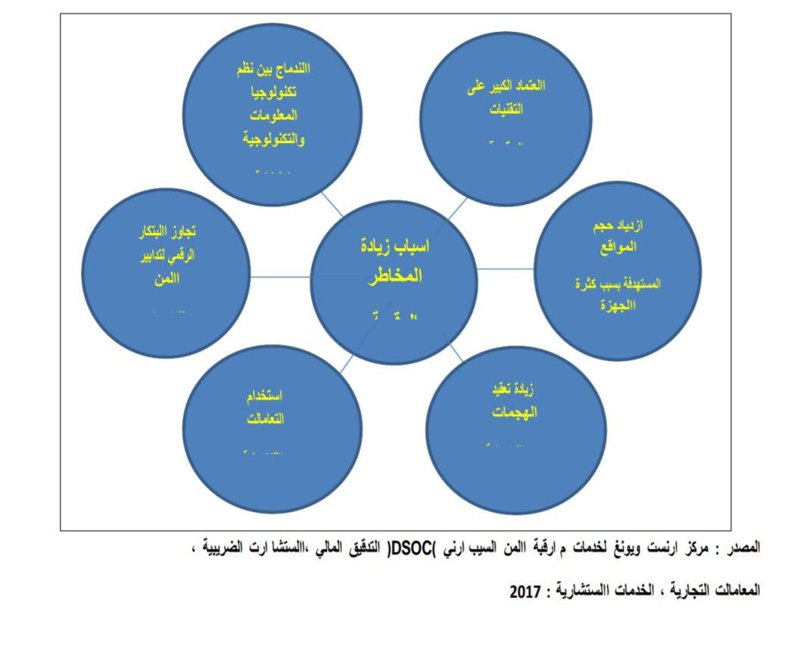

Name: أسماء محمد شعبان الخولى
Name: خلود احمد عبيد
Name: محمد السيد ابو غالية
Name: محمد الشرشابي
Name: محمد صلاح الشافعي
In recent years, Larner College Medicine changed his thinking Teaching in a traditional classroom environment. The college has replaced lectures with Active learning is a model that encourages Student engagement, skills development, Student engagement, skills development, مشاركة الطلاب، تنمية المهارات، Student participation, skills development, مشاركة الطلاب، تنمية المهارات، Collaborate with peers and faculty Professionals. Librarians at Dana Medical The library worked to support this change By incorporating new and innovative methods Teaching in its educational program. • Library faculty and staff created a web application called EBM Decision A tree that collects library resources used by medical students Use them to complete case-based problems. • Library connections for physical therapy and nursing replacement lectures Search the biomedical database with video tutorials and In-class activities. • Accredited liaison library for pediatrics and clinical OB/GYN Case presentation format for teaching new residents about the library. • The library launched an electronic self-training guide for Navigate the EndNote citation management tool.
ENGLISH
ENGLISH
ENGLISH
ENGLISH
ENGLISH
ENGLISH
The library is one of the sectors affected by digital transformation. In a study in the twenty-first century on the impact of digital transformation in libraries, the research design was a survey used for the study. The questionnaire was used as a tool for collecting data. It was found that the digital transformation of information has greatly affected libraries in the areas of service provision and utilization. From services, library management, coordination of library materials, and library care. Gimpel and Roglinger confirm in 2015 that digital transformation is usually implemented using application digitization procedures by converting existing services and products to digital versions, as digitization currently determines the direction of society. Examples of the impact of libraries on digital transformation have shown. The results are that India uses 72.3% of these electronic services instead of traditional ones
Abstract— The world has practically gone digital as almost everything has moved from analogue to digital. There is also an increasing appetite for digital data among people. Academic libraries of the 21st century operate in such a digital environment. However, studies examining the impact of digital transformations on libraries have remained largely scarce. In this study, the researcher examined the impact of digital transformation on libraries. The survey research design was used for the study. A total of 240 library users and 240 library professionals took part in the study. The questionnaire was used as the instrument for data collection. The results showed that all the five assumptions tested in the study were supported. In particular, the researcher found that digital transformation of information have significantly impacted libraries in the areas of service delivery, service utilization, library management, library materials format and library patronage. Based on these results, the researcher recommends, among others, that libraries should continue to monitor and respond to changes that digital transformation trigger. Index Terms- digital transformation, libraries, information, new media, technologies I. INTRODUCTION Digitization currently defines the direction of the society. This is largely because improvements in technologies have substantially affected almost every aspect of the society. Information is now processed, stored and retrieved in digital format. Service delivery, access and utilization have all changed. New technologies continue to emerge to define the acquisition and utilization of information. There is also increasing awareness regarding the prevalence of digital technologies (see also Agarwal, & Lucas 2005; Ahmed, & Sundaram, 2011; Alexander & Lyytinen, 2017; Andersen & Ross 2016). Digital media platforms now serve the dual purpose of making information readily available to users and also as a sign of a person’s level of skills. This is because with digital transformation of information, access to information has been made easier and perhaps, cheaper than ever before. Therefore, ability to process, access, and utilize digital information is as regarded important skills in the 21st century society. The implication from the above is that there now exists digital transformation of information. The world is now in a digital phase. Information has been liberalized and monopoly has been broken down completely. Services providers also have equally changed their mode of operations. They have also changed their range of service and scope of operation. Different sectors of the society such as the economy, politics, marketing, journalism, health, agriculture, security, education, among others have all made changes in their Hundron K. Kari, Federal University, Otuoke operations to accommodate the irresistible force of digital transformation (see also Baskerville, 2008; Bharadwaj, Sawy, Pavlou, & Venkatraman 2013; Bhattacharya & Seddon 2009; Braun, Wortmann, Hafner & Winter 2005; Bucher, & Winter 2008; Collins, 2001). Digital transformations are currently changing many aspects of the society. New technologies are coming up almost on a daily basis such that it is difficult for anyone to predict what will happen in the world of technology the next minute. Tasks executions are becoming technology-driven faster that anyone could have ever predicted even as recent as ten years ago. Digital transformation can also be called digitization. The concept describes service delivery model that is chiefly driven by changes in new technologies. Stolterman and Fors, (2004) corroborate that digitization or digital transformation is used in reference to alterations that are linked to utilization of digital technology in all aspects of human society. Gimpel and Röglinger (2015) aver that digital transformation is typically implemented with the application digitization procedures by converting existing services and products into digital versions (see also Hauge, Ayala & Conradi; 2010; Kohli & Johnson 2011; Liu, 2012; Medina & Prario 2013). The library is one of the sectors that has been impacted by the digital transformation. Libraries of the current millennium are not the same as libraries of yesteryears. This is because libraries now operate in a digitally sensitive environment. Their users are also digital friendly. Library patrons have strong preference for digital contents. They also want to have access to library services under a very flexible arrangement whereby they may not necessarily need to be physically present in a library. Bradley, (2010) avers that in contemporary library services, ICTs-supported libraries to provide dynamic and flexible services than before. In the views of Bradley, modern libraries have recognized the place of digital transformation in the range of services that they render to their users. To that extent, libraries have incorporated digital features into the range of services they render. Pryor (2009) conducted a study to examine how libraries have responded to digital transformation. Particularly, the researcher looked at changes in working dynamics as well as working tools. His result showed that libraries have been significantly impacted in areas like skills requirements for management, for working in libraries and for acquiring information from libraries. Karim, Darus and Hussin (2006) cited in Singh (2018) examined the perceptions and use of wireless services in library and information services and reported that library users have positive disposition to wireless services and that they make use of it. According to the results, library users regard wireless services of libraries as very important to them. Singh (2018a) cited in Singh (2018b) did a study with the
objective to ascertain the use of digital services in libraries in India and found that there is high use of such services. The result of the study showed that as much as 72.3% of the sample, studied offer digital services. That is to say that digital transformation significantly influences service delivery. Gulcin (2017) studied libraries in Turkey to ascertain their utilization of digital technologies and found that libraries have changed in the scope and nature of service delivery as a result of digital technologies. Gimpel and Röglinger (2015) carried out a study to ascertain the impact of digital transformation and found that they have substantially impacted service delivery, data of service providers, management, value proposition, operations as well as transformation. The cardinal point to note from the above is that libraries of the 21st century have changed from what it used to be years ago. In today’s libraries, digital transformation are playing key roles. To guide this study, the researcher posed the below hypotheses: H1: There is a significance difference in the mean scores of library users and professionals on impact of digital transformation on delivery of library services H2: There is a significance difference in the mean scores of library users and professionals on the impact of digital transformation on utilization of library services H3: There is a significance difference in the mean scores of library users and professionals on impact of digital transformation on library management. H4: There is a significance difference in the mean scores of library users and professionals on the impact of digital transformation on library materials format. H5: There is a significance difference in the mean scores of library users and professionals on impact of digital transformation on library patronage. II. MATERIALS AND METHODS The design of this study was descriptive survey. Typically, descriptive survey research design allows a researcher to gather primary data for the purposes of describing, explaining or exploring a phenomenon. Therefore, the researcher used the descriptive survey design to describe and explain the digital transformation of information and how this has impacted on the society. In particular, the researcher examined the impact of digital transformation of information on delivery of library services, utilization of library services and evaluating the quality of library services. The sample size for the study was made up of 240 library users and 240 library professionals. It was decided that both library users and professionals will be appropriate for the study to enable the researcher get a balanced perspective of the impact of digital transformation on the libraries of the 21st century. The sample technique for the study was purposive sampling technique. The choice of this sampling technique was to ensure that only respondents who had the competence to understand the impact of digital transformation of information on the library were sampled. The researcher carried out the study in Nigeria. In particular, the study was conducted in Enugu State. The library users and the professionals were from three institutions namely University of Nigeria, Nsukka, Enugu State University of Science and Technology and Institute of management Technology, Enugu. The researcher used the questionnaire the instrument for data collection. The choice of the questionnaire was because it has the potential to generate large volume of information. Face validity of the questionnaire instrument was determined with the use of three experts from University of Nigeria, Nsukka. The experts who were from measurement and evaluation assessed the clarity of the items, their logical arrangement as well as how appropriate they were in generating the data needed for the study. At the end, the comments of the experts guided the researcher in preparing the final version of the instrument. The researcher used the test-retest approach to ascertain the reliability of the instrument. To achieve this, the researcher administered 30 copies of the questionnaire selected respondents (15 library users and 15 library professionals). After a time frame of two weeks, the same respondents were again contacted and the same instrument was administered to them. Using the SPSS version 22, the researcher ascertained the reliability figure using correlation coefficient and this yielded a value of .86. This suggests that the instrument was reliable. To analyse the results of this study, the researcher used a combination descriptive statistics like simple percentages, mean and standard deviation while inferential statistics like t-test was used to test the hypotheses at 0.05 level of significance. The results were presented in tables. III. RESULTS There was 100% return rate for both library users and professionals. The sample for library users was 62% male and 38% female. For library professionals, it was 59% male and 41% female. The mean age of library users was 20 years (range 18 and 22 years). For the library professionals, the mean age was 35 years (range 28 and 42 years). All the library users were unemployed. This is expected because they were all undergraduates. They were also single. On the other hand, 88% of the library professionals were married. 2% of them were divorcees, 3% were windowed while 7% of them were single. In terms of years of practice with the library, the mean age of practice was found to be 15 years (range 6 and 24 years). To test the hypotheses raised in the study, the following tables were computed: Table 1: t-test analysis of library users and professionals on the impact of digital transformation on delivery of library services Grouping Mean std t Df decision Users 3.1 .91 Professionals 3.2 .64 9.561 673 NS The essence of the table above was to ascertain the views of library users and professionals concerning the impact of digital transformation on the delivery of library services. The results showed that p =0.60 was more than the level of significance. This means that the first assumption was not supported and the researcher concludes that both library users and professionals are of the view that digital transformation have significantly impact on the manner through which library services are provided. The researcher then concludes with 95% confidence that both library users and professionals are of the view that digital transformation have changed the ways library services are delivered to users. Table 2: t-test analysis of library users and professionals on the impact of digital transformation on utilization of library services Grouping Mean Std t Df decision Users 3.4 .77 Professionals 3.3 .81 9.063 654 NS The result in table two above sought to ascertain the impact of digital transformation on the utilization of library services. The result showed that the p-value was more than the level of significance (p> 0.05). Therefore, the second assumption was unsupported and we conclude that there is no significant difference in the mean scores of library users and professionals on regarding the impact of digital transformation on the utilization of library services. Table 3: t: t-test analysis of library users and professionals on the impact of digital transformation on library management. Grouping Mean Std T Df decision Users 3.1 .82 Professionals 3.1 .90 6.562 601 NS The essence of the above table was to ascertain the mean scores of both library users and library professionals on the impact of digital transformation on library management. The result showed that the p-value was more than the level of significance (p> 0.05). Consequently, the third assumption was equally unsupported and the researcher concludes that here is no significant difference in the mean scores of library users and professionals on the impact of digital transformation on library management. Table 4: t-test analysis of the mean scores of users and library professionals on the impact of digital transformation on library materials format Grouping Mean Std t df decision Users 3.3 .73 Professionals 3.3 .61 8.513 8.542 NS The essence of table four above was to ascertain library users and professionals views on the impact of digital transformation library materials format. The result showed that the p-value was more than the level of significance (p> 0.05). Therefore, the fourth assumption was also not supported and the researcher concludes that there is no significant difference in the mean scores of library users and professionals on the impact of digital transformation on the format of library material contents. Table 5: t-test analysis of the mean scores of users and library professionals on the impact of digital transformation on library patronage Grouping Mean Std t df decision Users 3.0 .39 Professionals 3.0 .54 9.910 6.541 NS The results in table five above presents the mean scores of both library users and professionals regarding the impact of digital transformation on library patronage. The result showed that the p-value was more than the level of significance (p> 0.05). Therefore, the fifth and last hypothesis was unsupported and the researcher concludes that there is no significant difference in the mean scores of library users and professionals on the impact of digital transformation on library patronage. Discussion of Findings Digital transformations have significantly impacted on almost every facet of the human society. In this study, the researcher examined the impact on libraries using a sample of both library users and professionals. The researcher achieved this by testing five alternate hypotheses. In the first hypothesis, it was assumed that there is a significance difference in the mean scores of library users and professionals on the impact of digital transformation on delivery of library services. That assumption was not supported. On the contrary, the result showed that both the library users and professionals agreed that the digital transformation of information has highly impacted on the delivery of library services in the 21st century. This result points to the fact that libraries have also responded to the changing 21st century environment. They have changed how they delivery their services to the users. In the second assumption, it was assumed there is a significance difference in the mean scores of library users and professionals on the impact of digital transformation on utilization of library services. Contrary to that assumption, it was found that both library users and professionals agreed digital transformation have significantly impacted utilization of library services. That is to say both users and professionals agreed that digital transformation of information have significantly affected the utilization of library services. Also, contrary to the third assumption, the results of the study showed that there is no significance difference in the mean scores of library users and professionals on impact of digital transformation on library management. That is to say that both library users and professionals agreed that digital transformation have significantly impacted on the management of libraries. In contemporary society, the management of libraries have also changed to accommodate the demands of the 21st century. In the fourth assumption, the researcher assumed that there is a significance difference in the mean scores of library users and professionals on the impact of digital transformation on library materials format. This result means that libraries in the 21st are also changing in the format of the materials. In contemporary library services, contents are delivered to users in format like videos, pictures, texts among others. In the last assumption, it was hypothesized that there is a significance difference in the mean scores of library users and professionals on impact of digital transformation on library patronage. That assumption was also not supported as the results showed that both library users and professionals are of the views digital transformation have significantly impacted on the patronage of libraries. The results of this study regarding the impact of digital transformation on libraries is www.wjir.org consistent with that of Singh (2018), Gulcin(2017) and Pryor (2009) all of whom have documented that digital transformations have changed the face of libraries in the 21st century. IV. CONCLUSION/RECOMMENDATIONS Based on the results of this study, the researcher concludes that digital transformations have significantly affected the libraries. The impact of digital transformation in libraries have been felt in areas like service delivery, utilization of library services, management of libraries, patronage of library services as well as the content format of libraries. Libraries of the 21st century have responded to the demands of the moment. The quest for digital content among the public is high and library users are no exception. This has put libraries on their feet because they need to respond proactively to attract and sustain the attention of the users. This is important because library users of the digital media age have many media contents competing for their attention. Most of these media are packed in contents format that endear them to the users. This reality even makes the job of libraries more challenging because the competition is stiffer that they may imagine. This study recommend that libraries should continue to present contents in formats that could attract the attention of library users. It is also suggested that library management should monitor trends in the digital transformation closely and make adjustments where there is need. Finally, further studies should be conducted in other parts of Nigeria for better comparison. REFERENCES [1] Agarwal, R. and H. C. Lucas Jr (2005). The information systems identity crisis: Focusing on highvisibility and high-impact research. MIS quarterly, 381-398. [2] Ahmed, M. D. & Sundaram, D. (2011). Sustainable business transformation. In: Proceedings of the Americas Conference on Information Systems. Detroit: USA. [3] Alexander, D.& K. Lyytinen (2017). Organizing successfully for big data to Transform Organizations. In: Proceedings of the Americas Conference on Information Systems. Boston: USA. [4] Andersen, P. & J. W. Ross (2016). Transforming the LEGO group for the digital economy. In: Proceedings of the International Conference on Information Systems. Dublin: Irleand. [5] Balijepally, V., Mangalaraj, G. and K. Iyengar (2011). Are we wielding this hammer correctly? A reflective review of the application of cluster analysis. Information Systems Research. 12 (5), 375-413. [6] Baskerville, R. (2008). What design science is not. European Journal of Information Systems 17 (5), 441-443. [7] Bharadwaj, A., El Sawy, O. A., Pavlou, P. A. & Venkatraman, N. (2013). Digital business strategy: Toward a next generation of insights. MIS Quarterly 37 (2), 471-482. [8] Bhattacharya, P. J. & Seddon, B (2009). Role of enterprise systems in business transformations: a management perspective. In: Proceedings of the Australasian Conference on Information Systems. Melbourne: Australia, pp. 278-289. [9] Braun, C., Wortmann, F., Hafner, M. & Winter, R. (2005). Method construction – A core approach to organizational engineering. Symposium on Applied Computing, 1295-1299. [10] Bucher, T. and R. Winter (2008). Dissemination and importance of the method’ artifact in the context of design research for information systems.” In: Proceedings of the International Conference on Design Science Research in Information Systems and Technology. Atlanta: USA. [11] Collins, J. C. (2001). Good to great: Why some companies make the leap and others don’t. New York: Harper Business. [12] Gastaldi, L. & Corso, M. (2012). Smart healthcare digitalization: Using ICT to effectively balance exploration and exploitation Within Hospitals. International Journal of Engineering Business Management (4), 1-13. [13] Gimpel, H. & Röglinger, M. (2015). Digital transformation: Changes and chances – insights based on an empirical study. Project Group Business and Information Systems Engineering (BISE) of the Fraunhofer Institute for Applied Information Technology FIT, Augsburg/Bayreuth. [14] Gulcin Kubat, (2017). The mobile future of university libraries and an analysis of the Turkish case. Information and Learning Science, 118 ( ¾).120-140 [15] Hauge, O., Ayala C. & Conradi, R. (2010). Adoption of open source software in softwareintensive organizations – A systematic literature review, Information and Software Technology 52 (11), 1133–1154. [16] Henriette, E., Feki, M., & Boughzala, I. (2015). The shape of digital transformation: A systematic literature review MCIS 2015 Proceedings. 10. http://aisel.aisnet.org/mcis2015/10 [17] Kohli, R. & Johnson, S. (2011). Digital transformation in latecomer industries: CIO and CEO leadership lessons from Encana Oil & Gas (USA) Inc. MIS Quarterly Executive 10 (4), 141– 156. [18] Liu, D. (2012). Competitive business model in audio-book industry: A case of China.” Journal of software 7 (1), 33-40. [19] Medina, M. & Prario, B. (2013). The transformation of audiovisual media companies: The cases of Mediaset (Italy) and Antena 3 (Spain). Studies in Communication Sciences 13 (2), 166–173 [20] Pryor, G. (2009). Skilling up to do data: Whose role, whose responsibility, whose career? The International Journal of Digital Curation, 4 (2), 34-47. [21] Singh, S. (2018). Digital transformation of library services in the mobile world: The future trends. Retrieved from /DigitalTransformationoflibraryservicesi nMobileWorldinIndia_NLU.pdf [22] Stolterman, E. and A. C. Fors (2004). “Information Technology and the Good Life.” In: Information Systems Research: Relevant Theory and Informed Practice. Ed. Kaplan, B. et al., London: Kluwer Academic Publishers.
تناولت الدراسة مفهوم المكتبة الرقمية، ونشأتها، ومراحل تطورهـا موضـحة مشكلة المصطلحات الرقمية. وسلطت الدراسة الـضوء علـى مـستلزمات المكتبـة الرقمية، ومجموعاتها والعمليات الفنية من حيث التصنيف والفهرسة، كمـا تطرقـت لآليات الاسترجاع الرقمي، وبينت أساليب البحث عن المعلومـة الرقميـة، موضـحة معنى وآلية المنطق البولياني في البحث عن المعلومات، كما عرضت بعجالة صورة المكتبات الرقمية عربياً، وقدمت عرضاً لأهم التحديات التي تواجهها المكتبات الرقمية العربية في العصر الراهن. وخلصت الدراسة إلى مجموعة من النتائج والتوصيات.يشهد العالم الحديث ثورة متزايدة في مجال المعلومات والتقنيات المستخدمة فـي معالجة هذه المعلومات لتيسير الحصول عليها واستخدامها، تمثل في استخدام منظومات معلومات متعددة في تسيير العمل داخل المكتبات، واستبدال الوسائل التقليدية بـأخرى إلكترونية فيما يتعلق بخزن المعلومات واسترجاعها، والاستفادة من تقنية الاتصال فـي بث المعلومات والاتصال بمراصد المعلومات عبر العالم، والمشاركة في المعلومـات من خلال إنشاء شبكات المعلومات أو الانضمام إليها (12.( إن ثورة المعلومات شعار يرفعه القائمون على أمر المعرفـة الإنـسانية خـلال الآونة الأخيرة، تلك الثورة التي تتمثل أركانها في الطفرة التي شهدها عالم الاتـصال وما ارتبط بها من تقدم هائل في سبل التبادل المعرفي، مما ترتب عليه ظهور وسـائل جديدة في عالم الإنتاج المعرفي كالشبكة العالمية للمعلومات وما أحدثتـه مـن تطـور ملحوظ في فنون النشر الالكتروني وظهور مصطلح الكتـب الالكترونيـة ومـن ثـم المكتبات الإلكترونية. والمكتبات الرقمية. النتيجة المنطقية التي ترتبت على هذه الثورة المعرفية أن تغيرت النظرة البحثية إلى عالم المعرفة. والأدوات باتت متاحة ويـسيرة والتبادل أمر يسير والنشر أيسر من سابقة عبر شكبات المعلومات ذلـك كلـه دفعنـا للسعي وراء الوقوف على كل جديد في هذا المجال، والبحث قـي مفهـوم المكتبـات الرقمية، نظرًا إلى عجز المكتبات التقليدية عـن تقـديم خـدمات جديـدة متطـورة للمستفيدين والباحثين عن المعلومة، وهذه المكتبات التي فرضها التطور التقني بأبعاده ومعطياته وأدواته المختلفة هي التي تبدو أكثر جاذبيـة وواقعيـة لمختلـف شـرائح المستفيدين، ولذا فإن مبادئها ستتنوع بتنوع تبعيتها وأهدافها وجمهورها وستكون مكتبة المستقبل هي المكتبة الرقمية التي قد لا تحتاج بالفعل إلى مكان محسوس يـأتي إليـه الباحثون المستفيدون والدارسون وإنما لموقع إلكتروني وتجهيـزات ومعـدات تقنيـة يستخدمها المستخدمون من مختلف المواقع والأماكن بل إن مثل هـذه المكتبـات قـدلاتحتاج إلى أن يكون مستخدمها إنسانًا وإنما قد يستخدمها نظـام معلومـات آخـر. .( (gSperber McQueen. & Burnard, 1994 * مشكلة الدراسة: أدى الانفجار المعرفي وتزاوج تقنية الاتصالات مع ثورة المعلومات إلى وجود مجتمع المعلومات الرقمي ، وبدأت المكتبات تسعى جديًا وراء التطـوير واسـتخدام أحدث التقنيات في إتاحة المعلومات وذلك بما يتوافر لها من إمكانيات مادية وبـشرية، إلا أنها تفتقر إلى التخطيط والتنظيم والأطر والموارد البشرية والتكنولوجيا، والأدوات. وقد برزت مشكلة الدراسة من إعلان المكتبات العربية عن بدء مشروعها للمكتبة الرقمية التي جاء متأخرًا زمنيًا عن مثيلاتها في دول العالم المختلفة، مما استلزم بالتبعيـة رصـد تلـك المحاولات واستكشافها ؛ لما لها من أهمية في تحديـد مـواطن القـوة والـضعف فـي الممارسات والتطبيقات للاستفادة منها. يعتقد الباحث أن هذه المكتبات تعـاني نقـصًا فـي التكنولوجيا، والتمويل، والتخطيط، والأطر الوظيفية المتخصصة في مجال تطوير المكتبات وتقنية المعلومات بها تمهيدًا للتحول الرقمي، مما انعكس بدوره سلبًا على الخـدمات التـي تُقدمها هذه المكتبات بشكل عام في عصر التميز الرقمي. *أهداف الدراسة: 1 .تعرف مفهوم المكتبة الرقمية، وأهم متطلبات إنشائها بشكل عام. 2 .تطوير إجراءات المكتبات وأعمالها، بغية توفير خدمات ُتمكن مـن إشـباع حاجـات المستفيدين منها، وذلك بوضع خطة للتحول نحو المكتبة الرقمية على مراحل مدروسة. * -تساؤلات الدراسة: 1 .ما مفهوم المكتبة الرقمية؟ وما أهم مميزاتها ومتطلبات إنشائها؟ 2 .ما مدى استخدام تقنية المعلومات( الحاسب والبرمجيات والطرفيات) في المكتبات العربية..ما دور الكادر البشري المؤهل في نجاح المكتبة الرقمية. 4 .ما التحديات التي تواجه المكتبات الرقمية العربية ؟ *منهج الدراسة وأدواتها: للتحقق من الأسئلة المحددة والوصول للأهداف الموضوعة اعتمدت الدراسة على المنهج التاريخي والمنهج الوصفي،لرصد خصائص موضوع الدراسة. * مصطلحات الدراسة: 1 .المكتبات الإلكترونيةLibrary Electronic : تستخدم خليطًا مـن التقنيـات مـع مصادر معلومات تقليدية كالكتب الورقية والإلكترونيةكـالأقراص المدمجـة أو .(. Al-Fadhli,2006)المتنوعة الشبكات 2 .المكتبات الافتراضية(التخيلية )Libraries Virtual : هي مكتبات تشكل روابـط لعدد من المكتبات الرقمية ومن المؤسسات لتقديم خدمة معينة من دون أن يعرف الباحث بالضرورة أين مصدر الخدمة، وتتم فيها معالجة المعلومـات وتخزينهـا واسترجاعها بالطرائق الإلكترونية الحديثة وهي موجودة على الإنترنت وليس لها مكان في الواقع .www.al-jazirah.com.sa/digimag/10042005/gadeia29.htm - 22k 3 .المكتبات الرقمية :Library Digital هي تلك المكتبة التي تقتني مصادر معلومات رقمية، سواء المنتجة أص ًلا في شكل رقمي أو التي تم تحويلها إلى الشكل الرقمـي، ولا تستخدم مصادر تقليدية مطبوعة بغض النظر عن أن تكون متاحة على الإنترنتأو لا، وتجري عمليات ضبطها بيليوجرافيًا باستخدام نظام آلي، ويتاح الولوج إليهـا عن طريق شبكة حواسيب سواء كانت محلية أو موسعة أو عبر شبكة الإنترنـت " (Polger,1999)..المنطق البولياني في البحث: هو عبارة عن عوامل منطقية تقوم بالمقارنة بـين مصطلحين أو أكثر، تعمل على استخراج المعلومات المطلوبة واسترجاعها بشكل يضيق دائرة البحث أو يوسعها، بغـرض الوصـول إلـى أدق التفاصـيل عـن الموضوع أو الموضوعات التي يبحث عنها الباحث، وسط الكـم الهائـل مـن المعلومات المخزونة فـي قواعـد البيانـات، بمختلـف وسـائطها وأنواعهـا. البحث البولياني حالة متقدمة في البحث والاسترجاع، يعمل إمـا علـى تـضييق . (Broadening a search).البحث توسيع أو) Narrowing a search) البحث * مفهوم المكتبة الرقمية: تتباين الرؤى عن المكتبة الرقمية اعتماداً على ما يدور بخلد المتحدث واهتماماته فكل له منظوره سواء كان اختصاصياً بالمكتبات أم مختص معلومات أو حاسباً آلياً أو معلماً أم ناشراً لدورية علمية. فالمكتبات الرقمية تشكل مؤسسات ونظم قواعد بيانات ضـخمة تحتـوي علـى مختلف مصادر المعلومات المخزنة، ونظم الاسترجاع الشاملة التـي تعـالج ببراعـة البيانات الرقمية عبر الوسائط المتعددة (نصوص، صـور، أصـوات، رسـوم ثابتـة ومتحركة)، وتدعم المستفيد في تعامله مع المعلومات المتوافرة على شبكات المعلومات المختلفة، ومنها الإنترنت(1997 ,Lesk.( هذا المصطلح من المصطلحات الحديثة التي دخلت حوسبة المكتبات، وظهـوره هو للتعامل والسيطرة على الكم الهائل من مصادر المعلومات الرقميـة والإلكترونيـة التي أصبحت متاحة عبر شبكة الإنترنت والتي أصبحت تؤثر فـي عمليـة البحـث والاسترجاع، فالبحث عن موضوع محدد مث ًلا قد يقدم للباحث مئـات وأحيانـًا آلاف المواقع (Websites (وكذلك مقدمو الخدمات الذين أصبحوا يعانون من هذا الكم الهائـل لاسترجاع المعلومات المطلوبة في موضوع محدد. ويعني مصطلح المكتبة الرقميـةمـن أما معجم أودليس الإلكتروني (2004,Reitz (فيفيد بأن المكتبة الرقمية هي مكتبـة بها مجموعة لا بأس بها من المصادر المتاحة في شكل مقروء آلياً (في مقابل كل المواد المطبوعة ورقيًا أو فيلمياً)(Microform ،(ويتم الوصول إليها عبـر الحاسـبات. وهذا المحتوى الرقمي يمكن الاحتفاظ به محلياً أو إتاحته عن بعد عن طريق شـبكات الحاسبات. ويعرف محمد فتحي عبد الهادي المكتبة الرقمية بأنها: تلك المكتبة التـي تقتنـي مصادر معلومات رقمية، سواء المنتجة أص ًلا في شكل رقمي أو التي تم تحويلها إلـى الشكل الرقمي، وتجري عمليات ضبطها بيليوجرافيًا باستخدام نظام آلي، ويتاح الولوج إليها عن طريق شبكة حواسيب سواء كانت محلية أو موسعة أو عبر شبكة الإنترنـت (النادي العربي للمعلومات، 2000.( الرقمية، هو أنها ويرى آرمز (2000 , Arms (أن التعريف غير الرسمي للمكتبة مجموعة منظمة من المعلومات، تصحبها بعض الخدمات، حيث تكـون المعلومـات مخزنة في أشكال رقمية ومتاحة عبر إحدى الشبكات. وتتفاوت المكتبات الرقمية فـي حجمها من مكتبات بالغة الصغر إلى أخرى بالغة الضخامة، كما أنها يمكن أن تستخدم أي نوع من أجهزة الحاسبات وأي برمجيات ملائمة في هذا الصدد. أن الإنترنت تعد هي البيئـة المثاليـة التي تقوم بتـوفير أوعيـة ومـصادر ومن خلال التعريفات الآنفة الذكر نستنتج لاحتضان وإتاحة الدخول إلى المكتبات الرقمية المعلومات على وسائط رقمية م خزنة في قواعد معلومات مرتبطة بـشبكة الإنترنـت، بحيث تتيح للمستفيدين الاطلاع والحصول على هذه الأوعية من خلال نهايات طرفيـة مرتبطة بقواعد المعلومات الخاصة بالمكتبة، وبهذه الطريقة تتيح للمستفيدين الاطـلاع والحصول على أوعية ومصادر المعلومات في أي وقت، ومن أي مكان تتـوافر فيـه نهايات طرفية مرتبطة بتلك القواعد المعلوماتية (2003,Engida. (نشأة المكتبات الرقمية: هـذه ما الذي يميز المواد أو الوسائط الرقمية عن غيرها؟ سواء كانت هـذه المـواد ملفات نصية أو أفلاماً أو موسيقا ... وما إلى ذلك؟ والإجابة المختصرة: هي أن الوسائط والمواد سهلة الإنتاج والتوزيع إلى الملايين بتكلفة تصل إلى الـصفر فإنتـاج كتاب مثلاً يكلف الشركة الناشرة مبلغاً معيناً يتضمن شراء حقوق النشر والتوزيع من المؤلف. وأجور المؤلف في العالم التقليدي يتضمن التكاليف أيضًا الخاصة بالطباعـة والتوزيع والنقل والتخزين وما إلى ذلك. أما في العالم الرقمي فيمكن تـوفير كميـات كبيرة من هذه التكاليف بوضع ملف الكتاب نسخة واحدة على جهاز مـزود مركـزي وبيعها للمشترين الذين يتصلون بالمزود عبر الإنترنت، ومن ثم فإن تكلفة بيـع كتـب إضافي هي صفر بالنسبة إلى الشركة الناشرة وكل ما تجنيه من بيع النسخ الرقمية يعد ربحاً صافياً. لكن هذه الأرباح التجارية لم تكن هي ما داعب أحلام الشاب مايكل هارت فـي عام 1971 عندما قام بإنشاء أول مكتبة رقمية في تاريخنا المعاصر وأطلق عليها اسم مشروع غوتمبرغ مخلدًا بذلك اسم الرجل الذي اخترع المطبعة في القـرن الخـامس عشر، منهيًا بذلك سيطرة رجال الكهنوت المسيحي على إصـدار الكتـب ونـشرها، ومؤذنًا بذلك عصر التنوير في أوروبا وتمكين المواطن الأوروبي العادي من اقتنـاء الكتب وقراءتها. مايكل هارت هو غوتمبرغ العصر الرقمي: الحلم الذي راوده فـي عـام 1971 وما زال يراوده حتى يومنا هذا هو تمكين كل من يملـك وصـلة إنترنـت وجهـاز كومبيوتر من الحصول على أمهات الكتب وأصول المعرفة الإنسانية وقراءتها. ويعـد موقع مشروع غوتمبرغ اليوم نقطة مركزية لكل من يرغب بالحصول علـى نـسخة رقمية من أعمال مشاهير الكتاب والمفكرين على مر العصور ما دامت هذه الأعمـاللم تكن مشمولة بقوانين حماية الملكية الفكرية، ويوجد ضمن الموقع اليوم أكثـر مـن 10آلاف من هذه الكتب التي تتوافر كملفات نصية مضغوطة أو كملفات نصية فقـط، وقد كان هدف هارت منذ البداية هو أن يتمكن من تزويد مستخدمي الإنترنت بـأكثر من ترليون ملف نصي مع نهاية العام 2001 ،ورغم الكميات الهائلـة مـن الملفـات المتوافرة ضمن موقع مشروع غوتمبرغ فإنه لم يحتو ِ على كثير من الميـزات التـي يمكن أن تجعل منه مكتبة رقمية كاملة مثل إمكانيات البحث في الـنص أو تـصنيف الكتب ... وما إلى ذلك. لايحتوي الموقع اليوم إلا على محرك بحث بسيط يبحـث فـي الكتـب حـسب العناوين أو حسب اسم المؤلف والسبب في ذلك هو أن هارت منذ البدء ليس مهتماً من النواحي التقنية للموقع وإنما هدفه الوحيد وحلم حياته هو أن يضع أكبـر كميـة مـن الكتب الرقمية المجانية على الشبكة، ويحصل هارت على تمويله اليوم مـن الجامعـة البندكتية في ولاية إلينوي التي عينته أيضاً أستاذاً في علوم النص الإلكتروني ووفرت له المعدات اللازمة لتشغيل الموقع، كما يعاون هارت في جهوده شبكة من المتطوعين يبلغ عددها نحو الألف، ولكن هارت لم يكن وحده في جهوده الرامية إلى إنشاء أضخم مكتبة إلكترونية للنصوص الرقمية حيث ظهر في أوائل التسعينيات مشروع وايرتـاب وهو موقع يستخدم إلى اليوم تقنية غوفر لتداول الملفات عبر الشبكة، ويحتوي علـى مجموعة هائلة من النصوص الرقمية المتخصصة كنصوص المعاهـدات والقـوانين الدولية والوثائق التقنية والعسكرية وما إلى ذلك. وفي عام 1993 قام شاب اسمه جون مارك أوكربلوم وكان طالباً في علوم الكومبيوتر ويعمل مديراً لموقع إنترنت خـاص بجامعة كارنيغي ميلون ببدء العمل على فهرس يضم وصلات إلى الكتب الإلكترونيـة الموجودة على الشبكة جميعها بما في ذلك مشروع غوتمبرغ، وأطلق أوكربلوم علـى فهرسه هذا اسم صفحة الكتب الإلكترونية، وفي عام 1998 حصل أوكربلـوم علـى درجة الدكتوراه في علوم الكومبيوتر وانتقل إلى جامعة بنسلفانيا حيث أخذ يعمل علىالبحوث المتعلقة بعلم المكتبات الرقمية في مكتبة الجامعة وقسم علوم الكمبيوتر مرتكزاً على فهرسة الأساسي الذي طوره في جامعة كارنيفي سيلون الذي أصبح جـزءاً مـن مراجع المكتبات الرقمية لدى جامعة بنسلفانيا. ويحتوي الموقع اليوم علـى وصـلات بعشرات الألوف من الكتب الإلكترونية المجانية باللغة الإنكليزيـة أو غيـر المجانيـة ولكن التي سمح مؤلفوها بنشرها عبر الإنترنت، كما يحتوي الموقع على وصلات إلى العديد من المواقع التي تقوم بنشر الكتب الإلكترونية مثل مشروع غوتمبرغ، ولا تقوم أية جهة رسمية بتمويل الموقع وما زال أوكربلوم يقوم إلى اليوم بالاعتنـاء بـالموقع (2 (مجاناً ودون أي مقابل . قبل أن نخوض في تعريفات المكتبة الرقمية ومصطلحاتها يجدر بنا التطرق إلى المفهوم الحضاري للمكتبة اليوم. * مشكلة المصطلحات في المكتبات الرقمية: تشكل المصطلحات عائقًا في وصف المكتبة الرقمية إ ِ ْذ إن هناك بعض الكلمـات يكون لها معنى اجتماعي وتقني وقانوني وفني التي تعوق بحثها بين أشـخاص لـديهم تخصصات مختلفة، وهناك العديد من الكلمات البسيطة التي تحمل معاني مختلفة لكـل من مختصي الحاسبات والناشرين والمحامين، إ ِذْ إن الاسـتخدام الـشائع للإنكليزيـة يختلف عن الاستخدام المتخصص كما أن اختلاف اللغة الإنكليزية فـي العـالم خلـق ولكن تبقى المصطلحات الأكثر انتشاراً للمكتبة الرقمية هي: (3 (تنوعاً في المعاني Electronic Library الإلكترونية المكتبة Hypred Library المهجنة المكتبة Vertoal Library الافتراضية المكتبة 2 - النظم الآلية والتقنيات المتطورة / محمد محمد أمان. – ص62. 3 - مفاهيم أساسية في بنية المكتبة الرقمية / آرمز وليام. - ترجمة محمد عبد االله – ص2 – 3.Library of Future المستقبل مكتبة Digital Library الرقمية المكتبة Library – with out Wall جدران دون مكتبة البوابات حيث يوجد لكل مصطلح من المصطلحات السابقة تعريفاً خاصاً به: أ ـ المكتبة الرقمية: هي المكتبة التي تملك مصادر إلكترونية محسبة فقط ولا تستخدم مصادر تقليدية مطبوعة بغض النظر عن أن تكون متاحة أو لا. ب ـ المكتبات الافتراضية (التخيلية): وهي مكتبة موجودة على الإنترنت وليس لها وجود في الواقع. ج ـ المكتبات الإلكترونية: وهي لها معنيان: المعنى الشامل الذي يشمل المصطلحات جميعها. هي مكتبة عكس الافتراضية ولها موقع على الإنترنت ومكان في الواقع. ومن التعاريف السابقة جميعها يمكن أن نستخلص تعريفاً للمكتبة الرقمية: هي منظمات تقدم مصادر المعلومات بمساعدة الأطر المتخصة في اختيار هيكل المعلومات وبنائه وتهيئة الوسائل المساعدة للوصول إليهـا والحفـاظ عليهـا وتأكيـد التواصل والاستمرارية لبناء المجاميع وتطويرها بكل المعلومات المنجـزة بالطريقـة الرقمية، لكي تصبح جاهزة ومتوافرة بشكل اقتصادي للمستفيدين؛ وذلك عـن طريـقتطور مفهوم المكتبة الرقمية: أثرت الشبكة العنكبوتية في عالم الاتصال والنشاط العلمي تأثيراً بالغاً وفي كـل جوانب دورة المعلومات حتى قلبت الأمور رأسًا على عقب، وحتى قيل: إَّنـه يمكـن الفصل اليوم بين عالم ما قبل العنكبوتية وبين عالم ما بعدها، ولعل من أبرز آثاره ذلك في المعلومات إلى أن غدت المكتبات في غضون السنوات الأخيرة تذهب بنفسها إلـى المستفيدين بعد أن كان الأخيرون منذ آلاف السنين يذهبون بأنفسهم إلى المكتبات، كما قد نتج عن ذلك أنماط جديدة من المكتبات لم تكن من قبل، لعـل أشـهرها المكتبـات الرقمية التي تعني معاني مختلفة لدى مجموعات مختلفة من البـاحثين، وقـد أصـبح مجال المكتبات الرقمية تخصصًا أكاديميًا حيويًا يهتم به باحثو الحاسبات الإلكترونيـة إلى جانب رجال القانون والاقتصاد والعلماء بصفة عامة، وفض ًلا عـن اختـصاصي المكتبات والمعلومات كما تزايد الإنتاج الفكري المنشور في هذا المجال تزايـدًا بالغـًا من الكتب وبحوث المؤتمرات، فض ًلا عـن تـوافر بعـض الـدوريات المطبوعـة والإلكترونية التي تنصب على هذا الموضوع سواء بصفة مباشرة أم غير مباشرة. وتعود قصة التفكير في إيجاد مستودع للمعرفة البشرية إلى ويلز 1938م عندما أشار إلى فكرة الموسوعة العالمية وهذه الفكرة دعت إلى العديد من المحاولات لتطوير مخزن عالمي للمعرفة، وتلا ذلك فاينفربوش بمقالته الشهيرة فن الميماكس التي وصف فيها أداة تساعد في إدارة مشكلات التواصل العلمي، وهذه المقالة التي نشرها بوش في مجلة أتلانتيك بعنوان (كما يمكن لنا أن نفكر) تعد كلاسيكية في هذا المجال لكنها تلقى رواجاً عند الدارسين وكثيراً ما يستشهد بها(1.( وفي الخمسينيات من القرن المنصرم قدم إنجلبرت 1963 تصورًا لتقنيـة مـن شأنها أن تزيد من ذكاء الإنسان وفطنته. وفي الستينيات استـشرف ليكلايـدر 1965 المستقبل بحديثه عن مكتبة المستقبل وقدم عددًا من الخصائص التـي رأى أن مكتبـةلمستقبل ستتضمنها. وتعود جذور المكتبـة الرقميـة الحاليـة إلـى الهايبرتكست في الثمانينيات. تطورت المكتبات الرقمية بالإفادة من التقنيات والأسس التي أرساها الباحثون في مجال استرجاع المعلومات كما استفادت هذه المكتبات أيضًا مـن منجـزات أنظمـة التكثيف الآلي وأنظمة البحث التي أنجزت في الستينيات. إذاً المكتبات الرقمية تبنى على أسس متينة أنتجت خلال أكثر من ثلاثة عقود من البحث العلمي في استرجاع المعلومات، لكنها لـن تظهـر بالـشكل الحـالي إلا فـي التسعينيات من القرن المنصرم وبعد أن كانت المكتبات الرقمية محـل اهتمـام عـدد محدود وربما مغمور من الباحثين في مجالات الحاسـبات والمكتبـات والمعلومـات أصبحت اليوم محور اهتمام لكثير منهم في تلك المجالات، وقد تعاظم الاهتمـام بهـا بشكل كبير ووجدت دعمًا حكوميًا وماديًا ومعنويًا في الولايات المتحدة، ولـذا يمكـن وصف العقد المنصرم بأنه شهد الانفجار الكبير نحو البحث والتطـوير فـي مجـال المكتبات الرقمية، ويمكن أن نستشف حجم الدعم الحكومي الكبير الذي وجدتـه هـذه (5 (المكتبات في المبادرات المتلاحقة والصيحات المتعالية لإنشاء المكتبات الرقمية . * أسباب نشأة المكتبة الرقمية: لعل بداية ظهور المكتبات الرقمية جـاءت نتيجـة تعـدد اسـتخدام تطبيقـات التكنولوجيات الحديثة في مجال المكتبات والمعلومات، وأبرزها تكنولوجيـا الاتـصال التي تأتي في مقدمتها شبكة الإنترنت التي أحدثت تغييرات وتطورات فـي إجرائيـات العمل الفني في المكتبات وفي نوعية الخدمات التي تقدمها للمستفيدين، ولعل الطفـرة التي أحدثتها هذه الشبكة في مجال النشر والإعلام قد جعلتها أحد الموارد المهمة التـي 5 - المكتبة الرقمية المفهوم والتحدي / منى محمد علي الشيخ. – ص88توفر كميات هائلة من مصادر المعلومات مما أدى إلى الإسراع فـي وتيـرة انتـاج المعلومات على اشكال متعددة وبطريقة مختلفة، هذا مـا دفـع المكتبـات والهيئـات التوثيقية إلى بذل جهود حثيثة من أجل الاستفادة من الإمكانيات الواسعة التي تقـدمها هذه الشبكة؛ وذلك بالبحث عن الأساليب والطرائق الناجحة مـن أجـل الـتحكم فـي المعلومات التي تتدفق فيها يومياً؛ والاستغلال الأمثل لها، وقد نتجت عن هذه الجهـود نظم حديثة، ومن ثم على التغيير في اسمها فأصبحت تـسمى المكتبـات الرقميـة أو المكتبات الافتراضية التي بدأت تحل ولو جزئياً محل المكتبات التقليدية (الورقية). قـد شكل ظهور هذه المكتبات منعطفاً مهماً في الوصول إلى المعلومات وأيضاً في طرائق بثها ونشرها وتبادلها دون حواجز زمنية أو مكانية لكونها مكتبـات مـصممة علـى شبكات الاتصال التي تستند في الأساس إلى تقنيات الاتصال والإعلام الآلي(7.( ولا بد من الإشارة إلى أنه خلال العقود الثلاثـة الأخيـرة، سـاعد عـدد مـن التكنولوجيات الحديثة في تحويل حلم المكتبـة الرقميـة إلـى حقيقـة، ومـن هـذه التكنولوجيات: ظهور الحاسبات الرقمية، وعمليات الاختـزان الرقمـي للمعلومـات، وانتشار الشبكات المتطورة بمختلـف أنواعهـا، وولادة شـبكة الإنترنـت العالميـة وتطورها. كما أن المرونة في عرض المعلومات للمستفيدين بطرائق متنوعة جعلـت المكتبة الرقمية مفضلة وشائعة ومستخدمة، خصوصًا بعد ظهـور نظـم النـصوص والأشكال والرسوم والحركة والصوت ولقطات الفيديو كواجهة بيانية للمستخدم، حيث تسمح هذه النظم باسترجاع اختياري غير متعدد بتسلسل للمعلومات من خلال توليفـة من (النصوص/ الصور/ الأصوات) التي تدعى «العقد». ويتم الربط بينها بما يـسمى «الوحدات» أو «الروابط»، ما يتيح للمستفيد (في رحلة الملاحة الإلكترونية) استرجاع المعلومات بشكل مفصل ومرئي ومسموع(8. ( وبوجود البيئة الإلكترونية للمعلومات التي ازداد ْت كمـًا وكيفـًا بتـوافر شـبكة الإنترنت انبثق منها عدة مصطلحات جديدة في المجالات الحياتية جميعها، ومن بـينالمؤسسات التي استفاد ْت من هذا التطور التقني الهائل المكتبات ومراكز المعلومـات، ونتج عنه ظهور مسميات جديدة للمكتبة مثل مكتبات بلا جـدران without libraries walls ،ومراكز إدارة المعلومات centers management information ،ومكتبات سطح المكتـب libraries desktop ،والمكتبـات الـشبكية libraries networked ،والمراكـز العصبية centers nerve ،والمكتبـات الإلكترونيـةlibraries electronic ،والمكتبـات الافتراضيةlibraries virtual ،إلا أن أشهر هذه المـصطلحات جميعـاً، إلـى جانـب المكتبات الرقمية، هي المكتبات الإلكترونية والمكتبات الافتراضية، وقد تحدثت معظم هذه المصطلحات عن خاصية معينة، إلا أن جمعية مكتبات البحث الأمريكية أشـارتْ في تعريفها للمكتبات الرقمية إلى أن تلك المصطلحات هي مردافات للمكتبة الرقميـة، وقد ساد كل منها في مرحلة من مراحل التطور التي شهدتها المكتبات بإدخـال تقنيـة الحواسيب في المكتبات(2003,Chandra. ( تعد ظاهرة المكتبة الرقمية أو المكتبة الافتراضية ظاهرة جديدة في عالم تقنيـات المعلومات التي تستخدم فيها تقنية المعلومات والاتصالات وأعمال الحوسبة بـصورة مكثفة مبشراً ببزوغ فجر جديد في عالم تقنية المعلومات. وقد جاءت نتيجة لدمج تقنية الاتصالات وتقنية الحاسب الآلي وما يرتبط به من صـناعات متطـورة للبرمجيـات، وينصب اهتمام المكتبة الإلكترونية على الإتاحة Access ،والخدمة (2003,Borgman.( Service * سمات المكتبة الرقمية ومبررات التحول إلى المجتمع الرقمي: يرى بعض المتخصصين أن إحدى مواصفات المكتبات الرقمية هي قدرتها على خزن المعلومات وتنظيمها وبثها إلى المـستفيدين مـن خـلال قنـوات المعلومـات الإلكترونية ومصادرها، وقد حدد بعض البـاحثين أربـع سـمات أساسـية للمكتبـة الإلكترونية وهي:.قدرة النظام المؤتمت (الآلي) على إدارة مصادر البيانات. 2 .القدرة على ربط متعهد المعلومات بالباحث المستفيد من خلال القنوات الإلكترونية. 3 .قدرة العاملين على التدخل في التعامل الإلكتروني عندما يعلن المستفيد عن حاجتـه لذلك. 4 .القدرة على جمع المعلومات وتنظيمها و تخزينها وتعميمها إلكترونيـًا واسـتيعاب التقنيات الجديدة المتاحة في عصر الإلكترونيات. وإذا كانت مصادر المعلومات الورقية ستظل تتعايش مع مـصادر المعلومـات الإلكترونية إلا أن الأخيرة ستكون هي المتفوقة والمهيمنة في المستقبل في ظل الزحف الإلكتروني المتنامي والشبكات المتطورة وذلك للأسباب الآتية: 1 .توفر للباحث كمًا ضخمًا من البيانات والمعلومات سواء مـن خـلال الأقـراص المتراصة أو من خلال اتصالها بمجموعات المكتبات ومراكز المعلومات والمواقع الأخرى. 2 .تكون السيطرة على أوعية المعلومات الإلكترونية سهلة وأكثر دقة وفاعلية مـن حيث تنظيم البيانات والمعلومات وتخزينها وحفظها وتحديثها، مما سينعكس على استرجاع الباحث لهذه البيانات والمعلومات. 3 .يستفيد الباحث من إمكانات المكتبة الإلكترونية عند استخدامه لبرمجيات معالجـة النصوص ولبرمجيات الترجمة الآلية عند توافرها والبرامج الإحصائية فضلاً عن الإفادة من إمكانات نظام النص ذي الطبيعة الارتباطية والوسائط المتعددة. 4 .تخطي الحواجز المكانية والحدود بين الدول والأقاليم واختصار الجهد والوقت في الحصول على المعلومات عن بعد، وبإمكان الباحث أن يحصل على كل ذلك وهو في مسكنه أو مكتبه ال.تمكن من استخدام البريد الإلكتروني والاتصال بالزملاء في المهنـة والبـاحثين الآخرين وتبادل الرسائل والأفكار مع مجموعات الحوار وتوزيـع الاسـتبيانات واسترجاعها. 6 .تتيح هذه المكتبات للباحث فرصة كبيرة لنشر نتائج بحثه فور الانتهاء منهـا فـي زمن ضاقت فيه المساحات المخصصة للبحوث على أوراق الدوريات. وهناك العديد من المبررات التي دعت إلى التحول إلى المجتمع الرقمي منها مـا هو اقتصادي ومنها ما هو مهني ومنها ما هو جغرافي وزمني وأهمها الآتي: 1 .زيادة الإنفاق على الأوعية التقليدية واستغلال الوقت والجهد في عملية البحث. 2 .حرص المكتبات على البقاء في ظل سوق خدمات المعلومات. 3 .زيادة كثافة الأوعية التقليدية. 4 .قدرة النظام الرقمي على مد الخدمة وكسر الحواجز الجغرافية * المكونات الرئيسة للمكتبة الرقمية: تقوم المكتبة الرقمية على ثلاث ركائز أساسية وهي: 1 .فهرس المكتبة العام، والاتصال بخدماته كطلبات الإعارة. 2 .مجموعة المحتويات الرقمية مثل قواعد المعلومات والكتب والمجلات الرقمية. الاستفسارات والإحاطة الجاريـة 3 .الخدمات التفاعلية مثل الدعم الفني والإجابة عن والأخبار وغيره. * أهداف المكتبات الرقمية: يفيد بعضهم (.2003,Engida (بأن أهداف المكتبات الرقمية تتمثل في: 1 .تطوير طرائق جمـع مـصادر المعلومـات الإلكترونيـة وخزنهـا وتنظيمهـا (6 (واستخدامها، وذلك لإشباع الاحتياجات المعلوماتية المتزايدة . 65.الإسهام في إنتاج المعرفة وتقاسمها والإفادة منها في مجال البحث العلمي، والعمل التجاريcommerce ، والحفاظ على التراث الثقافي والتعريف به. 3 .معاونة المجتمعات القائمة في قطاعات البحث والتعليم، وتيسير إنشاء مجتمعـات جديدة في تلك القطاعات. 4 .تفيد هذه المكتبات في إدارة المصادر الرقمية، والتجارة الإلكترونية، والنشر الإلكتروني، والتدريس والتعلم، وغيرها من النشاطات (2003 ,Libraries Electronic/Digital.( * تنظيم مجموعات المكتبة الرقمية: إذا كانت مجموعات المكتبة التقليدية توضع على الرفوف ويمكـن للمـستفيد أن يصل إليها وإن لم تنظم، فإن مجموعات المكتبة الرقمية ليست أكثر من أشياء رقميـة (objects digital(متناثرة على واسطة التخزين الالكتروني في الحاسب الآلي لا يراها المستخدم ولا يمكنه الوصول إليها إلا من خلال التنظيم. وتنظم مجموعـات المكتبـة الرقمية إما تنظيمًا ماديًا (organization physical (يمكن برمجيات نظام المكتبـة مـن تعرفها وإدارتها، أو تنظيمًا منطقيًا (organization logical (يمكن المستخدم من تصورها والحصول على ما يريد من المعلومات. وسيتم الحديث هنا عن ثلاثة أمور مهمة في تنظيم المكتبات الرقمية بإيجاز و هي: أولاً: التصنيف: تصنف مجموعات المكتبة الرقمية ليسهل على المـستخدم الإبحـار navigation خلالها، وهو أن يتحرك المستخدم في المجموعات ويتنقل من مجال موضـوعي إلـى آخر متفرع عنه، ومن العام إلى الخاص إلى الأخص حتى يجد ما يبحـث عنـه مـن المعلومات وتصنف المجموعات بخطة تصنيف مثل: تـصنيف ديـوي العـشري، أو التصنيف العشري العالمي أو أي خطة تصنيف أخرى تناسب المجموعات. ويمكن أن تصنف المجموعات وفق خطة تصنيف خالية مـن الرمـز ويـسمى ذلـك تبويبـاًأو نصف آلي أو آلياً بالكامل. * ثانياً: تبيان البيانات Metadat: يعني مصطلح بيانات البيانات بيانات تصف بيانات أخرى، وهذا المـصطلح وإن لـم يستخدم بهذا المعنى إلا حديثًا في سياق الحديث عن تنظـيم المكتبـات الرقميـة ومـوارد المعلومات الإلكترونية، إلا أنه معروف لدى المكتبيين منذ القدم لكـن بمـسمى الفهـرس. التي يتكون منها الفهرس مثل: أسماء المؤلفين، وعناوين الكتـب وغيرهـا هـي تصف بيانات أخرى (أوعية المعلومات التي تتكون منها مجموعات المكتبة التقليدية. فالبيانات بيانات والميتاداتا عبارة عن بيانات تصف سـمات المعلومـات وخصائـصها ومـصادرها، وتوضح علاقاتها، وتساعد على الوصول إليها أو اكتـشافها، وإدارتهـا واسـتخدامها بفعالية. وتستخدم الميتاديتا أو ما وراء البيانات أو البيانات الخلفية كما يسميها بعـض المتخصصين لتنظيم مصادر المعلومات في البيئة الإلكترونية حتى يسهل اسـترجاعها والإفادة منها. ويمكن تقسيم الميتاداتا إلى ثلاثة أنواع هي : ميتا داتا الوصفية:Metadata Descriptive : وهذه أشبه بالفهرسة الوصفية وإجراءاتها والتي من خلالها يمكن التعرف وفهم ما تم الحصول عليه من محتويـات المواقع ومصادر المعلومات الرقمية. حيث يتم إعطاء العنوان للمعلومات الرقمية، من هو المسؤول عن إيجادها وإنشائها مؤلف مثلاً (كشخص) أو هيئة، تحديد الموضوع أو الكلمات المفتاحية الدالة .words key للغة المستخدمة، تاريخ إعداد المادة وتحويلها إلى الشكل الرقمي الشكل للمادة المتوافرة (Format (على الرغم من كونها مـادة رقميـة ولكن هنالك جملة من المواصفات الواجب ذكرها لمـساعدة البـاحثين والمـستفيدين التعامل معها، مث ًلا البرمجية أو البرمجيات الواجب اسـتخدامها وتوافرهـا، ونـوع الحواسيب المستخدمة ومواصفاتها، والتغطية وتشمل عـد الـصفحات أو المجلـداتللأصل الورقي المحول إلى شكل رقمي والسنوات المشمولة بهـذه العمليـة خاصـة بالنسبة إلى مقالات المجلات . التركيب البنيوي للميتادا: Metadata Structural ويشمل هذا النوع وصفاً متكام ًلا للمواد ومصادر المعلومات التي تم تحويلها من شكلها الورقي إلـى الـشكل مثل على ذلك (الكتب) حيث يتم هنا إعطاء عدد الصفحات للكتاب) ثم عدد الصفحات التي غيرت الشكل الورقي إلـى المحوسب الجديد، وأفضل الورقية (التي تمثل الأصل الشكل الرقمي وتعرف بالصور (Images (لأن التحـول سـيغير حتمـًا بـين أعـداد . كذلك أعداد الفـصول والكـشافات الصفحات من الشكل الورقي إلى الشكل الرقمي والمراجع التي كانت موجودة في الأصل الورقي، كذلك يـشمل هـذا النـوع أعـداد الأشكال والرسوم وقوائمها إذا كان الكتاب يحتوي عليها، وهذا النوع يساعد الباحـث في مراجعة هذه الأمور في أثناء عملية البحث عـن الـنص والمعلومـات الرقميـة المطلوبة. الميتا داتا الإدارية Metadata Administrative: الرقمية، ويمكن يمكنها أن توفر البيانات الإدارية تتعلق بأسلوب الإتاحة والإدارة وحفظ المصادر أن تقدم معلومات حول حجم الملفات وكيفية فتحها واستخدامها، كذلك قيداً أو تسجيله (Record (حول كيف ومتى تم إنشاء وعمل المعلومات الرقمية، كـذلك معلومات حول توثيق هذه الملفات فض ًلا عما أصبح يعرف بإدارة حقوق الاسـتخدام Management Rightsبعد أن أصبحت المكتبات الرقمية تتيح للبـاحثين والمـستفيدين باستخدام ممتلكات ومجاميع المكتبة علاوًة على إمكانية الدخول واسـتخدام مـصادر معلومات رقمية لاتمتلكها المكتبة ولا تعد جزءًا من محتوياتها وإنما تصل إليهـا مـن خلال خدمات المعلومات على الخط المباشر لمكتبات ومؤسسات أخرى. 654ثالثاً: البحث والاسترجاع عبر محركات البحث : حسب محتويات المكتبة فإن محرك البحث الخاص بالمكتبة الرقمية (الالكترونية) يقوم مقام أمين المكتبة بالإجابة عن استفسارات الباحثين وتزويدهم بمصادر المعلوماتمن الكتب والمقالات العلمية والخرائط والجداول والرسوم والـصور، ويمكـنهم مـن سماع الموسيقى والتمتع بمشاهدة الأفلام...الخ. لذا فإن المكتبة الرقمية أو مـا تـسمى أيضًا (بالمكتبات الافتراضية) لا يتطلب وجودها مباني انشائية. تعد محركات البحـث بمنزلة كشافات شاملة للإنترنت، وعلى الرغم من أنها تهدف إلى تكشيف كـل كلمـة واردة في كل صفحة من صفحات الإنترنت إلا أنها لا تحقق هذا الهـدف الـذي يعـد مستحيلاً، ولكنها تكشف ما يقارب 60-80% من المعلومات المتوافرة على الإنترنت، وتقوم بذلك آليًا بعد تجميع صفحات باستخدام برمجيات منها الإنـسان الآلـي Robots والعناكب Spiders وزواحف الويب WebCrawler والديدانWorms وتعـد محركـات البحث Engines Search من الأدوات التي تساعد الباحث في إيجاد كل ما يرغب فـي الحصول عليه عن طريق البحث في أعماق المعلومات الهائلة الموجودة في الإنترنت ووضع محتوياتها بين يديه، موفرة بذلك الوقت والجهد للوصول إلى المعلومة المناسبة ومجنبة إياه الوقوع في متاهات البحث. * إستراتيجية البحث Strategy Search: هي تحليل وصياغة الطرائق الفضلى التي يمكن عـن طريقهـا الإجابـة عـن استفسار بحث معين بواسطة نظام استرجاع آلي عادة. ويحتاج البحث عن المعلومـات عبر مختلف أنواع الشبكات المحلية (LAN (والـشبكات الواسـعة (WAN ،(وكـذلك الشبكة الدولية للمعلومات المحوسبة "إنترنت "Internet إلى وضع واتباع خطوات علمية وعملية مدروسة في الوصول إلى المعلومات المناسبة والوافية، في الوقـت المناسـب والمطلوب، وللباحث المناسب والمطلوب. ومثل هذه الخطوات يطلق عليها، في مجالتخزين المعلومات واسترجاعها، اسم استراتيجيات البحث(Strategies Search . (وهناك عدد من الخطوات الواجب اتباعها وتنفيذها في عملية البحث عن المعلومات بالاتصال المباشر (Searching Online (عبر الشبكات المذكورة، من الممكن تحديدها بالآتي: 1 .بداية البحث، يبدأ البحث بعد تحديد أغراض البحـث وأهـدافها أو ًلا، والمعرفـة الكافية والفهم المطلوب لحاجة المستفيد إلى المعلومات من حيث الكمية المطلوبة منها والنوعية المحددة. المطلوبة للبحث، ويـتم اختيـار (Database) 2 .اختيار قاعدة- أو قواعد – البيانات قواعد البيانات عادة في ضوء أسس وعوامل عدة أهمها مجال التخـصص، أي الموضوع المطلوب تغطيته. وكذلك نوع القاعدة التي يحتاجها المـستفيد فهنـاك قواعد ببليوغرافيـة (Databases Bibliographic (تـشمل البيانـات الوصـفية والموضوعية الأساسية والمستخلصات، كما أن هناك قواعد حقائق وأرقاماً وأدلة، وقواعد نصوص كاملة وما شابة ذلك. ثم اللغة، أي لغة الاسترجاع بالإنكليزية أو غيرها. وهنالك عامل التغطية الجغرافية والزمنية للقاعدة . المناسـبة للبحـث (Descriptors) 3 .تحديد المفاهيم والمـصطلحات والواصـفات واختيارها وعلاقات تلك المفاهيم المتداخلة . 4 .استخدام المصطلحات والمواصفات بضوء استراتيجية البحث المطلوب واستخدام المنطق البولياني ( Logic Boolean (الذي يربط المـصطلحات أو يبعـدها عـن بعضها، ويضيقها أو يوسعها، بعبارات ثلاث متعارف عليهـا هـي و(And، (لا (Not ،(أو (Or (كذلك فإن الباحث يقـوم بتحديـد الحقـول (Fields (والقيـود (Records(واللجوء إلى لغة التعامل مع الحاسب 5 .ظهور نتائج البحث والمخرجات..تقييم المعلومات المسترجعة بضوء الاستراتيجية المطبقة، فإذا كانت المعلومـات المسترجعة كافية ووافية بالغرض فإن ذلك غالبًا ما يكون معنـاه أن إسـتراتيجية البحث، وما يتبع ذلك من خطوات، هي سليمة وموفقة وذات مردودات جيدة، أما إذا كانت المعلومات المسترجعة غير كافية وغير وافية بأغراض البحـث، فـإن غالبًا ما يعود ذلك إلى الخلل في خطوة أو أكثـر مـن خطـوات البحـث، وأن استراتيجية البحث تحتاج إلى تعديل وهنا يعود الباحث مره أخرى إلـى الخطـوة الثالثة ويتابع. 7 .طبع عينات النتائج، ففي حالة الحصول على المعلومات المطلوبة بـشكل كـاف وواف ِ بالغرض فإن الباحث يقوم بطبعها عن طريق جهاز الطبـع الملحـق مـع المحطة الطرفية والحاسب المايكروي. وقد ينهي البحث هنا، أو قد يعود مجـدداً للبحث. 8 .هل هناك تعديلات أخرى مطلوبة بغرض الحصول على نتائج إضافية ؟ 9 .هل يحتاج الباحث إلى اللجوء إلى قواعد بيانات أخرى؟. فإذا كان الجواب نعـم بالنسبة إلى هاتين النقطتين فإن على الباحث أن يرجع إلى الخطـوة الثالثـة مـن البحث، بالنسبة إلى الفقرة (8 (ويقوم باختيار مصطلحات وواصـفات بديلـة، أو يعود إلى الخطوة الثانية – بالنسبة إلى الفقرة (9 (ويقوم باختيار قاعدة معلومـات أخرى مناسبة، ثم يستمر بالخطوات. * المنطق البولياني في البحث :(Logic Boolean:( المنطق البولياني، أو كما يسميه بعضهم المنطق البولي، هو نظام يـستخدم فـي استرجاع المعلومات المحوسبة، عبر عبارات (و/ And ( لتضييق البحث عن طريـق الربط بين مصطلحين أو أكثر في البحث، و( أو /Or( لتوسيع البحث عن طريق الربطبين مصطلحين محتملين أو أكثر، و(لا/ Not ( لـرفض بعـض المـصطلحات غيـر المطلوبة في البحث. وفيما يأتي توضيح لذلك: 1 :تضييق البحث: تضييق البحث عن طريق الجمع بين الواصفات: وذلك باستخدام الأداة (و) يقابلها بالإنكليزية (And (ويرمز لها بإشارة الحاسوب (*) الموجودة في لوحة المفاتيح، أو أننا نكتب الأداة بمعية المـصطلحين (أو أكثـر) المطلوب جمعهما. مثال ذلك عندما نبحث عن موضوع (استخدام الحاسوب في تدريس مادة الرياضيات في المدارس الثانوية) فهناك أكثر من طريقة لتضييق البحث والجمـع بين المصطلحين المذكورين. نكتب مصطلح (الحاسوب )بالإنكليزيـة .(computer (ثـم نكتب المصطلح أو الواصفة (Descriptor (الثانية، وهي التعليم (education ( ثم نقـوم بالجمع بين المصطلحين أو الواصفتين. فعندما نكتب الواصفة الأول، يظهر لنا علـى شاشة الحاسوب الآتي: 87504 computer أي أن هناك هـذا العـدد المـذكور مـن التسجيلات عن هذا الموضوع مثلاً في قاعدة البيانات، ثم نطبع الواصفة الثانية، فيظهر لنا الآتي923977 Education. تضييق البحث عن طريق الجمع بين مصطلحين أو واصفتين: إذا أردنا الجمع بين مصطلحي (التعليم والحاسوب) فنطبع الآتي and computer education :فيظهر لنا الآتي مثلا: ً5411 education and computer ،أي أن مجمـوع التسجيلات والمقالات والوثائق التي تغطي الموضوعين في آن واحد هي (5411 (أما بقية التسجيلات والوثائق في موضوع التعليم فتخص أنواعاً أخرى من التعليم. بعد ذلك نحاول الجمع بين موضوعات (أو واصفات أو كلمات مفتاحيـة) مثـل (الرياضـيات Computer and education and: mathematics and high وكالآتي) الثانوية والمدارس school فتظهر لنا النتيجة المطلوبة والمحددة بـ (19 (وثيقة أو مقالة فقط، تجمع بينكل هذه الموضوعات وتوصل الباحث والمستخدم إلى المعلومات المحددة والمطلوبـة فعلاً. ونستطيع أن نجمع بين مصطلحات أو مجالات أخرى (كأن نحدد واصفة ثالثـة أو سنة محددة، وهكذا). كذلك فإننا نستطيع أن نتبع طريقة أسهل في الجمـع، مـثلاً نطبع: 2002-1995 and education and Computer أي المقالات المنشورة في الفترة الواقعة بين هذين العامين للموضوعين ذاتهما في أعلاه. وهكذا . تضييق البحث عن طريق استثناء واصفات: حيث نستخدم الأداة (not (بغرض عزل مصطلح أو واصـفة محـددة مـن البحث، أي أننا لا نريدها أن تكون مذكورة في النصوص، لعدم وجود علاقـة بينهـا وبين موضوع بحثنا، ويكون ذلك باستخدام الأداة (not (مثال ذلـك not school High: Secondary school ،: High school 13921الآتية النتيجة لنا فتظهر secondary school High school not secondary school 1232 ،3977 2 :توسيع البحث: وإذا ما أردنا أن يكون البحث عن المعلومات واسعاً وشاملاً لواصفتين أو أكثر فنستخدم الأداة (or (وتكون هذه الأداة مفيدة عند وجود مصطلحات مترادفة وذات علاقة، ومن الصعوبة التمييز بين مثل هذه العلاقة. فإذا ماأردنا أن نستخدم مثا ًلا آخر، في قاعدة البيانات الطبية المعروفة باسم (Medline ، (في موضوع طبي مثل (سرطان الثدي) فما علينا إلا أن نطبع الآتي: breast or cancer فتظهر لنا النتيجة كالآتي: or 1* 15487 2 ،*من الممكن استخدام أكثر من أداة أو عامل بولياني، في الوقت نفسه، مثلاً smoking not stomach and cancer ،:ونقصد بذلك أنَّنا نبحث عن التسجيلات التي تخص سرطان المعدة غير المتأثر بالتدخين، بل لأسباب أخرى. أو أن نقول مثلاً:and stomach and cancer ،وهنا ضيقنا البحث أكثر، لأننا طلبنا المعلومات والتسجيلات التي تربط بين موضوعات السرطان+ المعدة+ التدخين، وهكذا. *الرقمنة والمواد الرقمية: والرقمنة أو التحويل الرقمي digitization هو عملية تحويل البيانات إلـى شـكل رقمي وذلك لأجل معالجتها بواسطة الحاسب الإلكتروني (2004,Reitz .(وفي سياق نظم المعلومات، عادةً ما تشير الرقمنة إلى تحويل النصوص المطبوعة أو الصور (سـواء كانت صور فوتوغرافية أو إيضاحات أو خرائط... إلخ) إلى إشارات ثنائيـة signals binary باستخدام نو عً ما من أجهزة المسح الضوئي scanning التي تسمح بعـرض نتيجة ذلك على شاشة الحاسب. أما في سياق الاتصالات بعيدة المدى، فتشير الرقمنـة إلى تحويل الإشارات التناظرية المستمرة signals continuous analog إلـى إشـارات رقمية ثنائية) pulsating وبحسب تعريف تاننت(1999 ,Tennant (فإن المواد الرقمية هي تلك المواد التي تم اختزانها ومعالجتها ونقلها عبر الأجهزة والشبكات الرقمية (الثنائيـة binary (وإذا كانت المكتبة الرقمية هي مجموعة من المعلومات التي يتم تخزينها والوصول إليهـا بصورة إلكترونية، فإننا لا ينبغي أن ننسى في هذا الصدد أن المعلومات الرقمية شيء مستقل عن الأجهزة المادية، مثل الـسواقات الـصلبة drives hard والنـدل servers والمراقب أو الشاشاتج monitors؛ وذلك كما تستقل الحروف المطبوعة عـن الكيـان للكتاب. كما تنبغي الإشارة إلى أن مفهوم الوثائق الرقمية أوسـع دلالـة مـن الوثائق العنكبوتية، فالأخيرة تعد جزءًا من الأولى. ولا يعني ذلك أن العنكبوتية المادي مفهوم لايمكن أن تكون جزءًا من مكونات المكتبات الرقمية أو الافتراضية أو الإلكترونيـة، بل إنها يمكن أن تكون كل ذلك.وفيما يتصل بالوثائق محل التحويل الرقمي التي عادة ما توجد بالمكتبات، فـإن عملية الرقمنة بدأت أولا بالفهارس، ثم انتقلت إلـى كـشافات الـدوريات وخـدمات الاستخلاص، ثم إلى الدوريات نفسها والأعمال المرجعية الضخمة، وأخيرًا إلى نـشر الكتب (2004,Reitz .(ومعنى ذلك أن المكتبة الرقمية اليوم تشتمل على أي شكل مـن أشكال أوعية المعلومات ولكن في صورة رقمية. ويمكن أن تحتوي المكتبـة الرقميـة على أشكال متعددة من مصادر المعلومات، كما أنها يمكن أن تقتصر على نو عِ واحـد من المصادر كما هو الحال في المكتبات الرقمية للرسائل الجامعيـة. ويـرى ديجـان (2001 ,Deegan، (أن المصادر الرئيسة للمعلومات الرقمية هي: مقتنيات المكتبة التي تم تحويلها إلى الصورة الرقميـة، ومجموعـات البيانـات المشتراة على أقراص مكتنزة، ومجموعات البيانات المشتراة علـى الخـط المباشـر، والمطبوعات الإلكترونية ذات المقابل الورقي. والمطبوعات الإلكترونية التي ليس لهـا مقابل ورقي، والأعمال المرجعية الإلكترونية التي تزداد بصفة مـستمرة ولـيس لهـا مقابل ورقي. والكتب الإلكترونية. * متطلبات إنشاء المكتبة الرقمية: ليتم إنشاء مكتبة رقمية لابد من المرور بعدة مراحل من أهمها إدخال المعلوماتية في الوظائف الرئيسية للمكتبة التقليدية، وتشمل التزويد والفهرسة والإعارة وغيـره، وحوسبة أغلب إجراءاتها ثم رقمنة (Digitalization (محتويات المجموعـات النـصية وتحويلها إلى أشكال جذابة وصور متحركة، ومن أهم متطلبات إنشاء المكتبة الرقميـة :((Khan& Wilensky 2005)يأتي ما 1 -إحتياجات قانونية وتنظيمية إذ يتعين على المكتبة عند تحويل موادها النصيةمـن تقارير وبحوث ومقالات وغيرها إلى أشكال يمكن قراءتها آلياً الحصول على إذن خاص من صاحب الحق عملاً بقوانين حقوق الطبع والحماية الفكرية.-أجهزة خاصة لربط المكتبة بشبكة اتصالات داخلية وشبكة الإنترنت العالمية. 3 -أجهزة تقنية خاصة بتحويل مجموعات المكتبة من تقليدية إلى رقمية، وأجهزة حاسوب وملحقاته المختلفة، وطابعات ليزرية متطورة، وماسحات ضوئية، وأجهزة تـصوير، وطابعات وكاميرات رقمية، وأقراص ليزر مرنة ورقمية، وأشرطة صوتية، وأجهزة تكييف، ومولّدات كهربائية، وشاشات عرض، وفيديو رقمي. 4 -برمجيات (Software (وبروتوكولات لربط نظم إسترجاع المعلومات على الخط. 5 -الاشتراك في الدوريات الإلكترونية، حيث يتم ربط المكتبـة بالناشـر أو مقـدم التي يحتويها نظـام الفهـرس الخدمة برقم النطاق( Address IP. ( 6 -الربط بين موقع الدوريات الإلكترونية والدوريات الآلي في المكتبة، وكتابة الحواشي الخاصة بموقع الدوريات الإلكترونية . 7 -أطر بشرية فنية مؤهلة وقادرة على التعامل مع هذه التقنيات الحديثـة بوجهيهـا المادي والفكري. 8 -الدعم المالي القوي الذي يساعد على تنفيذ المشروع وتشغيله. ولعل من أهم متطلّبات بناء المكتبة الرقمية، بناء مجاميع رقمية وبحجم يمكن أن يجعلها ذات فائدة كبيرة. فـ«الرقمنة» ما هي إلا عملية استنساخ تقنيـة تم ّكـن مـن تحويل الوثيقة مهما كان نوعها إلى سلسلة حرفية أو إلى صورة. ويواكب هذا العمـل التقني عم ًلا فكريًا ومكتبيًا من أجل فهرستها وتمثيل محتوى النص المرّقم. * مميزات المكتبة الرقمية: يرى المختصون أن المكتبة الرقمية تتميز عن التقليدية وتتفرد بخصائص وفوائد نوجزها في الآتي (الرفاعي، 1998:( 662.النفاذ إلى المعلومات عن بعد، إ ِ ْذ إن إنشاء فهارس وكشافات رقمية للمواد المكتبية أو تحويل المواد المكتبية والوثائقية إلى الـشكل الرقمـي، يـسمح للمـستفيدين بالاطلاع عليها من أماكن عملهم أو منازلهم يتخطون الحواجز المكانية والحـدود بين الدول والأقاليم ويختصرون الجهد والوقت، إلى قـوائم مجموعـة المكتبـة، ويستطيعون أن يصوروا أو يستعيروا مقالات أو أجزاء من الكتب المتاحة مجاناً، أو المأجورة إذا كان مشتركًا في المكتبة. كما يمكن لعدد كبير مـن الأشـخاص الاطلاع على الكتاب أو الدورية أو الوثيقة نفسها في الوقت نفسه، كما أنها تعمل طوال ساعات الليل والنهار وطوال أيام السنة دون توقف(1999,Makdissy.( 2 .سهولة الاسترجاع وسرعته، فعندما تحول الفهـارس والكـشافات أو المـواد المكتبية والوثائقية إلى الشكل الرقمي يمكن للمرء استرجاعها بثوا نِ بد ًلا من عدة دقائق (الرفاعي، 1998.( 3 .تتيح النظم الرقمية إمكانية الاستخدام الفعال للمصادر المكتبية، حيـث تـوفر إمكانية تخزين مقدار هائل من المعطيات واسترجاعه ويمكن إظهـاره بـسرعة وسهولة. (الرفاعي، 1998( 4 .سهولة الاتصال والمشاركة،حيث يمكن توسيع مجموعات المكتبة عبر الاتـصال مع مكتبات أخرى، والمشاركة في مصادر المعلومات ومواردها . 5 .الحد من استهلاك الورق، يمكن الإقلال من استعمال الـورق واسـتهلاكه ممـا يخفض كلفة الورق ويوفر مكان التخزين. 6 .تكون السيطرة على أوعية المعلومات الإلكترونية سهلة وأكثر دقة وفاعلية،مـن حيث تنظيم البيانات والمعلومات وتخزينها وحفظها وتحديثها مما يـنعكس علـى استرجاع الباحث لهذه البيانات والمعلومات، كما أن ذلك سيخفف العـبء عـن أمناء المكتبة الذين سيهتمون فقط بروادها.تقليص بعض الأعمال الروتينية، مما يساعد على الاستفادة من وقـت العـاملين تخزينها وبثها من خـلال لأداء الأعمال الأخرى الضرورية 8 .الخدمة ذاتية ومن ثم يقل العبء عن المكتبة. 9 .إمكانية إتاحة أشكال جديدة من المعلومات، قد لا يمكن القنوات التقليدية ، والبحث فيها بـسرعة فائقـة 10 .يمكن تخزينها بصورة مكتنزةcompactly stored ( Arms,2000) مختلف أنحاء العالم من خلال 11 .إمكانية الوصول إلى محتويات مكتبات عالمية وفي إمكانية استخدام الفهارس المحوسبة. 12.إمكانية خزن نتائج البحث وتطبيق أساليب استراتيجيات البحث كاف ًة خاصـة مـا يتعلق بتوسيع أو تضييق البحث وصو ًلا إلى أفضل النتائج البحثية عن المـصادر الإلكترونية. 13.إمكانية تحقيق الربط link من خلال إجراءات البحث التي تمكن الباحثين التواصل والربط بين مختلف المحتويات الإلكترونية والرقمية وتحديد مواقـع أخـرى ذات علاقة وفائدة بخصوص موضوع البحث المطلوب(قنديلجي والسامرائي، 2004.( 14.المكتبة الرقمية تحمل مجموعاتها إلى المستفيد حيث هو، إذ توجد مكتبـة حيثمـا يوجد حاسب إلكتروني، وربما ربط بشبكةconnection network a. 15 .يمكن نسخها لأغراض الحفظ دون أخطاء تذكر. 16 .إنَّها أقل تكلفة. 17 .سهولة تحديث المعلومات (2006,Chen*مجموعات المكتبة المركزية الرقمية من أنواع وأشكال مختلفـة مـن الأوعية في الشكل الإلكتروني وأهمها: 1 .الفهارس والببليوجرافيات الإلكترونية (المحلية - العالمية) 2 .قواعد البيانات الإلكترونية(المحلية - العالمية): وتشتمل على ملّفات المعلومـات الخاصة بالمجتمع، بحوث علمية وأوراق المحاضرات والمـذكّرات، والمعـاجم اللغوية، ودوائر معارف إلكترونية منوعة، وملفات النصوص الكاملـة، وقواعـد البيانات الإلكترونية، وملفّات موسيقية، ملفّات رقمية، ودوريات إلكترونية، وكتب إلكترونية (19.( 3 .أوعية المعلومات الإلكترونية (ميكروفيش، أقراص مرنة، أقراص مدمجة، علـى الخط المباشر). 4 .البرامج الآلية التعليمية (أقراص مدمجة، على الخط المباشر). * وظائف المكتبة الرقمية: يتفق كثير من الباحثين على أن الهدف الأساس للمكتبة الرقمية هو إنجاز وظائف المكتبة التقليدية جميعها ولكن في صورة إلكترونية، فضلاً عن تقديم كثير من الخدمات المتاحة فقط في العالم الرقمي اليوم. والحقيقة أن المكتبات الرقمية ما هـي إلا امتـداد يتم الوصول إليهـا فـي المكتبـة المكتبة التقليدية، هي في الأساس إلكتروني للوظائف التي يتم أداؤها والمصادر التي التقليدية، فإذا كانت المهام أو الوظائف التي تقوم بها اصطفاء المعلومات، وجمعها، وتنظيمها، وبثها، وتيسير سبل الإفادة منها ؛ فإن المكتبة الرقمية لم تلغ أو تضف على وجه التقريب أي دور آخر إلى هذه المهام فيمـا عـدا الخدمات، إ ِ ْذ إن بعض خدمات المكتبة الرقمية تعد أكثر جدوى في البيئة الإلكترونيـة. وعلى سبيل المثال، فإن مشكلات الإعارة الناشئة عن محدودية عـدد النـسخ سـوفتختفي لا ريب. كما أن المكتبة الرقمية سوف تعيد تعريف الخدمات المكتبية وتصميمها لتحقيق الأهداف الأساسية "للمكتبة" بصورة أكثر فعالية مما هـو الآن . ووفقـا لأحـد تقارير شركة سن ميكروسيستمز ( 2002 , Microsystems (فإن الوظـائف الأسـاس للمكتبات الرقمية تتمثل في: 1 .الاصطفاء والتزود :acquisition and Selection ويتضمن ذلك اختيار المـواد ورقمنتها، أو تحويل الوثائق التقليدية إلى شكل رقمي ملائم. 2 .التنظيم Organization الذي ينصب على تعيين ما وراء البيانـات metadata (المعلومات الوراقية) لكل وثيقة تُضاف إلى المجموعة. 3 .التكشيف والاختزان :storage and Indexing وينطوي ذلك على تكشيف كل من الوثائق وما وراء البيانات واختزانها، وذلك بغـرض تفعيـل عمليـات البحـث والاسترجاع. 4 .المستودع الرئيس Repository الذي يعد قلب المكتبة الرقميـة ويـشتمل علـى الوثائق objects document وما وراء البيانات metadata والكـشافات indexes، والتي يتم إعدادها في الأساس للبحث والاسترجاع. 5 .البحث والاسترجاع: وهو واجهة المكتبة الرقمية التي يتم الإفادة منها مـن قبـل المستفيدين بواسطة التصفح والبحث والاسترجاع واستعراض محتويات المكتبـة الرقمية، وعادة ما يتم عرض هذه الواجهة للمستفيدين فـي صـفحة عنكبوتيـة بصيغة تشكيل النص الفائق (إتش تي إم إل( HTML. 6 .موقع المكتبة الرقمية :website library Digital وهو الحاسب النادل server الذي يستضيف مجموعة المكتبة الرقمية، ويعرض هذه المجموعة للمستفيد في شـكل صفحة رئيسة لموقع عنكبوتي. ويمكن للمستفيد هنا اختيار الرابطة المناسبة فـيهذه الصفحة للانتقال إلى الواجهة الخاصة بالبحث والاسترجاع المذكورة آنفــاً. وتقوم المكتبة الرقمية بإيصال المحتوى بناء على عمليات البحـث والاسـترجاع هذه. والجدير بالذكر أن الصفحة الرئيسة نفسها للمكتبة الرقمية يمكن ربطها مـع موقع المكتبة من خلال إحدى الروابط الفائقة المناسبة . 7 .الربط الشبكي :connectivity Network ولأجل الاسترجاع على الخط المباشر، فإن موقع المكتبة الرقمية ينبغي أن يكون مرتبطـًا بالشبكة الداخلية( الإنترانـت) و/أو الإنترنت. وبناء على مجتمع المستفيدين المستهدف، فـإن الوصـول إلـى المكتبة يمكن أن يكون محدداً بالإنترانت (الشبكة المحلية للمؤسسة) كما أنه يمكن أن يكون ممتداً إلى المستفيدين عن بعد من خلال الإنترنت. 8 .إدارة النظام الآلي (Horizon (وتختص بإدارة النظام وتشغيله والتـدريب عليـه وإعداد الإحصاءات الخاصة به. وإتاحة الخدمات في شكلها الإلكتروني ومتابعـة تطويرها حتى تتناسب مع حاجات المستفيدين مـن خـلال التعـاون مـع إدارة المكتبات الأخرى. 9 .مكتبة البرامج: وهي مسؤولة عن المساعدة في اختيار مجموعة مـن البـرامج الخاصة بالحاسب الآلي واقتنائها وإتاحتها وهذه البرامح تتكون من مجموعة مـن البرامج الإلكترونية التي تمتلكها المكتبة سواء كانت على (CD (أو على شـبكة الإنترنت، وتقوم المكتبات بتكوين هذه المجموعات بعدة طرائق لا تختلـف عـن الطرائق التقليدية في الاقتناء في الأغلب الأعم من (شراء، تبادل، إهداء). تقـوم مكتبة البرامج بتوفير مجموعة من الخدمات المعلوماتية والخـدمات التعليميـة، وتوفير التجهيزات اللازمة لتشغيل البرامج داخل المكتبة، أو من خلال موقعهـا على الويبخدمات المعلومات الإلكترونية: وتقدم مجموعة مـن الخـدمات الإلكترونيـة وأهمها: خدمات البحث في الفهارس والببليوجرافيات الإلكترونية (المحلية والعالمية). خدمات البحث في قواعد البيانات الإلكترونية (العالمية والمحلية) (مستخلـصات، ونص كامل) خدمات الإحاطة الجارية والبث الاصطفائي. خدمات مكتبة البرامج (تعليمية) (26.( * صورة المكتبات الرقمية عربياً: إن صورة المكتبات الرقمية عربيًا لسوء الحظ ليست كمثيلاتها الغربية، فهنـاك .10 أربع مكتبات رقمية إحداها هي الخاصـة بمعهـد الإمـارات للبحـوث والدراسـات الاستراتيجية التي قامت قبل عامين برقمنة نتاجها العلمـي جميعـه باسـتخدام نظـام Base Knowledge وهذه المكتبة متاحة فقط للعاملين ضمن المركز. ومن المحـاولات الأخرى لإنشاء مكتبة رقمية هو موقع الوراق الذي يقتـصر علـى الكتـب التراثيـة العربية، أما المحاولة الثالثة التي نعرفها فهي محاولة ممتازة لإنشاء نواة مكتبة رقمية فهي موقع مرايا الثقافي الذي قام بإنشائه الباحث اللبناني عدنان الحـسيني والـشاعر الإماراتي علي بن تميم ويسعى الموقع لجمع النتاج الأدبي العربي المعاصر من شـعر وقصة ومسرح ضمن موقع واحد، وتوجد على الموقع نخبة جيدة من المحتوى ولكنها ليست بالغزارة التي تؤهلها لتكون مكتبة رقمية وليس للموقع حاليًا أية أهداف تجاريـة بل هو جهد محبة كما يقولون، وهو بذلك يذكرنا ببدايات مشروع غوتنبرغ الذي بـدأ بـ 12 كتابًا وتوسع اليوم ليشمل عشرات الألوف من الكتب، وأخيرًا هنـاك موقـع الموسوعة الشعرية الذي قام بإنشائه المجمع الثقافي في مجال النشر الإلكتروني، وهيتهدف إلى جمع كل ماقيل في الشعر العربي منذ الجاهلية حتى عصرنا. هـذا ومـن المتوقع أن تضم أكثر من ثلاثة ملايين بيت ويقصد بالشعر العربي الـشعر العمـودي الموزون باللغة العربية الفصحى. ويضم الإصدار الحالي من الموسوعة الشعرية نحو المليون وثلاثمئة ألف بيت شعر موزعة على الدواوين الشعرية الكاملة لأكثر من ألف شاعر، في حين يتم زيادة هذا الحجم بمعدل مئة ألف بيت شهرياً يتم إدخالها وتـدقيقها ومراجعتها للتأكد من خلوها من الأخطاء حرصًا على أهمية هـذه المـادة ولتعـرض بالشكل اللائق بالشعر الذي يعد ديوان العرب، وعدا هذه المحـاولات لاتوجـد أيـة محاولات أخرى لإنشاء مكتبات رقمية عربية وهو أمر نأمـل بأنـه سـيتغير وذلـك (7 (بتضافر الجهود بين دور النشر العربية والشركات التقنية . * التحديات التي تواجه المكتبات الرقمية العربية: في زمن تدفق المعلومات إلكترونيًا عبر الإنترنت أو وسـائل الإعـلام المرئيـة والمسموعة والمكتوبة يبدو ذكر المكتبة أشبه بعودة إلى زمن غابر لم تكن الشاشة فيه يتطلب كثيراً من الجهد والوقت قد احتلت الصدارة في حياة الأفراد اليومية بعد . فالمكتبة غالباً ما تعيد باحثي اليوم إلى زمن كان لتأمين معلومات حول موضوعات معينة، في حين أنهم اليوم غالبًا ما يكتفون بـالعودة إلى شبكة الإنترنت للحصول على المعلومات نفسها، أو يكتفـون ربمـا بأقـل منهـا اختصاراً للوقت وبسرعة قياسية لا تتعدى سرعة كتابة موضوع البحث في خانة على الشاشة ثم النقر على مفتاح (انتر (6.( هذا الواقع الجديد في البحث وفي الحصول على المعلومات عبر الإنترنـت وإن كان يختصر كثيراً من الوقت والجهد إلا أنه يبقى ناقصاً أمام دقة التوثيق للمراجع التيتقدمها المكتبة التقليدية. وهو ما يجعل اليوم البحث في تطوير مكتبات رقمية digital( (libraryتستبدل المكتبات التقليدية أمرًا لا بد منه لمواكبة التطور في حفظ المعلومـات واسترجاعها وتوثيقها بأحدث الطرائق بما يضمن للباحثين الدقة والسرعة في الحصول على المعلومات . ومع اتساع دائرة التطورات التكنولوجية المتلاحقـة، وتنـامي حجـم مـصادر المعلومات الإلكترونية بمختلف أشكالها، وازدياد حاجة المؤسسات المعلوماتيـة إلـى تحديث معلوماتها وتطوير مقتنياتها وخدماتها، فضلاً عن تنوع احتياجـات البـاحثين والدارسين للحصول على معلومات غزيرة ومتنوعة- ظهرت جملة مـن الاتجاهـات الحديثة لمواكبة عصر المعلومات، ومنها «المكتبات الرقمية». هذه المكتبات تشكل مؤسسات ونظم قواعد بيانات ضخمة تحتوي على مختلـف مصادر المعلومات المخزنة، ونظم الاسترجاع الشاملة التي تعالج ببراعـة البيانـات الرقمية عبر الوسائط المتعددة (نصوص، صور، أصوات، رسوم ثابتـة ومتحركـة)، وتدعم المستفيد في تعامله مع المعلومات المتوافرة على شبكات المعلومات المختلفـة، ومنها الإنترنت. المكتبة الرقمية في وطننا العربي دونه الكثير مـن المعوقـات المكتبات التقليدية ما زالت هي الغالبة كما أن معظمها يفتقر إلى لكن الحديث عن ولاسيما إذا لاحظنا أن الميكنة وبعضها يستمر في اعتماد التوثيق الورقي لمحتوياته، هذا إن وجدت أصلاً . فمهمة الانتقال من العصر اليدوي إلى العصر الرقمي ما زالت في بدايتها وهـي محط اهتمام الباحثين العرب في هذا المجال لتقليص بعض مشاكلها أو حلها، كمـا أن العربية تعاني من مشاكل عدة ولاسيما في التمويل. وقد أفادت هذه المكتبات التقني بنسب متفاوتة بحيث أصبح لبعضها أنظمة إدارة متكاملة في حـين المكتبات من التطور اكتفى بعضها الآخر بالفهرسة على الحاسب الآلي وبقي بعضها يستخدم نظام البطاقاتالقديم في التوثيق، في حين تسعى مجموعة منها لأن تكون رقميـة وهـي مجموعـة محدودة جداً في الدول العربية.(10.( لكن ما الهدف أص ًلا من التحول من مكتبة تقليدية إلى مكتبة رقمية، وما المكتبـة أصلاً الرقمية بالمقارنة بالمكتبة الافتراضية أو المكتبة الإلكترونية؟ لا تدل هذه المصطلحات المختلفة بلغة المتخصصين في التوثيق والمكتبات على نوع واحد من المكتبات وإن كان استخدامها يختلط لدى غير المتخصـصين. ويوجـد أدبيات المكتبات إلى درجة يصعب حصرها منها (المكتبـة بـلا المهيبرة) والذكية... وقد تحدثت معظم هـذه المـصطلحات عـن مصطلحات عدة في أوراق) و (المكتبة فَ الفرق بـين المـصطلحات خاصية معينة. وبحسب جمعية المكتبات في أمريكا ع ر على الشكل الآتي : المكتبة الإلكترونية (library electronic (تستخدم خليطاً من التقنيات مع مصادر معلومات تقليدية كالكتب الورقية والإلكترونيـة كـالأقراص المدمجـة أو الـشبكات المتنوعة. المكتبة الرقمية: تعتمد مصادر رقمية بشكل كامل. وهي ليست وحدة مـستقلة بذاتها وتعتمد على روابط لمصادرها، كما يتوافر فيها العنصر الإنساني مما يجعلهـا تتحول من مجرد برنامج حاسوبي ذكي يقدم خدمة معينة إلى قاعدة معلومات تعمد إلى الاستجابة للأسئلة التي تردها من الباحثين . المكتبة الافتراضية (library virtual:( تشكل روابط لعدد من المكتبات الرقمية ومن المؤسسات لتقديم خدمة معينة مـن دون أن يعرف الباحث بالضرورة أين مصدر الخدمة، وتتم فيها معالجة المعلومـات وتخزينها واسترجاعها بالطرائق الإلكترونية الحديثة.ونعطي مثالاً على المكتبات الرقمية موقع الذاكرة الأمريكية على الإنترنت الـذي أنتجته مكتبة الكونغرس . ونلفت إلى أن المكتبات الرقمية تتميز في ما بينها فقد تحتوي إحداها مث ًلا كتبـًا إلكترونية فقط أو صوراً فقط.(11 .(من الخيال إلى الحقيقة. ويوضح د.المالكي، بدايةً، أن الهدف الشامل للمكتبات الرقمية يتمثل في العمـل على تطوير طرائق جمع مصادر المعلومات الإلكترونيـة (مـن الكتـب والمراجـع والدوريات والنصوص المترابطة) وخزنها وتنظيمها واسـتخدامها، وذلـك لإشـباع الاحتياجات المعلوماتية المتزايدة. ويشير إلى أنه خلال العقود الثلاثة الأخيرة، ساعد عدد من التكنولوجيات الحديثة في تحويل حلم المكتبة الرقمية إلى حقيقة. ومن هذه التكنولوجيات: ظهور الحاسـبات الرقمية، وعمليات الاختزان الرقمي للمعلومات، وانتشار الشبكات المتطورة بمختلـف أنواعها، وولادة شبكة الإنترنت العالمية وتطورها. كمـا أن المرونـة فـي عـرض المعلومات للمستفيدين بطرائق متنوعة جعلـت المكتبـة الرقميـة مفـضلة وشـائعة ومستخدمة، خصوصًا بعد ظهور نظم النـصوص والأشـكال والرسـوم والحركـة والصوت ولقطات الفيديو كواجهة بيانية للمستخدم، إ ِ ْذ تسمح هذه الـنظم بالاسـترجاع غير المتسلسل للمعلومات من خلال توليفة من (النصوص/ الصور/ الأصوات) التـي تدعى «العقد». ويتم الربط بينها بما يسمى «الوحدات» أو «الـروابط»، ممـا يتـيح للمستفيد (في رحلة الملاحة الإلكترونية) استرجاع المعلومات بشكل مفـصل ومرئـي ومسموع. إلى ذلك، أسهم الإطار التنظيمي المؤسسي، وظهور هيئات واتحادات المكتبـات الرقمية، في تقييم أدوات هذه المكتبات ومشروعاتها، وإقامة ورش العمـل والبحـوث والتطبيقات الخاصة بالمكتبة الرقمية.المكتبة والاكتفاء الذاتي: رغم ما تقدمه المكتبات الرقمية من خدمات للمستفيدين، إ ّلا أنها ما تزال تعـاني بعض الصعوبات، وتواجه عدداً من التحديات، منها: ثورة المعلومات التي تفرز كـل يوم (بل كل ساعة) كميات هائلة من المعلومات (بحيث إنه لا يمكن لأية مكتبة رقمية في العالم أن تدعي لنفسها الاكتفاء الذاتي مهما بلغت إمكاناتها البـشرية والتنظيميـة)، وتوّفر بدائل منافسة للمكتبات الرقمية (كالإنترنت مـث ًلا)، وقـضايا ملكيـة مـصادر المعلومات وإتاحة الوصول إليها عبر اتفاقات الترخيص وما فـي حكمهـا، وإنـشاء المكتبات الافتراضية (وهي المكتبات التي تشكل المصادر الإلكترونية الرقميـة كـ ِل محتوياتها، ولا تحتاج الواحدة منها إلى مبنى، وإنما لمجموعة من الخـوادم وشـبكة تربطها بالنهايات الطرفية للاستخدام)، وتخزين الأطروحـات الجامعيـة الإلكترونيـة واسترجاعها، وإدخال حقوق المؤلفين في الشبكة ووضعها بـصورة ملائمـة تحـت تصرف المستفيد. ويرى الباحث أن بناء هذا النمط من المكتبات ليس سهلاً، بل يحتاج إلى تكاليف باهظة، فض ًلا عن الجهد المبذول والوقت المستغرق في وضـع التـصاميم ورقمنـة مصادر المعلومات، والمشكلات الفنية والتقنية، ومشكلات حقوق التـأليف والملكيـة الفكرية، ونقص الخبرة لدى القوى العاملة. الصعوبات التي تواجه المستفيدين: ولعل أبرز الصعوبات التي تواجه المكتبات الرقمية، هي عدم رغبة المستفيد في استخدام تقنيات المعلومات، بسبب اعتياده على الطرائق التقليدية في البحـث. كـذلك، فإن الكثير من الوثائق الإلكترونية متوافرة بلغات أجنبية، خصوصًا اللغة الإنجليزيـة، ومن ثم تقتصر الفائدة منها على من يتقنون هذه اللغة. كما أن عملية الضبط والتنظـيم لأوعية المعلومات لا تزال تعتمد على لغة التوثيق من خلال نظم التـصنيف وقواعـدالفهرسة وبعض الأدوات كالكشّاف والمستخلصات. ومن المعلوم أن كثيرًا من الباحثين لا تتوفر لديهم الدراية الكافية بهذه التقنيات، مم ا يقلّل من كمية المعلومات المـسترجعة ونوعها. وهنالك مشكلات تتعلق بالمواقع على الشبكات الإلكترونية بشكل عام، وبالمواقع العربية بشكل خاص، ومن أهمها: النقص في هذه المواقع، والمشكلات الفنيـة التـي تتعلق بالوصول إلى هذه المواقع والتفاعـل معهـا كتعريـب الواجهـة أو اسـتخدام المستعرضات المناسبة، مما يستدعي الحاجة إلى تصنيف المواقع وتوصيفها مع بيـان نوعية المعلومات التي توفرها وكمها. كذلك لا يعرف كثير من المستفيدين أي أدوات البحث أنسب من غيرها، كما قد يفاجأ المستفيد بحذف بعض المواقـع أو غيابهـا أو تغيير عناوينها دون إشعار مسبق. البنية التحتية: تختلف التجهيزات والمعدات الخاصة بالمكتبات الرقمية، وتتنوع من واحدة إلـى أخرى وفقاً لأهداف كل واحدة منها، ونشتطاتها وخدماتها وطرائق تقديم هذه الخدمات ونوعية الجمهور المستهدف. وبشكل عام، ينبغي توافر أجهزة الحواسيب، وطابعـات وكاميرات رقمية، وأقراص ليزر مرنة ورقمية، وأشرطة صوتية، وأجهـزة تكييـف، ومولّدات كهربائية، وماسحات إلكترونية، وشاشات عرض، وفيديو رقمي. ولعل من أهم متطلّبات بناء المكتبة الرقمية، بناء مجاميع رقمية وبحجم يمكن أن يجعلها ذات فائدة كبيرة. فـ«الرقمنة» ما هي إلا عملية استنساخ تقنيـة تم ّكـن مـن تحويل الوثيقة مهما كان نوعها إلى سلسلة حرفية أو إلى صورة. ويواكب هذا العمـل التقني عمل فكري ومكتبي من أجل فهرسـتها وتمثيـل محتـوى الـنص المـرقّم. مصادر المعلوماتتتنوع مصادر المعلومات الإلكترونية التي تحتويها المكتبـات الرقميـة بحـسب التغطية والمعالجة الموضوعية والجهات المسؤولة عنها ونوعية المعلومات المتاحـة. وتعد مصادر المعلومات الإلكترونية واحدة من أهم التطورات المؤثرة في المؤسسات المعلوماتية، خصوصًا بعد انتشار استخدام الإنترنت بين طبقات المجتمـع المختلفـة. وتشمل مصادر المعلومات الإلكترونية التي يمكن أن تقتنيها هذه المكتبـات: ملّفـات المعلومات الخاصة بالمجتمع، بحوثاً علمية وأوراق المحاضرات والمذ ّكرات، والمعاجم اللغوية، ودوائر معارف إلكترونية منوعة، وملفات النصوص الكاملة، وقواعد البيانات الإلكترونية، وملّفات موسيقية، وملفّات رقمية، ودوريات إلكترونية، وكتباً إلكترونية. تجدد مستمر: أضفت عملية التحول في الشكل من المكتبة التقليدية إلى المكتبة الإلكترونيـة (أو الرقمية) أبعادًا كثيرة على المكتبات الرقمية، وأبرزت تحو ًلا في طبيعـة شـكل هـذه المكتبات والشكل الذي تصل فيه خدماتها للمستفيدين، والإجراءات التي تحتـاج إلـى القيام بها لتكون مكتبات عصرية يستفيد منها الجميع، لأن تسارع ثـورة المعلومـات والتطور المستمر للتكنولوجيا الجديدة وّلد لدى المستفيدين احتياجات جديدة، وغير فـي الهياكل التنظيمية في بيئة المكتبات الإلكترونية، مم ا أدى إلى بروز ممارسات مهنيـة جديدة. ويلاحظ المتابع المستفيد مدى التطور الذي أحدث على هـذه الهياكـل، وعلـى المستويات المختلفة؛ فعلى المستوى الإداري ظهرت مسميات وظيفية جديدة لم تكـن موجودة سابقاً، مثل: مدير موقع المكتبة على الإنترنت، ومسؤول الخدمات المرجعيـة الرقمية، ومفهرس المواقع.. وعلى المستوى التقني أصـبحت المكتبـة عبـارة عـن مجموعة من أجهزة الحاسبات والخدمات، وشبكة داخلية موصولة بالعالم الخـارجي،ومصادر معلومات إلكترونية وغيرها من المواد والأدوات التي غيرت فـي أسـلوب العمل في المكتبة الرقمية. أما على المستوى الفني، فقد تحولـت غالبيـة عمليـات عـرض المعلومـات واسترجاعها في المكتبات الرقمية، إلى التعامل بأسلوب الفهرسة الآلية، والتعامل بكـل الأشكال والأدوات الفنية التي تتيحها البرامج الرقمية. أمين المكتبة: إن المكتبي، بطبيعة عمله، على علاقة مباشرة بالمستفيدين، لتلبية حاجاتهم، ولأن المكتبة الإلكترونية تمثل المحرك الأول لمتطّلبات البحث في الوقت الراهن، فقد ألقـى ذلك على عاتق الأمناء مسؤولية حل ِ المشكلات التي تواجه المستفيدين، والعمل علـى تعزيز مهاراتهم، وتوفير برامج لتنمية قدراتهم في التعامل مع التقنيـة والمعلومـات. ومن هنا، تقع على كاهل أمين المكتبة الرقمية المهام الآتية: العمـل علـى مـساعدة المستفيدين وتوجيههم إلى بنوك ومصادر معلومات أكثر استجابة لاحتياجاتهم، وتدريب المستفيدين على استخدام النظم الإلكترونية المختلفة، وتحليـل المعلومـات وتقـديمها للمستفيدين، وإنشاء ملفات بحث وتقديمها عند الطلب للبـاحثين والدارسـين، وإنـشاء ملفات معلومات شخصية وتقديمها عند الحاجة، والبحث في المصادر غير المعروفـة للمستفيد وتقديم نتائج البحث له. ومثل هذه المهام تتطلّب استعدادًا خاصًا مـن أمـين المكتبة الرقمية، ومعرفة تامة بمصارد المعلومات المقروءة آلياً، وكيفيـة اسـتغلالها بشكل فعال، والقدرة على صياغة استراتيجيات البحث، ومعرفة شاملة بكيفية استخدام وسائل الاتصال المختلفة لتلبية متطلّبات المستفيدين من المعلومات الإلكترونية. تطوير المكتبات: مما لا شك فيه أن واقع المكتبات ومراكز المعلومات في الوطن العربي، يختلف عما هو سائد في الدول المتقدمة التي تحظى فيها مؤسـسات المعلومـات بالرعايـة، والاهتمام والدعم المتواصل لتحديثها وتطويرها. وعلى الرغم من ذلك، فـإن هنـاكحوللاً ملحوظًا في العديد من المكتبات ومراكز المعلومات في الوطن العربـي نحـو حوسبة أعمالها وإجراءاتها المكتبية، وتطوير آفاق الخدمة المكتبية لتزويد المـستفيدين بمهارات البحث. فضلاً عن وجود العديد من المشروعات الخاصة بتنمية مقتنيات هذه المكتبات، وبناء شبكات المعلومات الوطنية، والدخول في الّنظم والبـرامج التعاونيـة على المستويين المحلي والدولي، واستخدام التكنولوجيا المعاصرة في عمليات تخـزين المعلومات واسترجاعها. ولتحقيق مزيد من التطور في المكتبات الرقمية العربية، فإن هناك جملـة مـن الأمور ينبغي الالتفات إليها، منها: 1 - إعداد البرمجيات المناسبة لحوسبة أعمال المكتبة ومقتنياتها. 2 - بناء شبكة معلومات وطنية وتطوير مجالات التعاون مع نظم وشبكات المعلومات العالمية في مختلف المجالات. 3 - تدريب أمناء المكتبات لتحقيق استثمار أفضل لتكنولوجيا المعلومـات، وتـدريس تكنولوجيا المعلومات ومهاراتها الأساسية في المدارس والجامعات لمحـو الأميـة المعلوماتية في التعامل مع التكنولوجيا وتطبيقاتها. 4 - تطوير قواعد البيانات المخزنة على الأقراص المتراصة «الـسي دي»، ومـنح المستفيدين فرص النفاذ إلى إمكانات الشبكة العالمية الإنترنت، وتطوير المجموعات المكتبية باستخدام المعلومات الإلكترونية كالدوريات الإلكترونية. 5 - تأمين صيانة البرمجيات والشبكات والتجهيزات الإلكترونية وتطويرهـا، وعقـد المؤتمرات والندوات والحلقات النقاشية وإشراك العاملين في المكتبة الرقمية فيهـا، فضلاً عن مشاركة ذوي الاختصاصات العالية في حقل المعلوماتية لتطوير القدرات والكفاءات وخلق بيئة تعليمية مناسبة.السير نحو المستقبل: ستشهد المكتبات ومراكز المعلومات في المستقبل القريب تحو ًلا كبيـرًا باتجـاه التكشيف الرقمي للمعلومات، وتطوير تقنيات البحث في المكتبات الرقميـة، وإحـداث تغييرات جوهرية في أنماط الخدمة المكتبية للحصول على المعلومات المختلفة لتطوير الركائز الأساسية لهذه المكتبات، وتعزيز مكانها ودورها لدى مختلف فئات المستفيدين، وتلبية احتياجاتهم المعلوماتية في ظـل التطـورات المذهلـة والـسريعة لتكنولوجيـا المعلومات والاتصالات بعيدة المدى. ومن المتوّقع خلال الأعوام المقبلـة، أن تحـ لِ المكتبات الرقمية (بشكل كامل) محل ِ المكتبات التقليدية، خصوصًا في ظـل التطـور المتسارع للمكتبات الافتراضية. عوائق تقنية وبشرية : أما في الوطن العربي فيواجه انتقال المكتبات من العصر الآلي أو الورقي إلـى العصر الرقمي تحديات كبرى لم يتم حتى الآن تخطيها أو معالجتها مما ينعكس سـلباً العالم على في الدول على البحث العلمي الذي تشكل المكتبات عموماً عماده . فإذا كانت المكتبات قد أفادت بشكل عام من التطور التقني الذي شهده مر السنوات الخمسين الماضية فإن صعوبة الانتقال إلى العصر الرقمي اليوم العربية تكمن في غياب البنية التحتية المطلوبة من أجهزة كومبيوتر وبرمجيات داخـل المكتبة كما داخل البلد نفسه غالباً فضلاً عنمويل والبنية التحتية للاتصال بشكل عام في غالبية الدول العربية التي ما زالت تعتمد نظام الاتصال بالإنترنت عبر الهاتف . الرقمي في المكتبات العربيـة إلى ايات المنتجة حتى الآن، أما المشكلة الثانية التي تواجه الانتقال إلى العصر فتكمن في اللغة نفسها (وفي صعوبة التعامل معها بالنسبةذلك أننا لم نصل إلى مرحلة الإنتاج وما زلنا مستهلكين للمعلومة ولكل ما لـه علاقـة بتقنيات المعلومات .(30.( وهناك مسؤولية كبيرة تقع على عاتق المتخصصين في مجال المكتبات لمتابعة ما ينتج في الخارج وتطويعه للمكتبة العربية لأن التساهل في هذا الموضوع سيسهم فـي زيادة الهوة الرقمية والعلمية بين مجتمعاتنا النامية والمجتمعات المتقدمة. في إتاحة تنظيم المكتبات الرقميـة بكلفـة حتى الآن و (هناك محاولة جاريـة الآن كما نشير إلى أهمية البرامج المفتوحة مخفضة إلا أن غالبية هذه البرامج لم تعرب بالتعاون مع اليونيسكو لتعريب برنامج (غرين ستون) المتوافر مجاناً على الإنترنت . غير أن الوصول إلى نتائج عملية سريعة لا يمكن أن يتم إلا بوجود تعاون بـين المؤسسات العلمية لتعريب الأنظمة وإتاحتها للمكتبات العربية في إطـار اسـتراتيجية ومواصفات واضـحة لاسـتخدام التقنيـات المختلفـة داخـل المكتبـات العربيـة. أما النقطة الثالثة التي تعيق تطور المكتبات العربية نحو الرقمية فهي الإمكانيات شـبه المعلومات العربية (لأن معظم العـاملين الكافي للتعاطي مع تقنيات المعلومـات الفرص لهؤلاء العاملين للتـدريب علـى المحدودة للقوى العاملة في المكتبات ومراكز في هذا القطاع اليوم لم يحصلوا على التدريب المأمول استخدامها. وهنا تكمن أهمية إتاحة وسائل العمل الحديثة من خلال ورش العمل المتخصصة.(13.( إلى ذلك تغيب عن المكتبات في الوطن العربي وحدة المرجعية المـسؤولة عـن تطويرها، فهي تخضع لسلطات وصاية مختلفة تتوزع غالباً بين وزارات التعليم العالي والتربية والثقافة بالنسبة إلى المكتبات العامة، أمـا المكتبـات المتخصـصة فتتبـع لمؤسساتها المختلفة مما يزيد من تنوع المرجعيات في ظل بيروقراطية مستشرية تفاقم المشكلة..إن التنظيم الوطني الواضح لمشروعات المكتبة الرقمية وتبني هيئات ومؤسسات وطنية وتجارية لتلك المبادرات، وتوفير الدعم المالي لها بوصـفها مـشروعات قومية، أولى مقومات نجاح تلك المشروعات. 4 .غياب التخطيط الجيد والبرامج التنفيذية لمشروعات المكتبة الرقميـة، وضـعف مستوى تأهيل وتدريب العاملين بتلك المشروعات. 5 .إن قواعد البيانات تمثل أولى أشكال المصادر الرقمية بالمكتبات الرقميـة، مـع زيادة التوجه نحو استثمار ما يتيحه الإنترنت من مصادر مجانية، ولا توجد مـن بين المشروعات في الوطن العربي من يستخدم أياً من معايير الميتاداتا سواء عند إنشاء مصادرها الرقمية والمرقمنة أو في ضبطها. 6 .احتلت المخطوطات والدوريات العلمية صدارة أشكال المصادر التي يتم رقمنتها، وانحصرت أساليب الحفظ الرقمي المتبعة في المكتبات الرقميـة العربيـة فـي تحديث الوسيط. * التوصيات: بناء على النتائج التي خلصت لها الدراسة يوصي الباحث بما يأتي: 1 .إقامة مؤتمرات دولية واجتماعات وحوارات لمناقشة الأوضاع الراهنـة لوضـع المكتبات العربية واقتراح أفضل التوصيات لرفعها إلى المسؤولين بهدف تطـوير هذه المكتبات. 2 .تقديم تمويل سنوي مخصص لدعم المكتبات العربية وأتمتنها، بحيث يـتم البـدء بعدد قليل من الحواسيب شرط وجود برنامج جيد لخدمـة قائمـة فوريـة لنفـاذ الجمهور(OPAC ، (وتوسيع التجربة في المراحل اللاحقة..العمل على ربط المكتبات العربية بالمكتبات العالميـة، ممـا المشاركة في الموارد، وسيخلق بيئة تعليمية ثقافية ملائمة. 4 .تدريس تكنولوجيا المعلومات ومهاراتها الأساسية على مستوى المدارس الثانويـة في الوطن العربي، من أجل بناء مجتمع متقدم ذي ثقافة تقنية متطورة، مما هـو ضروري لنجاح تطبيق تكنولوجيا المعلومات. 5 .دعم الاتصال الدولي بشبكة الإنترنت. 6 .تنسيق جهود رقمنة مصادر المعلومات على المستوى الوطني. 7 .تشجيع البحوث التطبيقية لتطوير نظم وبرمجيات تـتلاءم والمتطلبـات المحليـة وتتوافق مع المعايير الدولية لدعم النـشاطات والوظـائف المختلفـة بالمكتبـات الرقمية. 8 .إعداد البرمجيات المناسبة لأتمتة أعمال المكتبـة وخاصـة موضـوع اسـترجاع المعلومات. 9 .تدريب الكادر المكتبي، لفهم كامل إمكانات تكنولوجيا المعلومـات وتطبيقهـا فـي المكتبات . 10 .تأمين صيانة البرمجيات والشبكات والتجهيزات الإلكترونية وتطويرها. 11 .إضافة خدمة قواعد معطيات ROM-CD وكذلك تزويد المستفيدين بإمكانية النفـاذ إلى الإنترنت . 12 .تزويد رواد المكتبة بكل التجهيزات الملائمة لعملهم. بناء محركات بحث يمكن أن تساعد مستخدمي المكتبة في العثور بسهولة علـى المعلومات التي يبحثون عنها. .13 682تطوير المجموعات المكتبية وتغطية الاشتراك بدوريات دوليـة ذات مـستوى ل. عا .14 15 .توفير الدعم المالي اللازم لدعم بحوث تطوير المكتبة الرقمية وبنائها. 16 .وضع خطط زمنية تنفيذية لضبط مسار مشروعات المكتبة الرقميـة وضـمان توفير الدعم المادي والمعنوي لها. 17 -العمل على توطين التقانة في البلدان العربية، والاعتماد على الكادر الوطني في مجال التقنية. 18 -العمل على إتاحة الإنترنت مجانًا للطلبة والدارسـين والبـاحثين فـي مختلـف المجالات، مما يتيح أكبر إفادة من مصادر المعلومات الالكترونية. 19 -التعاون بين البلدان العربية لإنتاج مارك موحد(mark (فهرس الكتروني موحـد لإتاحة الاطلاع على مصادر المعلومات الإلكترونية على الخط المباشر وتـسهيله بين الدول العربية على الأقل.
المراجع باللغة العربية:
1 -حشمت قاسم، نحو مبادرة عربية لمكتبة بحثية افتراضية، القـاهرة: دار غريـب
للطباعة والنشر والتوزيع، 2005.
2 -الخطيب ، محمد. التجديد التربوي في المملكة العربية السعودية ، دار الخريجي،
الرياض ،1993.
3 -الشيخ ، منى. المكتبة الرقمية (المفهوم والتحدي)، المجلة العربيـة للمعلومـات،
إدارة التوثيق والمعلومات، المنظمة العربية للتربية والثقافـة والعلـوم، تـونس،
المجلد 21 ،العدد الأول ،2000.
4 -عبد الهادي ، محمد فتحي: مصادر المعلومات الإلكترونية في مكتبات الأطفال ،
الاتجاهات الحديثة في المكتبات والمعلومات ،1999.
cybrarians
5 -عبد االله، أحمد. مفاهيم أساسية فـي بنيـة المكتبـة الرقميـة. -
.(2004 يونيو (1 ع. - journal
6 -فراج، عبد الرحمن، (2004 .(مواقع الدوريات الإلكترونيـة علـى الإنترنـت:
دراسة استكشافية للدوريات المتخصصة في مجال المكتبات والمعلومات الرقمية،
دراسات عربية في المكتبات والمعلومات، مجلد 9 ، ع،1 ،2005.
7 -فراج، عبدا لرحمن (2004 .(مواقع الدوريات الإلكترونية على الإنترنت: دراسة
استكشافية للدوريات المتخصصة في مجال المكتبـات والمعلومـات الرقميـة .
دراسات عربية في المكتبات وعلم المعلومات. مج9 ،ع3.
8 -فراج، عبد الرحمن (2004 .(البوابات ودورها في الإفادة من المعلومات المتاحة
على الإنترنت. المعلــوماتية. ع5) يناير 2004.(
9 -ملكاوي، لينا (2005 .(المكتبات الرقمية على الإنترنت :قريبًا.. رقمنـة معظـم
المعارف الإنسانية. مجلة هاي. أبريل (2005
المراجع باللغة الإنكليزية:
10- Arms, William Y. Key Concepts in the architecture of the Digital library.
D-Lib Magazine, July 2000.
ملخص: تعد المكتبة من أهم مصادر المعلومات التي يلجأ لها البشر لمعرفة أكبر قدر من المعلومات التي يحتاجونها ، وتكون هذه المعلومات متاحة للعامة ، ليتمكنوا من الرجوع إليها عند الحاجة لها ، أو استعارتها ، وتكون عادة في بيئة مناسبة للد ارسة ، وتساعد على الد ارسة ِ ، كما أنها تساعد على الوصول المادي ، والرقمي للمعلومات ، ويمكن أن يكون موق ِ عا فعل يا أو مساحة افت ارضية ، أو كليهما و تعد المكتبات الرقمية بحق هي مكتبات المستقبل في ظل التوجه العام الحادث في العالم ككل نحو التحول إلى العالم اإللكتروني والمحتوى الرقمي، ويسعى مجال المكتبات والمعلومات بشدة في اللحاق بهذا الركب ومحاولة االستفادة من تطبيقات التقنيات الجديدة في مجال ِ تكنولوجيا الحاسبات والمعلومات ونظم االتصاالت وتطبيقها فعل يا في عالم المكتبات الرحب؛ ليثبت مجال المكتبات والمعلومات أنه لم ولن يمت وإنما هو يحاول عن كثب في مالحقة التطو ارت. مقدمة: المكتبات تعد المكتبات من أهم المؤسسات المنتشرة والمتداولة بين الناس في العالم وذلك ألهميتها الكبرى في اكتساب الثقافة والمعلومات وتوسيع اآلفاق والمدارك، باإلضافة إلى تنمية القد ارت الذهنية والفكرية لدى القارئ والباحث، ودعم النواحي المختلفة في المجتمع كالنواحي االجتماعية واالقتصادية وكذلك اإلعالمية، والمساهمة في حل مشكالت وقضايا في جوانب أخرى. هي عبارة عن مكان كبير مقسم إلى غرف صغيرة، أو رفوف، وكل غرفة تحتوي على نوع من أنواع الكتب، فعلى سبيل المثال مكان يوجد بها الخاص بالكتب السياسية ومكان يوجد به الكتب الفنية ومجاالت مختلفة، والخ ارئط واألطالس. هي من أهم المعالم الخاصة بأي دولة ألنها تدل على التقدم الحضاري والتطور الخاص بالدولة، فهي كنز مميز يحفظ ت ارث الشعوب وتاريخها. المكتبات لها قيمة عالية ودور هام في حياة المجتمع فهي تعمل على نشر الثقافة والمعلومات الهامة بشكل جيد، وتحفظ تاريخ الشعوب على مر العصور, كما يوجد بها مصادر مميزة تحتوي على رسومات هندسية وخ ارئط ومخطوطات، تفيد الطالب في األبحاث الجامعية والد ارسية وتساعد على تطوير المجتمع ونشر الثقافة والتطور. مفهوم المكتبات تعرف المكتبات في اللغة بأنها مكان بيع الكتب واستعارتها وتكون خدماتها مجانية أو مقابل سعر زهيد ومفردها مكتبة، وأما ِ اصطال ِ حا فقد تعددت المفاهيم واختلف المع رفون في تحديد ماهية المكتبات، ومن هذه التعريفات ما يلي: منظومة ومجموعة متناسقة ومنظمة تشمل مصادر المعرفة من أجل تسهيل البحث واالطالع وتكون متاحة للجميع. مؤسسة ثقافية تشمل الجوانب التربوية، والثقافية والعلمية من أجل جمع مصادر البيانات والمعلومات وتطويرها ونمائها بطرق مختلفة كالبيع، والش ارء واإلهداء وترتيب تنظيمها من نوا ِح عدة كالفهرسة، والتنصيف والترتيب على الرفوف وتقديمها للمنتفعين من خالل االستعارة، الدوريات، أو التصوير من خالل طاقم بشري مؤهل وذي خبرة ومهارة في مجال إدارة المكتبات.أنواع المكتبات ً تتنوع المكتبات في أشكالها وأنواعها تب عا للهدف المنشود من إنشائها والمادة والخدمات اإلث ارئية التي تقدمها، ومنها ما يلي: ِ 1 .المكتبة الوطنية: تتولى الدولة إنشاءها وتصميمها ومتابعة ما تحتاجه من كتب وخدمات أخرى، وأما بالنسبة لإليداع فيكون قانون يا ويجبر عليه الناشر، والمؤلف والمطبعة. 2 .المكتبة العامة, وتعنى بتقديم كافة أنواع الكتب للناس وتسمح بق ارءة الكتب من دون شروط أو الت ازمات. 3 .المكتبة المتخصصة: وتكون مختصة في مجال واتجاه معين مثل األدب، والتاريخ أو الجانب العلمي والفلسفي، وتكون تابعة لمؤسسة معينة مختصة بجانب محدد من العلم والتعليم. 4 .المكتبة المدرسية: وت ِنشأ من قبل المؤسسات التعليمية كالمدارس وتهتم بتوفير الكتب ذات العالقة بالم ارحل الد ارسية وتناسب طالبها. 5 .المكتبة الخاصة: وهي المقامة في المنازل وتكون خاصة بالعائالت وتعد من أقدم أنواع المكتبات في العالم. 6 .المكتبة الجامعية: وتكون موجودة في الجامعات وتغطي كافة التخصصات الرئيسية والفرعية الموجودة في الجامعة وتحتوي على عدد كبير من الم ارجع والمصادر بما فيها رسائل الد ارسات العليا كالماجستير والدكتو اره. 7 . المكتبة الفرعية: وتكمن وظيفتها في توفير الخدمات الثقافية كطباعة األبحاث والمساعدة في إعدادها للباحثين الذين ال يملكون الخبرة في إعداد التقارير، الد ارسات واألبحاث. المكتبة المتنقلة: وتكون في عربة متنقلة تتنقل من مكان إلى آخر بهدف تغطية المناطق التي ال تحتوي على مكتبات أو حتى أفرعها. 8 . المكتبة اإللكترونية )الرقمية (: غ از التقدم التكنولوجي كل مجاالت الحياة، لذا أنشأ مصممو البرمجة مكتبات إلكترونية سهلت الوصول إلى المعلومات من قبل الباحثين وحتى من دون الحاجة إلى مغادرة منازلهم. وهذا ما سنتحدث عنه في بحثنا هذا مفهوم المكتبات الرقمية على الرغم من أن المكتبات الرقمية قد دخلت فعليا إلى حيز التطبيق منذ ما يزيد قليال على عشرة سنوات، إال أننا نجد أنه من الصعب الوقوف على تعريف محدد خاص بالمكتبة الرقمية خاصة تعريف متفق عليه من جانب جميع المتخصصين المرتبطين من قريب أو من بعيد بهذا المفهوم , وربما يرجع ذلك إلى تنوع وتباين وجهات النظر المعالجة لهذه اإلشكالية، حيث إن تلك التعريفات المتنوعة للمكتبات الرقمية معطاءة في األساس بواسطة العديد من المتخصصين والهيئات والمنظمات كل منهم يرى مفهوم المكتبة الرقمية من منظور تخصصه سواء كان العام أو الخاص. فبالنسبة للعاملين في مجال العلوم التطبيقية يرون أن المكتبة الرقمية ما هي إال مستودع ضخم يضم الوثائق. والنصوص في مرحلة ما قبل الطباعة النهائية تكون في العادة نصوص غير مهيكلة، غير محكمة، وغير مكشفة (مفهرسة) أما بالنسبةوالمكتبة الرقمية واختصا ار lib-d ،هي مجموعة من مواد المعلومات اإللكترونية أو الرقميةdigital ، المتاحة على خادم المكتبة server ، ويمكن الوصول إليها من خالل شبكة محلية أو عبر الشبكة العنكبوتية. أما فيما يتعلق بموردي قواعد البيانات أو موردي مصادر المعلومات التجارية فالمكتبة الرقمية تشتمل في المقام األول على مجموعة ضخمة من قواعد البيانات وما يتطلبها من خدمات تصب في الهدف الرئيسي لها وهو إتاحة مصادر المعلومات اإللكترونية للمستفيدين. ويرى بورجمان أن المكتبات الرقمية ما هي إال أشكال حديثة من نظم استرجاع المعلومات أو نظم المعلومات التي تدعم إنتاج المحتوى الرقمي واإلفادة منه والبحث فيه. المكتبة الرقمية، المكتبة اإللكترونية، والمكتبة االفت ارضية ال بد أن نشير في البداية إلى أن هذه المصطلحات الثالثة ليست مت اردفة في االستخدام حيث أنه يوجد اختالفات بين مفهوم كل مصطلح من هذه المصطلحات اختالفا يتجلى بشكل واضح في البناء والتكوين الهيكلي فضال عن االستخدام. فنجد أن" المكتبة الرقمية "مكونة أساسا من أوعية ومصادر مرقمنة – أوعية تقليدية يتم تحويلها إلى غير ذلك من التقنيات المتاحة - وخدمات الكترونية باستخدام تقنيات مثل الماسح الضوئي متنوعة . هذه األوعية يمكن أن تكون عبارة عن مقاالت مختزنة ومعالجة ومتاحة من خالل أدوات وب ارمج وتقنيات خاصة بالرقمنة . أما بالنسبة لنماذج الخدمات المقدمة في إطار المكتبة الرقمية نذكر منها على سبيل المثال" الخدمة المرجعية "التي عادة ما تقدم في شكل آلي عبر شبكات الحاسب االلكتروني و لعلة من أفضل األمثلة على هذا النوع Library US Congress of من المكتبات هو مشروع الذاكرة األمريكية المتاحة عبر مكتبة الكونجرس collection Memory American. ِ أما بالنسبة لمفهوم" المكتبة االلكترونية " فهي مشكله في األساس من أوعية ونصوص الكترونية إلى جانب مجموعة من الخدمات و هذه األوعية اإللكترونية تشتمل على كل أشكال األوعية الرقمية إلى جانب أشكال متنوعة من األوعية المرقمة و هذا النوع من المكتبات يشتمل كذلك على كل األجهزة والمعدات والتقنيات المستخدمة في المكتبات الرقمية. يمكن أن نستشف من ذلك أن مصطلح المكتبات اإللكترونية هو أعم وأشمل من مصطلح المكتبات الرقمية. فالمكتبة الرقمية: هي المكتبة التي تحفظ جميع أو أغلب مقتنياتها على أشكال مقروءة آليا ِ كمتمم أو مكمل أو بديل للمطبوعات التقليدية ومواد المصغ ارت التعليمية التي تسيطر على مجموعات المكتبة. تصنف المكتبات الرقمية بأهدافها )تجارية، ثقافية...( بمواضيع مضامينها )دينية، أدبية، علمية، تقنية ,...إلخ( شكل المضامين )مستندات، صور، فيديو، صوت...إلخ(.أهمية المكتبات الرقمية: ً ت ًي م اال ًتجاه إلى المكتبة الرقمية أو اإللكترون ًي ة سعات المكتبات التخزين ًي ة نتيج ًة الرتفاع أسعار الورق، ومحدود ة، باإلضافة إلى استخدام أجهزة الحاسوب، والتمّ كن من ش ارئها ّ ية المكتبة النخفاض أسعارها، وما يلي أهم اإللكترونية: ِ التم ِكن من الحصول على الكتب قديمة الت ِاريخ، والتي لم ت عد ت ِنتج في دور النشر. ِ التم ِكن من البحث والحصول على المعلومات بسهول ة. توافر المعلومات. التم ِكن من تقصير المسافات واخت ازلها، وإلغاء الحاجز الزمن ِ ي، والمكان ِ ي. ِ تقليل الت ِكلفة المال ية، باإلضافة للجهد، والوقت. توفير الكثير من المساحات المقررة للبناء، واستغاللها في نشاطات أخرى. دي ذلك إلى حدوث ِ د دون أن يؤ ِ واح ِت التم ِكن من اال ِطالع على المعلومات المختلفة من ِقبل أكثر من شخ ِص، وفي وق تضارب. ِ تمكين ال دي ذلك إلى حدوث تلف محتوى المعلومات، كما يحدث بالكتب المطبوعة. التقليل ِ مستخدم من اال ِطالع عليها دون أن يؤ من عمل ِية استخدام المواد المطبوعة. تطور مفهوم المكتبة الرقمية: ال يمكن تحديد بالضبط من هو أول من استخدم المكتبات الرقمية Libraries Digital كمصطلح، لكن جذوره تعود إلى عام 1945م عندما كتب فانيفربوش )الذي كان مستشا ا ِر للرئيسين األمريكيين روزفلت وترومان( مقالة بعنوان "كما يمكن لنا أن نفكر" نشرها في مجلة "أتالنتك منثلي" تتبع فيها حركية ما أسماه بـ مامكس Memex ،التي اشتقها من Extender Memory التي تمثل جزئية من الذاكرة اإلنسانية. إال أن التطو ارت الكبيرة التي حصلت مؤخ ا ِر لحركية تخزين واسترجاع كميات هائلة من المعلومات العلمية والتقنية من على سطح المكتب اعتمدت على منج ازت ذلك العصر وفي عام 1965 ،جاء ليكاليدر بمصطلح "مكتبة المستقبل" الذي تضمن متطلبات وخطط لتطوير ما وصفه هو بـ"األنظمة المدركة" Systems Procognitive التي تهدف إلى إعطاء المستفيد ذخيرة معرفية وكأنه القائد، بل إننا نجد أن ليكاليدر يذهب في وصفه لمكونات مكتبة المستقبل وكأنه يصف حالة االنترنت اليوم عندما "أكد أن من ممي ازت "النظام االد اركي" لمكتبة المستقبل ما يتمثل في االتصاالت والحاسبات مع األسالك التي تربط خ ازنة )الحاسوب( بشبكة المنافع الحسية. وفى الثمانينات من القرن الماضى استطاعت المكتبات أن تضع فهارسها اآللية على االنترنت، عندما أسماها البعض "بالمكتبات االفت ارضية" وهو المصطلح الذي تداخل كثي ا ِر مع مصطلح "المكتبات الرقمية"، برغم أن تلك الجهود كانت منصبة لتهيئة الوصول للمعلومات.ولهذا فإن البعض يرى أن مصطلح "المكتبات االفت ارضية" يعتبر سابقا ِ لمصطلح "المكتبات الرقمية"، لكن الواضح أن شهرة األخير مستمدة من "مسمى" التقنية المستخدمة حاليا ِ مثل التلفزيون والهاتف وما إلى ذلك، التي ساعدت في زيادة شهرة المصطلح، وأيضا ِ التأصيل الذي حظي به المصطلح ج ارء اعتماد مكتبة الكونجرس له في قائمة رؤوس موضوعاتها. ومع االستخدام المتنامي لالنترنت، وبخاصة بعد ظهور النسيج العنكبوتي العالمي www بجهود متكاتفة، أصبح المستفيدون يطالبون بالمعلومات المرقمنة في كل األنواع، وبهذا اإلحساس أقدم بعض المتخصصين في الكمبيوتر في الواليات المتحدة األمريكية بكتابة ورقةعن المكتبات الرقمية؛ لم يستخدموا اللفظة بشكل صريح ولو لمرة واحدة، وقدموها عام 1994م إلى مؤسسات داعمة للجامعات ونتج عن ذلك مبادرة المكتبات الرقمية والتي عرفت فيما بعد بـ ( Initiative Library Digital.) تجهيزات المكتبة اإللكتروني ة عا ألهدافها ونشاطاتها والخدمات التي ِ بالنسبة للتجهي ازت الخاصة بالمكتبات اإللكترونية فإنها تختلف وتتنوع من مكتبة إلى أخرى وذلك تب تقدمها وطريقة تقديمها لهذه الخدمات، فالمكتبة التي تضع ضمن أولوياتها تحويل المصادر الورقية ,النصوص الكاملة للوثائق، األعداد ال ارجعة للدوريات، البحوث العلمية إلخ إلى مصادر إلكترونية يجب عليها أن تقتني التجهي ازت التالية: كامي ار رقمية، مسجلة رقمية، فيديو رقمي، كوادر بشرية كي تقوم بتشفير أما نقل الصور، SGML وفك شف ارت النصوص بواسطة أنظمة التشفير مثل نظام AMT أو تسجيل األصوات . وفي حالة إنتاج مواد بشكل إلكتروني فقط وليس لها نسخ ورقية مثل الفهارس، أدلة المكتبة، المستخلصات، الكشافات، الدوريات الجارية، خدمات البث اإلنتقائي للمعلومات، خدمات اإلحاطة الجارية فإن الطريقة المثلى إلنتاج هذه المواد هي إستخدام الحاسبات الشخصية المزودة ببرمجيات خاصة تساعد في القيام بهذه المهام. وبالتالي يمكن إجمال أهم التجهي ازت التي يجب على المكتبة توفيرها وهي: أجهزة حاسوب مزودة بقارئات أق ارص مرنة و ليزرية ، تقنيات اتصال، هاتف، طابعات، مقاعد ومناضد، سماعات، ماسح ضوئي باأللوان، كامي ار رقمية، فيديو رقمي، مسجلة رقمية، فيديو وكامي ار عاديتين، مصغ ارت فلميه، أجهزة لق ارءة المصغ ارت ومزودة بالطابعات، جهاز استقبال األقمار الصناعية، شاشات للعرض، مولدات كهربائية، أجهزة تكييف، أق ارص مرنة ليزرية ورقمية، أشرطة صوتية، أقالم، كبائن لحمل وحفظ هذه المواد، حافظات خاصة لكل نوع. المكتبة الرقمية من وجهة نظر المجموعات النقاشية تعتبر المجموعات النقاشية أن مصطلح رقمي أو افت ارضي أو الكتروني ال يتعلق فقط بالمكتبة وإنما بشكل عام بشبكة الويب حيث أنالويب يمكن اعتباره مكتبة رقمية ضخمة، والعناصر الرئيسية للتفرقة بين الويب والمكتبة ينحصر أساسا في التنظيم ووسائل الحفظ والمعالجة- تلك العناصر يفتقدها الويب إلى حد كبير -ويمكن كذلك اعتبار الويب على إنه منظومة رقمية تنمو بشكل مضطرد واضح وبناء عليه تعتبر المكتبات الرقمية إحدى المكونات التي يتضمنها الويب.يديه ,إلى جانب أنه يعطى للمستفيد دور هاما حيث أن ذلك األخير أصبح مشاركا حقيقيا في البحث الوثائقيمستقبل المكتبات الرقمية: نظ ا ِر للممي ازت المتفردة للمكتبات الرقمية، وطبيعة محتوياتها، ومجموعاتها وتصميمها وبنائها المعماري، وتنظيم مصادرها الرقمية، ومرونة عرض خدماتها باستخدام نظم االسترجاع الكفوءة، وتقنيات النص المت اربط، والوسائط المتعددة، وديناميكية األنشطة والتسهيالت التي تقدمها لمختلف فئات المستفيدين، فإن دورها سيكبر وانتشارها يتعاظم، وأن الكثير من هذه المكتبات سيكون لها أقسام وب ارمج خاصة بها واتحادات ترعى وجودها وتطورها ومشروعاتها الحالية والمستقبلية، وستكون هناك تطبيقات متنوعة السترجاع المعلومات، النصوص المت اربطة، النشر اإللكتروني، وانتشار لعمليات األتمتة، ورقمنه مصادر المعلومات، والذكاء االصطناعي، وموضوعات التداخل اآللي البشري، وحقول أخرى جديدة، وبذلك سنقترب باتجاه رؤية مبكرة لنظم المعلومات الكونية. ومع كل هذه المتغي ارت والتطو ارت، فإن هناك بعض التحديات والمعوقات التي تبقى لحين التمكن من إيجاد المعالجات الصائبة لها وتوافر البدائل المنطقية، ومن ثم فإن ما نحتاجه أوال ِ البحث عن نظريات موحدة وشاملة في حقل المكتبات الرقمية، وثانيا ِ الحاجة إلى طرق بحث واضحة للوصول إلى التخصيص، والتطوير، وتنقية وتفعيل أنشطة المكتبات الرقمية بما يخدم مجتمع المستفيدين. تحديات وصعوبات تواجه المكتبة الرقمية من الضروري اإلشارة إلى أن إنشاء وتصميم مكتبة رقمية على درجة عالية من الكفاءة تعتبر عملية ليس بالسهولة المتوقعة حيث يتمخض عن تلك العملية العديد من الصعوبات والمعوقات التي يجب أخذها في االعتبار. لهذا السبب سنقوم باستع ارض أهم التحديات والمشاكل التي تواجه تصميم مكتبة رقمية ذات كفاءة إلى جانب استش ارف أهم الوسائل التي ت ِمكن من تخطى تلك الصعوبات. وفى حقيقة األمر، مع تطوير المجموعات الرقمية تبرز العديد والعديد من التساؤالت منها على سبيل المثال: حقوق المؤلفين والناشرين، محددات ومعوقات حفظ وتخزين المعلومات الرقمية، الب ارمج ومعايير االختيار والتدريب وتنمية وبناء المقتنيات إل ى الوصو ل وإتاح ة الرقمية وتنظيم المعلومات، ، المكتبا ت تعاون مشتركة بين ية االلكتروني في بيئة ة المصاد ر وإتاح ة االلكترونية المعلومات بيسر وسهولة وبدون فرض تعقيدات على المستفيدين الذين ال يجيدون استخدام الحاسب اآللي ، ضرورة وجود بنية تحتية قوية وبناءة للمكتبة الرقمية. صعوبة الحصول على حلول قاطعة لكل هذه التساؤالت إلى جانب التكلفة المرتفعة المرتبطة بتطوير وإنشاء المكتبات الرقمية فتحوا آفاق جديدة من التعاون على المستوى الوطني فيما يتعلق بتكوين المجموعات الرقمية من أهمها على سبيل المثال مشروع المكتبة الرقمية بمكتبة الكونجرس األمريكيةLibrary Digital National . US تحديات خاصة ببناء وتنمية المجموعات لقد أظهرت المكتبات تحديات كبيرة خاصة بتنمية وبناء المقتنيات والتي تعتبر كذلك أحد الوظائف الرئيسية التي تقوم بها المكتبات , حيث تقوم المكتبات بجمع وبناء المجموعات المنشورة عبر وسائط متعددة ومتنوعة مثل الكتب، الدوريات، األق ارص الممغنطة ، األشرطة الصوتية،أشرطة الفيديو . مع الزيادة المضطردة في الوسائط المتعددة فإن المكتبات تقوم ببناء مجموعات رقمية الكترونية إلى جانب المجموعات التقليدية التي تقوم بانتقائها حيث أن المكتبات ال يمكن لها أن تستبدل األوعية التقليدية بأوعية أخرى في شكل وسائط آليوالتحدي األساسي الذي يواجه المكتبة في هذا الصدد يتمثل في ضرورة وجود تغطية عامة وشاملة ومتماسكة لعدد ضخم من مصادر المعلومات. تحديات مرتبطة بالوصول إلى المعلومات من المشاكل والتحديات التي تواجه المكتبة الرقمية تلك التي تتعلق بكيفية إتاحة المعلومات والتكلفة المرتبطة بتلك اإلتاحة ونشير هنا إلى أن هناك العديد من المكتبات الرقمية التي حاولت توسيع نقاط اإلتاحة للمستفيدين من أجل الوصول إلى مصادر المعلومات الرقمية, ولكي يتم معالجة ذلك التحدي يجب أن تكون هناك د ارسة مسبقة تتناول احتياجات المستفيدين من المكتبات الرقمية إلى جانب ذلك تحديد األبعاد والخصائص المتنوعة الخاصة بكيفية االتصال، والمكونات التقنية واستخدام الويب. المسائ ل اعتبارها من يمك ن الرقمي ة إلى أن االتصال وإتاحة سبل االتصال والوصول إلى مصادر المعلومات تكلفة اإلشار ة وينبغي الجوهرية التي تقابل المكتبة الرقمية حيث أن التحدي المالي واإلداري المتعلق بإتاحة الوصول إلى مصادر المعلومات االلكترونية يمكن أن يبرز مشاكل مالية مرتبطة بمشروعات الرقمنة وذلك ألمد طويل. الخاتمة: على الرغم من ممي ازت وفوائد التحول نحو التعامل مع المكتبات اإللكترونية سواء للمكتبات أو المستفيدين, فالتحول بال شك جذري خاصة للمكتبات ألن التغيير هنا ليس شكليا ِ فحسب بل تغيي ار كام ِال لمعظم إج ارءات التعامل والسيطرة على الدوريات اليدوية والتقليدية خاصة بما يخص التزويد والفهرسة وهذه المكتبات التي فرضها التطور التقني بأبعاده ومعطياته وأدواته المختلفة هي التي تبدو أكثر جاذبية وواقعية لمختلف ش ارئح المستفيدين، ولذا فإن مبانيها ستتنوع بتنوع تبعيتها، وأهدافها، وجمهورها، وستكون مكتبة المستقبل هي المكتبة الرقمية التي قد ال تحتاج بالفعل لمكان محسوس يأتي إليه الباحثون والدارسون، وإنما لموقع إلكتروني وتجهي ازت ومعدات تقنية يستخدمها المستفيدون من مختلف المواقع واألماكن، بل أن مثل هذه المكتبات قد ال تحتاج ألن يكون مستخدمها إنسانا ِ، وإنما قد يستخدمها نظام معلومات آخر. وتأسيسا ِ على ما تقدم فإن المستقبل سيكون لمثل هذه المكتبات التي توظف التكنولوجيا وتطبيقاتها المختلفة، وتطور من خدماتها وب ارمجها وموظفيها بما يواكب التطو ارت التقنية والعلمية، والتغي ارت في مهنة المكتبات والمعلومات، والتكيف مع متطلبات مجتمع المعلومات، بعد أن أصبح استخدام المعلومات بأشكالها اإللكترونية واقعا ِ حتميا ِ يلج ويقتحم عالم مؤسسات المعلومات.
تكمن اهمية البحث في االتي 1 – ينبه البحث المصارف بثهمية التحول الرقمي وتاثيره في ادائها. 2 – لم يعد التحول الرقمي خيارا كيفيا للمصارف وانما اصبح ضرورة حتمية وخيارا استراتيجيا. 3 – يمكن اإلفادة من البحث لغرض رسم االستراتيجيات المصرفية مستقبال . 4 -قياس مدى استعداد المصارف عينة الدراسة لتبني مؤشرات األداء االستراتيجي . 5 -بيان مجاالت تثثير تكنولوجيا التحول الرقمي في المصارف عينة الدراسة ثالثا : اهداف البحث: يرمي البحث الى: 1–التعريف بمفهوم تكنولوجيا التحول الرقمي واألداء االستراتيجي. 2 – قياس مدى تثثير تكنولوجيا التحول الرقمي في تحقيق األداء االستراتيجي. 3 – تقديم التوصيات التي يمكن ان تساعد المصارف عينة الدراسة في مسايرة التحوالت التكنولوجية وتحسين األداء االستراتيجي. رابعا : فرضيات الدراسة تتركز الدراسة على فرضيات رئيسة يتفرع من كل منها مجموعة من الفرضيات الفرعية على النحو االتي : 1 – الفرضية الرئيسة االولى: ال توجد عالقة ارتباط ذات داللة احصائية معنوية بين تكنولوجيا التحول الرقمي واالداء االستراتيجي 2-الفرضية الرئيسة الثانية: ال توجد عالقة تثثير ذات داللة إحصائية معنوية بين التحول الرقمي واالداء االستراتيجي . خامسا : انموذج الدراسة في ظل المشكلة وتحقيقا الهدافها تم بناء انموذج افتراضي لتشخيص اثر التحول الرقمي في تحسين االداء االستراتيجي للمصرف الخاصة معتمدا على متغيرين هما
سادسا : مجتمع وعينة البحث تم اعتماد المصارف العراقية العاملة في القطاع الخاص وضمن نطاق محافظة كربالء وبعدد ستة مصارف جارية عراقية خاصة.
اصبح مصطلح التحول الرقمي شائعا جدا في السنوات االخيرة بين المديرين والخب ارء والمستشارين ذوي الصلة لما له من اهمية كبيرة في التغي ارت التنظيمية نتيجة التطو ارت التكنولوجية ، ويشير الى استخدام التقنيات الرقمية ليتم خلق القيمة وتغيير اسلوب وانموذج العمل ، اذ يعمل على تغيير اساس وجوهري في االعمال داخل المؤسسة مثل ابتكار منتجات 201 ،Berghaus ،)اذ ان شيوع التكنولوجيا الرقمية يحفز التغيير التنظيمي مما يمكن 8 جديدة واست ارتيجيتها )12: المؤسسات من االستغالل االمثل لحاالت االستخدام الجديدة ومزج التقنيات الرقمية مع العمليات التي تقوم بها المؤسسة لذا فهو يعمل )والمقصود هنا التحول الرقمي ( على تغيير جذري داخل المنظمة وتأثير غير عادي على االست ارتيجيات والهياكل التنظيمية )3 : 2016 ، Back، Berghaus ، ( وان عملية التغيير هذه لو صممت ونفذت بشكل اكثر فعالية ، Rowe ، 2012 : 213 فمن الالزم اد ارك اليات التحول الرقمي لمعرفة ماذا يجب عملة داخل المؤسسة )222_ Besson. )وقد تطرق عدد من الباحثين والمستشارين الى مفهوم التحول الرقمي اذ عرفه Bettinger بأنه " التكنلوجيا ،Bettinger ،)كما 197 2 الرقمية والمها ارت والخب ارت مع تقنيات الكمبيوتر وعلوم االدارة الحديثة " )62: عرفه)al et Fitzgerald)بأنه "اإلفادة من التقنيات الرقمية الحديثة )وسائل التواصل االجتماعي او الهاتف المحمول او االجهزة المدمجة ( لكي تتمكن المؤسسة من تحقيق الكفاءة في عملياتها الرئيسة ) مثل تعزيز تجربة العمالء ، تسهيل العمليات ، خلق اعمال جديدة ( .ويؤكد الباحثون ان التحول الرقمي يساعد المؤسسات على تحقيق مزيد من المحاوالت لكي تستخدم الكفاءة في عملياتها ومن ثم خلق القيمة لها )2013 : al et Fitzgerald ،) وتم تعريف التحول الرقمي ايضا " تنفيذ التكنولوجيا الرقمية مع الصناعات المالية ، اذ يغطي مجموعة كبيرة من االنشطة مثل التحليالت المالية ) مثل التصنيف االئتماني ( والبرمجيات المالية )ادارة المخاطر( ، والعمليات الرقمية ) مثل المصادقة ( فضال عن ذلك منصات الدفع )االق ارضp2p )التي تعد ذات شهرة اوسع بين الجمهور" )5 : 2014 ، Barberis .) من كل ما تقدم نستنتج ان عملية التحول الرقمي عملية صعبة ومعقدة تتطلب تغي ارت جوهرية واساسية في البنيات التنظيمية للمؤسسات المالية بشكل عام والمصارف على وجه الخصوص . ثانيا: استراتيجيات التحول التكنولوجي الرقمي: في واقع االمر عندما تريد أي منظمة ان تتحول رقميا البد لها من خطة عمل واضحة وذات توقيتات محددة ، ت ارعي موارد المنظمة وقد ارتها الحقيقية ، وهي است ارتيجية التحول الرقمي . وفي هذا الصدد يمكن تلخيص است ارتيجيات التحول التكنولوجي الرقمي بثالث است ارتيجيات نوعين من است ارتيجيات رئيسة وهي )4 : 2015 ، Tuesta ، Cuesta: ) 1– است ارتيجية االستجابة للمنافسة الجديدة: في هذه المرحلة تتفاعل المنظمات بشكل عام والمصارف بشكل خاص مع التغي ارت في العرض والطلب على الخدمات المالية عن طريق تطوير منتجات وخدمات رقمية جديدة يمكن عن طريقها وضع نفسها في بيئة تنافسية جديدة. نلحظ هنا ان المنظمات تتبنى است ارتيجية االستجابة للتغي ارت البيئية ، بمعنى انها تكون تابع لقائد السوق–است ارتيجية التكييف التكنولوجي:تتمثل هذه المرحلة في عملية التحويل الرقمي المصرفي في احداث تغيير عميق في البنى التحتية في المنصة التكنولوجية، وتحويلها الى بنية تحتية اكثر مرونة ليتم استيعاب تقنيات جديدة، فضال عن سرعة عملية التطوير ، وتقديم منتجات جديدة . 3– است ارتيجية التموضع: ففي هذه االست ارتيجية تحاول المؤسسات المالية ان تجعل استثما ارتها الرئيسة في التكنولوجيا تؤتي ثمارها عن طريق اعتماد است ارتيجيات رقمية تنطوي على تغيير جذري في هيكلها التنظيمي ، بالشكل الذي يجعلها ارئدة في مجال عملها ، ويكون لها اسمها ضمن قادة السوق ، يمكن ان نطلق على هذه االست ارتيجية )است ارتيجية التدعيم . )BBVA Research( )االلكتروني ثالثا: مكونات االساسية للتحول الرقمي نال موضوع تحديد مكونات التحول الرقمي اهتمام الكثير من الباحثين في هذا المجال ومن بينهم )2009 : Becker etal ، )اذ قاموا بتحديد هذه المكونات عن طريق م ارجعة وتحليل اكثر من 70 من المطبوعات االكاديمية لالعمال الرقمية ، فضال عن ذلك تم اج ارء العديد من المقابالت االستكشافية مع الخب ارء والمختصين والمستشارين في مجال التحول الرقمي وكانت كل المطبوعات االكاديمية تتميز بدرجة عالية من الموثوقية ، االمر ادى ذلك الى اقت ارح مجموعة مكونات وهي : االست ارتيجية الرقمية ، التقنيات الرقمية ، القد ارت التنبؤية التحليلية ، عالقات العمالء ، الثقافة والناس ، عالقة الشبكة ، نماذج االعمال الرقمية الجديدة ، )12 : 11 ، al et Taden Braga . )ولوحظ عن طريق االبحاث التي جرت عن هذه المكونات ان البعض يركز على الجانب التنظيمي، والبعض االخر يركز على السياقات التكاملية بين هذه االبعاد، والبعض االخر يركز على الكفاءات التنظيمية التي سيحققها التحول الرقمي )2009 : Back ، Beghaus )واالتي )Kane etal : 2015()Matt etal : 2015()Braga،Taden et al، 11 – 12( المكونات لتلك مختصر توضيح 1 -التقنيات الرقمية : مثل انترنت االشياء واجهزة المحمول والطابعات الثالثية االبعاد والبيانات الكبيرة والذكاء االصطناعي وكذلك الحوسبة السحابية في نماذج االعمال في العديد من المؤسسات والشركات. 2 -االست ارتيجية الرقمية : تتمثل االست ارتيجية الرقمية في مجموعة العمليات التنظيمية واالهداف والقضايا التي تتعلق بالتحول الرقمي . 3 -القد ارت التنبؤية والتحليلية :يجب على المؤسسة لكي تكون ناضجة بشكل رقمي ان يكون لها القدرة على التنبؤ بالظروف البيئية والتكيف معها بسرعة. 4 -رقمنه )Digitized )العمالء وعالقاتهم: يتمثل هذا البعد بجميع النواحي المتعلقة بعالقات العمالء ومدى تأثير التقدم التكنولوجي الرقمي على هذه العالقات. 5 -الثقافة والناس: يعد التعامل مع الثقافة السائدة في المجتمع من الصعوبات الكبيرة التي تقابلها المؤسسات عندما تتحول رقميا، اذ ان للثقافة اهمية كبيرة في تكوين المواقف والسلوكيات التي تتعلق باألداء التنظيمي. 6 -العالقات الشبكة : ان المنظمة التي تسعى الى التطور رقميا يجب ان تكون عنصار من عناصر الشبكة التي تتمثل بالموردين ، والشركات الناشئة ، والحكومات ، والمستثمرين ، والجامعات ، اذ ان تقنيات التكنولوجية الرقمية تتفاعل بشكل كبير مع هؤالء الالعبين عن طريقها تقنيات االتصاالت التي تكون على مستوى عال من السرعة والدقة والتواصل. 7 -نماذج االعمال الرقمية الجديدة :ان المنظمات التي تتمتع بنضج رقمي يمكن ان تقوم بأنشاء نماذج اعمال جديدة تنافسية ، اذ ان التقنيات الرقمية المتكاملة تمكن المنظمات من تطوير عروضها.وقد ذكر )Topiboom )ان هناك جمموعة ابعاد للتحول الرقمي والتي اثرت بشكل واضح على االداء االسرتاتيجي للمنظمات عن طريق قياسها بشكل عملي و ميكن توضيحها وكاالتي : 1 – مصدر القيمة : ويتمثل هذا البعد بالخدمات التي تقدمها المصارف للزبائن , اذ توجد تسعة عناصر تساهم في تقديم القيمة لنماذج االعمال وهي االداء , التخصيص , التصميم , والعالمة التجارية , الحالة , السعر , تخفيض التكاليف , تخفيض المخاطر , وامكانية الوصول ) الرحة وسهولة االستخدام ( , اذ ان هذه العناصر لها القدرة على تقوية عمل المؤسسة مما يمكنها من خلق نماذج اعمال وتقديم الخدمات بشكل افضل . 2 – تجزئة السوق : يصف )Topiboom )خمسة انواع من قطاعات السوق وهي ) االسواق الجماعية , االسواق المتخصصة , واالسواق المقسمة , االسواق المتنوعة , والمنصات المتعددة الجوانب ( , اذ عن طريق هذه االسواق يمكن توزيع الزبائن حسب حاجاتهم وميولهم وخصائصهم لكي تتمكن المؤسسة من زيادة سلوكيات الزبائن وحاجاتهم ومواقفهم ومدى قدرة المصارف على توفير مايالئم تلك الميول والرغبات للزبائن وبشكل المرغوب . 3 – قنوات توزيع الخدمات : توجد انواع من المراحل منها توصيل وتقديم عرض القيمة للعمالء اذ عن طريق هذه المراحل يتم خلق الوعي وتقييم اقتراح قيمة المنضمات وشراء المنتجات او الخدمات وتقديم خدمات المنتج ودعم العمالء بعد الشراء فمثال عنصر خلق الوعي وتقييم المنتجات والخدمات صف على انها اتصاالت وتسويق عن االعالنات والتواصل مع العميل التخاذ القرارات المستنيرة والتي لها طريق لها اهمية كبيرة للمؤسسة االرتباط الواضح بالمراحل االخرى من التقييم وهي اقتراح القيمة للمنظمة . 4 – االنشطة االساسية: هناك انواع من االنشطة المميزة للمؤسسات التي يجب ان تمارسها لتحقيق النجاح االزم وتتمثل بحل المشكالت وانشاء االنشطة )انشطة الشبكة / المنصة( اذ عن طريق هذه العناصر يتم انشاء اقتراح القيمة الفريدة الخاصة بها، وهناك خمسة عمليات تشغيلية التي عن طريقها يتم تفعيل االنشطة التي تمارسها المؤسسات وبطريقة هيكلية وكاالتي: أ – تطوير وادارة المنتجات والخدمات ب – تسويق وبيع المنتجات والخدمات ج – تقديم وبيع المنتجات والخدمات د – ادارة خدمات العمالء 5 – الموارد الرئيسة: وتتمثل بالموارد المادية والبشرية والفكرية والمالية اذ عن طريق هذة الموارد تتمكن المؤسسات من اداء اعمالها. 6 – الشركاء الرئيسين للمؤسسة: هناك انواع من الشركاء الرئيسين كالموردين ووسطاء القنوات والبائعين فعن طريق التحول الرقمي يؤدي الى امكانية اقامة الشراكة بين المؤسسات لتقديم الخدمات للزبائن وتوزيع المسؤوليات بين عدد كبير من المؤسسات ومن ث م ليتم الوصول الى المعرفة الخارجية والوصول الى المواد وتحسينها بشكل مستمر. 7 – هيكل كلف المصرف: يوجد عنصران من التكاليف هما التكاليف الثابتة والتكاليف المتغيرة اذ تهتم المؤسسة وبشكل كبير بتكاليف الثابتة والمتغيرة على الرغم من وجود انواع اخرى من التكاليف التي تنطوي عليها المؤسسات كما وان الجمع بين هذه التكاليف يؤدي الى اجمالي تكاليف المؤسسة وهي وحدة قياس مهمة. رابعا: متطلبات االدارة الرقمية تعد االدارة الرقمية تحوال شامال في المفاهيم والنظريات واالساليب واالج ارءات والهياكل التشريعية التي تقوم عليها االدارة التقليدية ، انها عملية صعبة ومعقدة ونظام متكامل من المكونات التقنية والمعلوماتية والمالية والتشريعية والبيئية والبشرية ، ومن ثم البد من توفير مجموعة متطلبات لتطبيق االدارة الرقمية )كافيه ، حميد ، 2017 : 228 ) وعلى النحو االتي : على المؤسسة مواكبتها املتطلبات االدارية للمؤسسات : وتتمثل بوضع الخطط وتحديد الوسائل التي يجب اوالا : للتحول الرقمي ان تقوم بوضع خطط ومقاييس لإلدارة الرقمية )موسى ، محمد ، 2011: 90 )وكذلك االنتقال من االدارة التقليدية الى االدارة الرقمية عن طريقها صياغة وتطبيق مفاهيم ووسائل حديثة ومبتكرة واستعداد المنظمة والعاملين فيها لتحول نماذج االعمال التقليدية الى الرقمية عن طريقها تطوير است ارتيجية االعمال الرقمية ، ابتكار الثقافة الرقميةثاني ا: املتطلبات البشرية : يمثل العنصر البشري من العناصر الضرورية في المنظمات فبدون هذا العنصر لن تتمكن المنظمة من تحقيق ما تسعى اليه حتى وان امتلكت احدث الوسائل الرقمية لذا يجب ان يتم دعم العنصر البشري بشكل المطلوب وعلى مستوى عال من الكفاءة لمواكبة التكنولوجية الرقمية المتسارعة وجعل االدارة بشكل المتقدم )والي ،2012 : 22 ) فأن االدارة الرقمية ترتبط ارتباطآ وثيقآ بالعنصر البشري )المير، 2007.) ا ثالث ا : املتطلبات التقنية : تمثل االدارة الرقمية نمطآ اداريآ حديثآ ويحتاج الى توفير البنية التحتية المناسبة ألقامه مشروع االدارة الرقمية بشكل سليم ، اذ ترتبط االدارة الرقمية بجميع اشكال التكنولوجية الرقمية من وسائط وشبكات وادوات وتقنيات ، فالتكنولوجيا تتقدم بسرعات كبيرة وتتنوع اشكالها مما يتيح امام االدارة خيا ارت متعددة مثل ربط بعض انشطة االعمال بخدمات الهاتف المحمول مع االنترنت وتقنياتها مثل خدمة الرسائل )SMS)والوسائط المعلوماتية )كافيه , حميد : 2017 : 230. ) ا رابع ا: شبكات االتصال : 1 -شبكة االنترنت )Intranet : )عبارة عن شبكات ضخمة من الحواسيب المرتبطة مع بعضها في جميع انحاء العالم ، اذ تربط المجتمعات عن طريقها النشاطات والقطاعات المختلفة )موسى , محمد ,2011 :91 .)2 -الشبكة الداخلية للمنظمة ) االنت ارنيت ( )Intranet: )تستند هذه الشبكة إلى تقنية االنترنت وهي شبكة الشركة الخاصة )Privale )وتقدم هذه الشبكة المعلومات التي يحتاجها االشخاص المتعاملين داخل المؤسسة من معلومات داخلية ، وال يسمح ألي شخص اخر الدخول الى موقع هذه الشبكة وبواسطة مايطلق عليه جد ارن النار . ) 28، 27 : 2010 ، الكريم عبد( )Fire wales( 3 -شبكة االكس ارنيت : يتم دعم هذه الشبكة بمجموعة معلومات وبيانات التي ينتفع منها المتعاملين واصحاب المصالح خارج المنظمة من موردي وسماسرة ووكالء وتجار اذ انها شبكة تلبي حاجات العمالء من المعلومات ومتطلبات المنظمات االخرى الموجودة في بيئة االعمال ويتم الدخول الى هذه الشبكة عن طريق كلمة سر النها ا غير متاحة للجميع الناس كما هو الحال بالنسبة لألنت ارنت )العريشي ,2008: 77.) خامسا: املتطلبات االمنية : ان التقنيات المتطورة من الخدمات التي يقدمها عصر التحول الرقمي في الوقت الحالي ال يمنع من وجود تحفظات على المعلومات وسريتها وكيفية حفظ هذه المعلومات وتخزينها بشكلها الرقمي والمحافظة على سريتها بين المؤسسات واتاحة المعلومات بشكل المتساوي ، فمن الضروري المحافظة على السرية ، والتكامل ، وتوفير المعلومات ومعرفة تاريخ دخول اي شخص الى هذه المعلومات )2008 : Toucne ، Deloitte) ا سادس ا: فوائد التحول الرقمي هناك الكثير من الفوائد التي يمكن الحصول عليها عند استخدام التكنولوجيا الرقمية ، وقد اثبتت التجارب والرؤيا التي قامت بها العديد من الدول التي تميزت بالتطور واستخدامها للتكنولوجيا الرقمية بفعالية وخبرة عالية فمن المتوقع ان تحقق مكاسب كبيرة عن طريق ثالثة مجاالت وهي : )5 : 2013 , etal Fitzgerald(, ) شنايدز ,2(تجارب افضل للعمالء ،عن طريق تحسين تجربة الزبون واطالق منتجات وخدمات جديدة )2 )تسهيل العمليات )التحسينات التشغيلية( عن طريق أتمته العمليات التشغيلية وتحسين التواصل الداخلي للعمليات الداخلية. )3 )تغيير أنموذج االعمال لتتمكن الشركات من توسيع نطاقها للوصول الى العمالء واالسواق الجديدة واطالق اعمال جديدة وتطويره ا سابع ا: أهمية التحول الرقمي إن ثورة التحول الرقمي اسهمت ببناء مظهر جديد للعالم المالي بعد االزمة االقتصادية العالمية عام 2008 وعملت التكنولوجيا الرقمية على خلق تأثي ارت وابداعات ايجابية لألعمال وغيرت بشكل كامل الطريقة التي يتعامل بها الناس مع االموال بشكل اكثر حذر ، اذ ان المستهلكين هم المستفيدين من الموجه السريعة والمتطورة للتحول الرقمي )33 : 2016 ، Peltoniemi، )كما ان للتكنولوجيا الرقمية اهمية كبيرة على احداث التطو ارت الكبيرة في االنتاج )قواعد البيانات وادوات صنع الق ارر( وللتوزيع )معرفة القنوات الرقمية للعمالء ،وتجربة العمالء الجيدة ،والمرونة في عروض العمالء ( ومن ثم يمكن للوافدين الجدد في الحصول على مكان في الصناعة )11: 2017 ، Nicoletti .)وللتحول الرقمي اهمية واضحة في االسواق المالية اذ يزيد من معدالت النمو وذلك عن طريق جانبين هامين ، حجم االسواق واالستثما ارت ،فاذا ازد استثمار المصارف والمؤسسات المالية نتيجة التطو ارت التكنولوجية المتقدمة سوف يؤثر ذلك وبشكل واضح في توسع حجم االسواق وزيادتها بشكل يؤدي الى زيادة العوائد على االستثما ارت وعلى المدى الطويل ، لذا فأن للتحول الرقمي اهمية كبيرة في ترتيب وظائف متكررة وبتقدم واسع المدى مقارنة في التداول سابقا الذي لم يتيح الحصول على المعلومات بشكل اسهل ،وبتكاليف مرتفعة ومن ثم كان ذلك حاجز امام دخول عمالء جدد في قطاع ادارة األصول وفضال عن ذلك فأن للتحول الرقمي دورآ كبيرآ وتأثيرآ واضحآ على الصناعات المالية المصرفية ومجاالت االعمال مما ادى ذلك الى ايجاد ط ارئق جديدة لالبتكار في العمل للصناعة المصرفية مثل زيادة االستثما ارت في ال Fintech( 9 : 2018 ، zhang، chen)اذ دلت البحوث العديدة ان عصر التكنولوجيا الرقمية شهدت تقدمآ كبيرآ في مجال االستثما ارت سنة بعد اخرى ، وفي 2014 توسعت االستثما ارت بثالثة اضعاف وبلغت تقريبا 2.12 مليار دوالر ، وكانت االستثما ارت في الدول العالمية 4 مليار في سنة 2013 وت ازيدت اكثر فيما بعد )381 : 2016 ، Micu ,Micu )و ازدت اهمية التحول الرقمي واخذت شهرة واسعة ،وانتشرت في بلدان متعددة والسيما بين عامي 2011 و2016، واصبحت البنوك الرقمية تستثمر استثما ارت مباشرة كبيرة في التكنولوجيا الحيوية )7:6 :2018، Lukonga .)فضال عن ما ذكر فأن للتكنولوجيا الرقمية اهمية ايضا في تسيير الطريقة التي عن طريقها يتم الوصول الى المدفوعات بكل امان وسرية وتخفيض التكاليف الصغيرة والمتوسطة وذلك عن طريق التقدم في مجال الخدمات المالية وشفافية العمليات الحكومية لتخلص من الفساد ، عن طريق التقنيات التي يوفرها التحول الرقمي يمكن الكشف عن االحتياالت وادارة مخاطر االئتمان والتحسين من ادارة الضمانات واالتباع التنظيمي ومن ثم توفير االستق ارر المالي ،واالندماج المالي . ا ثامن ا: خماطر التحول الرقمي تعترف المؤسسات والشركات وفي مختلف القطاعات بمخاطر التحول االلكتروني وتعد من ابرز المخاطر الرقمية التي تواجهها في الوقت الحاضر ، اذ على الرغم من الم ازيا العديدة التي توفرها التكنولوجيا الرقمية للشركات والمؤسسات المالية وعمالئها ، اال ان هناك مخاطر متعدد للتكنولوجية الحديثة تتعرض لها الكثير من هذه المؤسسات والشركات ،اذ انالتحول الرقمي له القدرة على التدمير ، ما يؤدي ذلك الى تأثي ارت سلبية في المنافسة بين الشركات والبنوك من إذ السرعة واالسعار وال ارحة وكيفية المحافظة على العمالء)3 :2016, Brainard) وقد تتولد العديد من المخاطر التشغيلية فيما يتعلق بالتحول الرقمي ، فيمكن ان تتعرض المؤسسات الى كثير من العمليات والتي تتمثل في النقص بالمعلومات واالخطاء البشرية والتدخالت الخارجية ، فضال عن ذلك جودة البيانات وحمايتها وهناك ،2018 : ايضا المخاطر السيب ارنية التي تعد مهمة ايضا فضال عن ذلك هناك عوامل خطر اضافية )48 – 49 al et Faykiss )يمكن توضيحها وكاالتي : 1 -جودة البيانات وحمايتها: أ- المخاطر السيب ارنية : بفعل التطو ارت التكنولوجيا الرقمية تقوم الكثير من المؤسسات و الشركات باالعتماد على انظمة وبرمجيات تكنولوجيا المعلومات المعقدة لغرض التشغيل ،ومن الممكن ان تكون هذه االنظمة معقدة تحتاج وقتآ طويآل لغرض اكمال العمل بها، مما يؤدي ذلك الى تعرضها للتهديدات الداخلية والخارجية وهذا يؤدي الى تقليل الشفافية في العمليات وضعف في نماذج االعمال بسبب الخلل في اعمال مزودي الخدمة )3 : 2018، _ 43 ) والتي 46 Lukonga .)وهناك مخاطر رئيسة تنشأ بفعل المخاطر االلكترونية )الكبيسي ،2008: يمكن تلخيصها بالتعقب االلكتروني وزيادة التبعية للخارج ويمكن توضيح مخاطر التحول الرقمي بالشكل االتي: الشكل )5 )اسباب زيارة المخاطر الرقمية
ثامنا: اهداف التحول الرقمي: تتضمن عملية التحول الرقمي العديد من االهداف التي تتمحور بشكل اساسي في قيام المؤسسات والشركات بتوليد القيمة عن طريق الفكر الرقمي واالبتكا ارت وكيفية عرض المنتج والخدمات واظهار نماذج العمل بنمط جديد عن طريق اسرع واحدث التقنيات المبتكرة مع المتطلبات الجديدة وسلوكيات المجتمع ، فتتغير هياكل المنتجات من الجمع بين االجهزة 201 ، Berghaus .)وهناك عدد من 8 الرقمية والخدمات والشبكات مما يؤدي ذلك الى سرعة نمو الشركة ) 13: : 2018( )Tadeu: 9( )Goerzig، Bauernhans ، 2018: االهداف الرقمية العامة وتتلخص بما يأتي )542 : )227: 2013، اشتيوي ( )16: 2010، الكريم عبد ( ) Lukonga 1 -عملية التحول الرقمي تهدف الى دفع المؤسسات الى تبني نهج يتم عن طريقه وضع است ارتيجية تحول واضحة واعطاء تطلع واضح عن الت ازم جميع اصحاب المصلحة . 2 -الهدف االخر للتحول الرقمي التطور الشامل وتنميق سرعة وكفاءة العمليات والخدمات المالية ومن ثم تقديم هذه الخدمات بأسعار معقولة للعمالء وبكل سهولة . 3 -ممارسة االعمال بشكل اكثر شفافية وبساطة المعلومات واظهارها الى العمالء ، المواطنين ،الموردين . 4 -الحد من التكاليف العالية في التحويالت بين الدول . 5 -تعظيم الكفاءة والشفافية في العمليات الحكومية التي تدعم في الحد من الفساد. 6 -تسريع التحويالت االجتماعية واالنسانية . 7 -التطور المتواصل وبناء المعرفة والخب ارت العمالقة . 8 -التكنولوجية الرقمية الجديدة هدفها بيان طريقة اداء العمليات التنظيمية لتوصيل الى مستويات مبتكرة والعمل على تطوير نماذج االعمال وخدمات االنتاج . االداء االستراتيجي اختلفت أ ارء العلماء والباحثين بشأن تحديد مفهوم األداء االست ارتيجي , وعلى الرغم من هذا االختالف ، اال ان الكثير من الكتاب يعبرون عن األداء االست ارتيجي عن طريق قدرة المنظمة على تحقيق األهداف المنشودة فهو يعكس نجاح او فشل المؤسسات في تحقيق تلك األهداف . وقد عرف األداء االست ارتيجي على انه " عبارة عن مقاييس التي تساعد على تقييم قدرة المنظمة على ربط الحاضر بالمستقبل ودرجة االستجابة للمتغي ارت البيئية )الالمي ,1999 , )كما عرف األداء األف وتفاعل معاير هذه ارد أد اء واألدا المالي والتسويقي وكذلك ء األدا اإلنتاجي ء االست ارتيجي على انه " يتضمن تفاعل األنشطة لتشكل األداء االست ارتيجي , اذ عندما يتم التركيز في األداء اإلنتاجي تسلط الضوء اكثر على تخفيض التكاليف وزيادة تحسين الجودة في العمليات والمدخالت والمخرجات وعندما نركز على األداء التسويقي للحصول على اعلى المبيعات والحصة السوقية األكبر فضال عن ذلك منتجات جديدة في األسواق اما األداء المالي فتهتم المؤسسات في كيفية االستخدام األف فقد تهتم المؤسسات باستخدام معايير تكون بمستوى مالئم لإلنتاج ارد األفضل للموارد المالية , و فيما يتعلق بأداء والتطوير ) الطويل ،سلطان , 2002, 59,)كما عرفة على انه "طبيعة الفعل المطلوب لدى المنظمة وذلك لتحقيق األهداف بأفضل مستوى لذا له أهمية في تحديد األفكار والتصو ارت وفقا لتحسينات المطلوبة او القيام باإلج ارءات الالزمة لتحقيق تلك األدا االست ارتيجي على انه عبارة عن خطط ء 48 .)وعلى هذا األساس يمكن النظر إلى : 200 5 األهداف)الجمتكاملة ذات أهداف موضوعة تتماشا مع االست ارتيجية المستقبلية للمؤسسة , وتنفيذها وتقيمها وم ارقبتها, ويؤثر ذلك على كيفية استخدام المؤسسة للموارد المادية والبشرية على اكمل وجه وفي جميع الوظائف المتاحة من اجل تحقيق أهدافها االست ارتيجية ، وعليه فاألداء االست ارتيجي يتركز على مجموعة من الخطط والتي تكون مبنية على أسس علمية ذات كفاءة عالية لتتفاعل مع البيئة المحيطة بالشركة او المنظمات األعمال وبذلك يتم وضع منهج لتسير عليه الشركة بأقل التكاليف الممكنة وافضل ميزة تنافسية باالعتماد على األداء الفعال، ومن ثم لتحقيق األهداف التي تطمح اله المؤسسات و المنظمات على المدى الطويل والتي تتمثل باالستم اررية والنمو. ثانيا : أبعاد األداء االست ارتي ج توجد العديد من المقاييس لألداء االست ارتيجي منها بطاقة األداء الموزون التي تعد من اهم الوسائل التي تستخدم لقياس & David P . Norton , 1992( عرض بطاقة األداء الموزون ألول مرة لدى األداء االست ارتيجي للمنظمات، وتم . Kaplan S Robert ) في مقالة بعنوان "البطاقة الموزونة – المقاييس التي تحرك األداء " )الشخيلي , الجوفي : 335 , ) لقد تم تطوير هذه البطاقة ليتم قياس األداء االست ارتيجي في المؤسسات كما تعد هذه البطاقة أسلوبا إداريا يمكن المؤسسات من تحقيق األهداف االست ارتيجية ) الهنداوي , 2014 : 123 ) ان سبب استخدام البطاقة األداء المتوازن ألنها تعد وسيلة لقياس األداء االست ارتيجي في المؤسسات خاصة، إذ هناك أقساما في المؤسسات من غير الممكن قياس أعمالها عن طريق نظم القياس المالية مثل أقسام تكنولوجيا المعلومات وان هذه األقسام تقوم بالكثير من األعمال او المهام غير المالية كما ان أسلوب القياس او التقييم التي تستخدم المقاييس المالية فقط تكون غير مناسبة لتقييم أداء تلك األقسام , لذا يفضل استخدام بطاقة األداء المتوازن لقياس أداء األقسام هذه في المؤسسات )2008 , etal Lee.) ان بطاقة األداء المتوازن تعد أداة إدارية است ارتيجية عن طريقها يمكن ترجمة أهداف المنظمة الى مجموعة مت اربطة من المقاييس المالية وغير المالية ويمكن للمديرين عن طريقها القيام باألعمال بواسطة األبعاد التي تم ذكرها آنفا .يمكن توضيح أبعاد بطاقة األداء المتوازن كما حددها )Kaplan , Nortan )في شكل )2 )وان هذه األبعاد تعطي إجابات ألربعة أسئلة ) Kaplan & Nortan , 2000 : 87( - كيف يرى الزبائن المنظمة ؟ )منظور الزبائن (. - ما الذي يجب ان تتفوق فيه المنظمة او تتميز به ؟)منظور العمليات الداخلية (. - كيف تنظر المنظمة الى حاملي األسهم ؟ )منظور مالي (. - هل يمكن للمنظمة االستم ارر بخلق القيمة ؟ )منظور األبداع والتعلم (. وتحقق األهداف عن طريق أربعة أبعاد او محاور وهي ) المنظور المالي ( )منظور العمالء ( )منظور العمليات الداخلية ( )منظور التعلم والنمو ( ) 2004 , etal Huang ,) ويمكن توضيح هذه االبعاد )الحسناوي ,2010 : 117 – 118) Hnhger , Wheelen ( , )ارضي ,حسين ,2014 ) وكما , 2012 : 339( , )Kaplan , Norton, 1992 : 72( يأتيالمنظور المالي : يعد المنظور المالي احد المحاور المهمة في قياس وتقييم األداء االست ارتيجي اذ يرتبط هذا المنظور أنه ترتبط برفع كفاءة ا بتحقيق العوائد المالية ,وزيادة الحصة السوقية, ونمو المبيعات للمنتجات المالية والمستقبلية, او وتحسين ادارة التكلفة التشغيلية اذ أن هذا المنظور يعد اطارآ مهمآ في بطاقة األداء المتوازن اذ انه يركز على قياس األداء المالي على المدى القصير. 2 – منظور الزبائن : يجب على مديري المؤسسات ان يحددوا طبيعة و نوعية الزبائن ومجاالت السوق لكي يتم القيام بالنشاطات المستهدفة ، فان كل ذلك يؤدي الى نجاح تطبيق بطاقة األداء الموزونة، وعليه ان قياس أداء المنظمة يتوقف على مدى نجاح األهداف االست ارتيجية المتحققة والتي تتمثل في رضا الزبائن. 3 – منظور العمليات يتضمن هذا المحور قياس األداء لمستقبل المؤسسة وذلك عن طريق رؤية العمليات الداخلية : الداخلية واألنشطة التي تقوم بتنفيذها المؤسسة وذلك لتحقيق األهداف المالية و تلبية حاجات الزبائن الحالية والمستقبلية. 4 – منظور التعلم يجب على المديرين في هذا المحور تحديد البنية التحتية المناسبة وذلك لتحقيق األهداف والنمو : االست ارتيجية بشكل مناسب ,اذ أن عمليات النمو والتعليم تأتي عن طريق ثالثة مصادر مهمة وهي األف ارد , األنظمة , واإلج ارءات , في كل من المنظو ارت السابقة ) المالي , الزبائن , العمليات الداخلية ( وكذلك يتضمن هذا المحور تدريب الموظفين وإعطائهم الخبرة الكافية ثالثا : أهمية األداء االست ارتيجي األدا االست ارتيجي ظاهرة شمولية لجميع فروع المعرفة وحقولها ألنه يعكس وبشكل واضح مدى صحة التوجه ء يعد االست ارتيجي للمؤسسة واالختبار بشكل فعلي مدى مصداقية المدخل االست ارتيجي المعتمد, و كما انه يوضح أبعاد وحاالت اإلدار االست ارتيجية ة التكيف االست ارتيجي لمؤسسة مع بيئتها لذا فقد اتفق معظم الباحثين االست ارتيجيين على ان عمليات والتي تشمل ثالثة م ارحل رئيسة هي صياغة االست ارتيجية , والتنفيذ االست ارتيجي , والرقابة االست ارتيجية إذ تتم العملية األدا الذي تعتمد المؤسسات كأسلوب محدد للتغذية العكسية وذلك بهدف تحسين االست ارتيجيات ء األخيرة عن طريق واألهداف وأساليب الرقابة المستعملة )سعيد ,2004 : 41. ) ويؤكد )ابو عامر( أن األداء االست ارتيجي يعد جوهر مخرجات اإلدارة االست ارتيجية اذ انه األساس في عملية التنافس للوصول إلى األهداف المرغوبة , كما يساعد المنظمات على حسن استخدام است ارتيجية المنظمة )ابو عامر ,2015: 33 .) وعليه ، فقد أخذ موضوع اإلداء االست ارتيجي أهمية كبيرة وضرورية في الفكر التنظيمي العتبا ارت تتعلق بما يأتي )89 : 1924 , Laverick & Brown( ) الشخيلي , الجوفي ,335 ( , ) ارضي ,حسين ,2014 : 323( ) حجاج , رنو :) 138 : 2013, 1 – يعد محوار مركزيا للتنبؤ بنجاح المنظمات وفشلها في وضع وتنفيذ الق ار ارت والخطط االست ارتيجية. 2 – ان عملية قياس اإلداء لها أهمية كبيرة للمنظمة عن طريق توفيرها مدخال واضحا لمعرفة الغايات ومستوى اإلداء. 3 – عن طريق قياس اإلداء يتبين مدى اسهام المنظمة بتلبية احاجات المجتمع عن طريق تحقيق األهداف االجتماعية.– إن قياس اإلداء له أهمية في تحسين كفاءة إدارة المنتجات والخدمات بشكل مناسب وطرق إيصالها إلى الزبائن
اربعا :العوامل المؤثرة ارتي ج ف اإلداء االست هناك نوعان من العوامل التي تؤثر في اإلداء االست ارتيجي وهي عوامل تتعلق بأداء المنظمة ذاتها وأخرى تتعلق بأداء ، كما توجد مجموعة من المتغي ارت التي لها التأثير الكبير في االداء االست ارتيجي للمؤسسة بشكل مباشر ونظ ار ألهمية هذه العوامل ومتغي ارتها في التأثير يمكن توضيحها باالتي : مواردها البشرية او غير مباشر، ا وتشمل هذه العوامل بالعالقات االجتماعية واإلنسانية واستق ارر النظام االجتماعي لبيئة العمل ل م ن ظ م ي ة : 1 – العوامل وبالفلسفة اإلدارية الموجودة وطبيعة العملية اإلنتاجية او الخدمية )جاد الرب , 2016, 288 .) وتعد هذه المتغي ارت ذات اإلدار بالمعلومات المهمة والضرورية لغرض االستفادة منها في ة أهمية كبيرة فيجب تحليل عوامل البيئة الداخلية لتزويد عملية البحث عن البدائل االست ارتيجية وتحليل او اختبار البدائل األفضل )101 : 1987 , Mcglahan.) 2 – عوامل البيئة الخارجية : وتتمثل البيئة المحاطة بالمنظمة بعدم االستق ارر والثبات ، اذ ان فشل اوت ارجع المنظمة في م ارقبة وتقييم عوامل هذ البيئة قد يؤدي الى الفشل في األداء ، فنجاح المؤسسة او فشلها يتوقف على كيفية استجابة اإلدارة للتحديات التي تواجهها في البيئة الخارجية )71 : 1987 , Mcglahan. ) 3 – اإلدارة: ان ظهور وتعدد المنظمات الكبيرة وتطور الملكية العامة ادى الى فصل الوظيفة اإلدارية عن الملكية طبيع ة العامة بشكل كبير , كما وان المنظمات التي تدار من لدن المالكين قد تتفوق في أدائها بالمقارنة مع المؤسسات التي تدار من اإلدارة وان السبب في ذلك الن المديرين اقل رغبة واستعداد للمخاطر مقارنه بالمالكين ) الصياد , 2008 : 22.) األف العاملين وتفضيالتهم , واتجاهاتهم , ارد 4 –العوامل المتعلقة بالموارد وتتضمن هذه العوامل بمعنويات البشرية : ودوافعهم , وبيئة العمل , وطريقة معالجة مشاكل العمل , واألجور المدفوعة للعاملين فضا ل عن الحوافز المادية والمعنوية وكذلك العالقات غير الرسمية التي تؤثر في استق ارر المنظمة وأدائها االست ارتيجي ) الخطيب , 2002 : 84) 5 –العوامل المتعلقة بمخرجات المنظمة: وتتضمن هذه العوامل ردود الفعل )المواقف( بشأن مخرجات المؤسسة واالنسجام والتوافق مع حاجات الزبائن الفعلية او مدى قدرة تلك المخرجات على توفير درجة اإلشباع األفضل في الوقت والمكان المناسبين )جاد الرب , 2016 :289. ) –العوامل السياسية : ان اإلدارة تتأثر بسلطة الدولة من حيث السياسة العامة للدولة ومدى تأثيرها بتشريعاتها ويمكن القول ان الرضا الوظيفي يؤثر بشكل كبير على اإلداء االست ارتيجي في المنظمة , فأن معنويات األف ارد العاملين واتجاهاتهم ودوافعهم ورغباتهم وبيئة العمل وطريقة معالجة المشاكل في العمل والعالقات غير الرسمية , واألش ارف واألجور والحوافز
يعد األداء االست ارتيجي نتيجة مرغوب فيها لنشاط المؤسسة االقتصادية يجعلنا نطرح تساؤالت منطقية عن متى وكيف يكون األداء االست ارتيجي ؟ وقد تم اإلجابة على مثل هكذا تساؤالت كل من Guest سنة 1989 و Hall & Torrington سنة 1998 وقام هؤالء الباحثين بوضع مجموعة من المظاهر التي تعبر على األداء االست ارتيجي للمنظمة )رملي , 307,) والتي تتمثل باالتي : 1 – االلت ازم : ويعني ارتباط األف ارد العاملين بالمنظمة , ومدى الت ازمهم بتحقيق األداء االست ارتيجي والذي يؤكد ذلك في قيام المؤسسة بخلق ثقافة تنظيمية لكي يكون األف ارد على أتم االستعداد لبذل جهود وتقديم الوالء للمنظمة ) الخناق , 2005 : 9 .) 2 – التمكين : ويعني تعزيز الدوافع الحقيقة للعاملين والتي تتلخص بشكل واضح في أربعة أشكال إد اركية تعكس دور الفرد العامل في العمل : معنى العمل , الكفاءة , التصميم الذاتي للعمل , اإلحساس بالتأثير ) ارضي , 2010 : 2 , ) فأن التمكين يجعل األف ارد واإلدارة مسؤولون عن قار ارتهم في العمل وإعطاء الموظفين القدرة والحرية في القيام باألعمال , وان الهدف من عملية التمكين هو االستفادة من األثار اإليجابية على األداء الوظيفي )رملي , 308 )وتتلخص هذه األهداف بما يأتي : 1 – زيادة الرغبة في تقليل األخطاء وقدرة الفرد على تحمل المسؤولية لكي تنجز األعمال بصورة صحيحة . 2 – الفرص الكبيرة في األبداع واالبتكار والقدرة الفائقة على المنافسة . 3 – اتخاذ القار ارت بشكل اسرع عن طريق العمل على تحسين إرضاء الزبائن . 4 – توجه اإلدارة العليا على التخطيط االست ارتيجي ورسم الخطط اإلدارية الصحيحة عن طريق تخفيف حدة الضغط . 5 – الحصول على نتائج ذات مرتك ازت صحيحة لألداء . وما سبق، يتضح لنا عن طريق هذه األهداف ان التمكين له القدرة الكبيرة على تحقيق أهداف المنظمة لذا فهو يعد احد الركائز الضرورية لألداء االست ارتيجي , فأن قوة األداء االست ارتيجي للمؤسسة يتوقف على مستوى تمكين العاملين لديها– ثقافة المنظمة : وتعني ثقافة المنظمة على أنها االطار المعرفي الذي يتكون من االتجاهات والقيم ومعايير السلوك وتوقعات التي يتقاسمها العاملون في المنظمة )627 :2011 ,Robert , Jerald (إذ أن أثر ثقافة المنظمة في األداء االست ارتيجي يتوضح عن طريق القدرة تأسيس الثقافة التي تجعلها تحقق األهداف عن طريق األعمال المشتركة لألعضاء والقدرة على البقاء والعمل مع بعض )رملي : 308.) 4 – القيادة : وتعني القيادة اإلدارية " عملية التأثير في نشاطات الجماعة لتحقيق أهداف محددة" )جلدة , 2009 ) وان هذا التأثير يتوقف على قدرة القائد اإلداري على إعطاء التعليمات والتوجيه سلوكيات وأفكار األف ارد الواقعين تحت قيادته إلى أهداف المنظمة واست ارتيجياتها وهناك الكثير من الد ارسات التي تؤيد ان األف ارد الذين يعملون في ظل القيادة يتميزون بدرجة كبيرة في الرضا واألداء العالي واإلنتاجية، عن طريق ذلك يمكن ان نقول ان للقيادة تأثيرآ واضحآ في األداء وان هذا التأثير يرتكز على شكل وكيفية التي يكون عليها قيادة اإلداريين ) الخناق ,2005 : 13. ) سادسا : انواع االداء االست ارتيجي األدا االست ارتيجي للمنظمات والتي تعمل على االستم اررية والبقاء للوحدة االقتصادية في البيئة ء أنواع من هناك ثالثة األعمال بشكل اكثر فعالية وهي تتمثل بميدان ) األداء المالي ، واألداء التشغيلي، واألداء التنافسي ( )الدوري , صالح , 2009 : 389 . ) وسيتم توضيح هذه األنواع باالتي )الدوري , صالح , 2009 : 389: ) 1 - األداء المالي )Performance Financial : )يعد األداء المالي من المصطلحات الجذابة التي تحمل في طياتها نكهة العمل وديناميكية الجيد الهادف، ودور مقترح في فصل وتمييز العمل الجيد عن العمل السئ، وذلك الن مخرجات هذا األداء قد تكون ذات أثار ضارة بأرباح الشركات أو قد تكون أساسية لبقائه واستم ارريتها ، اذا األداء المالي هو عبارة عن مجموعة من األساليب المالية التي يمكن عن طريقها تحديد نقاط القوة ودعمها وتالفي نقاط الضعف ومعالجتها ) شعير .) 207 :2017 ، واخرون، 2 – األداء التشغيلي )Performance Operational : )يهدف إلى تعظيم الكفاءة اإلنتاجية فهو مفهوم شامل لألداء عن طريق اهتماماته المتميزة بأداء العمليات التشغيلية والتمويلية وان األداء التشغيلي يقوم بتوجيه األداء المالي فبذلك هناك ثالثة أبعاد أساسية لألداء التشغيلي وهي اإلنتاجية , الربحية , والكفاءة )عبداوي , 2013 : 50 : ) أ– اإلنتاجية )الكفاءة( : وهي تعني النسبة بين مدخالت ومخرجات العملية , وتتضمن المؤش ارت اإلنتاجية 1 –إنتاجية العمل : وتتمثل بمعدالت المخرجات للعامل لكل ساعة عمل , ومحدد رئيسي لألجور . 2 – أرس المال : يعد ارس المال احد عناصر المدخالت فضال عن ذلك اآلالت والمعدات والمواد األولية والعمل إنتاج ية والتنظيم . ب – الفاعلية: وتعني قدرة المنظمة على الوصول الى حجم اإلنتاج المطلوب ضمن مدة زمنية معينة
استخدم الباحثان أسلوب االنحدار المتعدد المتدرج ،وعن طريق البرنامج االحصائي )25.V SPSS .)لغرض اختبار فرضية التاثير بين متغيرات الدراسة وعلى النحو االتي: ) ال توجد عالقة تأثير ذات داللة معنوية بين ابعاد التحول الرقمي واألداء االستراتيجي(. جدول)2 )تحليل عالقات االنحدار للفرضية الرئيسة الثانية
يتبين من الجدول أعاله ما يأتي:- 1 -في االنموذج األول )1 )كان تأثير بعدي مصدر القيمة وهيكل الكلف فق معنويا عند مستوى )1 %و5 )%اما تأثير باقي االبعاد فلم يكن معنويا . 2 -في االنموذج الثاني تم حذف بعد تجزئة السوق لعدم معنويته. 3 -في االنموذج الثالث تم حذف بعد الموارد األساسية لعدم معنويته. 4 -استقر االنموذج الرابع على النحو االتي: أ- بلغ معامل تاثير مصدر القيمة في األداء االستراتيجي )106.3 )وكان هذا التاثير معنويا عند مستوى )1)% الن قيمة )t )المحسوبة كانت معنوية عند المستوى المذكور. ب- بلغ معامل تاثير قنوات التوزيع في األداء االستراتيجي )455.1 )وكان هذا التاثير معنويا عند مستوى )10)% الن قيمة )t )المحسوبة كانت معنوية عند المستوى المذكور. ت- بلغ معامل تاثير الشركاء االساسيين في األداء االستراتيجي )961.0 )وكان هذا التاثير معنويا عند مستوى )5 )%الن قيمة )t )المحسوبة كانت معنوية عند المستوى المذكور. ث- بلغ معامل تاثير مصدر القيمة في األداء االستراتيجي )159.1 )وكان هذا التاثير معنويا عند مستوى )1)% الن قيمة )t )المحسوبة كانت معنوية عند المستوى المذكور 5 -تفسر االبعاد األربعة الواردة في االنموذج الرابع )5.38 )%من التغيرات التي تطرأ على األداء االستراتيجي عليه تستدل الباحثة من التحليل أعاله رفض فرضية العدم)H0 )وقبول فرضية الوجود )H1 )بمعنى توجد عالقة تأثير ذات داللة معنوية بين ابعاد التحول الرقمي واألداء االستراتيجي
تبين ان تكنولوجيا التحول الرقمي عملت على تطوير وزيادة الخبرة في مجاالت االداء االستراتيجي لكي يتم ابتكار منتجات جديدة واستراتيجيتها , ومن ثم تقديم الخدمات بشكل افضل من قبل المصارف , كما انها اتاحت تقديم الخدمات اسرع وبشكل رقمي لتتمكن المصارف من تحقيق الكفاءة في عملياتها مثل تعزيز تجربة العمالء وتسهيل العمليات وخلق اعمال جديدة . 2 – اسهم استخدام التحول الرقمي ومواكبته الى تحقيق رؤيه اعلى واداء اعلى ومن ثم زيادة توقعات العمالء بشثن جودة الخدمات التي تقدم لهم وعملية التسليم وتقديم العروض ونماذج االعمال الجديدة بشكل افضل . 3 - اتضح ان تكنولوجيا التحول الرقمي عملت وبشكل فعال على تحسين االنتاجية وتشجيع العاملين والمديرين للقيام بثعمال جديدة تعمل على رفع وتطوير الكفاءة في االداء . 4 – اسهم انتشار التكنولوجية الرقمية الجديدة في زيادة توسع االسواق المستهدفة بالنسبة للمصارف وذلك عن طريق تغيير أنموذج اعمالها لكي تتمكن المصارف من توسيع نطاقها للوصول الى العمالء واالسواق الجديدة . 5 –توصلت الدراسة الى ان هناك ميالا في استخدام واسهام التكنولوجيا الرقمية في تحسين ورفع ودعم االداء االستراتيجي . 5 –وجود دور مهم وواضح عن طريق تحقيق العالقة واالثر لمتغيرات الدراسة تكنولوجيا التحول الرقمي واالداء االستراتيجي
1 – يجب االستفادة من تجارب المصارف الرائدة في مجال توظيف تكنولوجيا الرقمية الجديدة وادارتها بما يحسن من اداء المصارف للقيام بعملها بشكل مناسب . 2 – العمل على تعزيز الوعي لدى العمالء من اجل الدفع من الجاهزية التكنولوجية الرقمية لهؤالء العمالء ليتم استخدام وسائل الدفع الرقمي . 3 – يجب على المصارف ان تستجيب لتحديات الرقمية وان تقوم باستخدام اساليب حديثة . اذ يجب على كل مصرف ان يغير أنموذج عمله وخدماته لكي تستطيع المصارف من التوسيع اكثر لتصبح ذات غايات واهداف لتحقيق مستويات متميزة وعالية من االداء . 4 – يجب ان يتم استغالل التكنولوجيا الرقمية الجديدة لمعرفة العمالء بشكل افضل عن طريق توقع حاجاتهم بسرعة عن طريق تثثير التحول الرقمي في تطوير اداء المؤسسات الن العميل يعد الغاية النهائية الي مصرف او مؤسسة تعمل ضمن النشاط االقتصادي . 5 – على المؤسسات التي تتمييز في ادائها مقارنة بمنافسيها يجب ان تساير التطورات في التكنولوجيا الرقمية عن طريق القيام بمجموعة من االجراءات والعمليات وتدريب المستخدمين على التكنولوجيا الرقمية الجديدة لدعم معايير االداء وتحقيق مستويات عالية من االداء . 6 – على الحكومة توفير مستلزمات التحول الرقمي وتهيئة القوانين المطلوبه لذلك . 7 – ادخال منتسبي المصارف عينة الدراسة بدورات تطويرية لغرض اسهام في رفع كفائتهم التكنولوجيه . 8 – تعميق الوعي لدى مديري المصرف والعاملين في المصارف عينة البحث عن عالقة )عالقات االثر واالرتباط(بين التحول الرقمي واالداء االستراتيجي . 9 – زيادة اهتمام ادارات المصارف او المؤسسات بثبعاد التحول الرقمي كونها من االدوات االساسية التي تساعد المصارف في تحسين الكفاءة في االداء ومن ثم تحسين الخدمات بهدف زيادة ثروة المنظمة وبعدها نوعاا من انواع الميزة التنافسية . 10 – على ا دارات المصارف ان تقوم في زيادة االهتمام بمفهوم وانواع االداء االستراتيجي لما له من اسهام وتعزيز للمنظمة
1- اشتيوي , محمد عبد)2013 (" دور االدارة االلكترونية في تفعيل االتصال االلكتروني في تفعيل االتصال االداري من وجهة نظر العاملين في جامعة القدس المفتوحة – فرع غزة " مجلة جامعة االقصى )سلسة العلوم االنسانية ( , المجلد السابع ,العدد الثاني . 2- حجاج , عبد الرؤوف , بن رنو , احالم ) 2015 ( " دور بطاقة االداء المتوازن في تقييم االداء االست ارتيجي للمؤسسات النفطية : د ارسة حالة مؤسسة نفطال _ مقاطعة الوقود حاسي مسعود )2014 – 2011 ( , جامعة قاصدي , المجلة الج ازئرية للتنمية االقتصادية _ عدد 03 , الج ازئر . 3- ارضي , جود محسن , حسين , احمد عبد االمير ناصر ) 2010 ( " التمكين االداري وعالقته بابداع العاملين : د ارسة ميدانية على عينة من موظفي كليه االدارة واالقتصاد , مجلة القادسية للعلوم االدارية , المجلد 12 , العدد .1 4- شعير، حاضر صباح , احمد ، احمد خضير, محمد ، محمد فخري ,)2017 ( "أثر النظم الخبيرة في تحسين األداء المالي لمشركات الصناعية المدرجة في سوق العراق المالي "، جامعة تكريت - كلية اإلدارة واالقتصاد , مجلة تكريت للعلوم اإلدارية واالقتصادية ,المجلد - 4 , العدد – 44 5- الشخيلي , عبد الرزاق , الجوفي , علياء سعيد " اخالقيات الوظيفة العامة واثرها على االداء االستراتيجي : دراسة ميدانية على عينة من موظفي وزارة المالية " جامعة بغداد كلية االدارة واالقتصاد , مجلة دنانير , العدد . 8 6- الطويل , اكرم احمد ,سلطان ,حكمت رشيد , )2002 (" اثر التكلفة النوعية في تعزيز االداء االست ارتيجي , مجلة تنمية الرافدين , المجلد24 , العدد 67. 7- كافيه , عيدوني .حميد ,بن حجوبة ,)2017 ( "االدارة االلكترونية في العالم وسبل تطبيقها )واقع وافاق ( , مجلة االصيل للبحوث االقتصادية واالدارية , العدد10 .9 - موسى ,عبد الناصر . محمد ,قريشي , 2011 "مساهمة االدارة االلكترونية في تطوير العمل االداري لمؤسسات التعليم العالي ,مجلة الباحث ,عدد 09 . 11 – الهنداوي , محمد عبد هللا محمد )2014 ( " مدركات مد ارء التسويق البعاد قياس االداء االست ارتيجي واثرها على الممارسات التسويقية االست ارتيجية ) د ارسة ميدانية ( , جامعة المنصورة بدمياط , مجلة جامعة الملك عبد العزيز , االقتصاد واالدارة , م 28 ع 1 . 4- الرسائل واالطاريح : 1- ابو عامر ,ريم محمود ،)2015( "عالقة تكاليف الجودة باالداء االست ارتيجي : دارسة تطبيقية على الشركات الصناعية في قطاع غزة " رسالة ماجستير , الجامعة االسالمية , غزة , فلسطين . 2- بوفرح , مروى , شارف , مريم , )2016 ( " التغيير االست ارتيجي ودوره في رفع االداء التنافسي للمؤسسة االقتصادية : د ارسة حالة شركة مناجم الفوسفات _ تبسة _ " رسالة ماجستير في ادارة اعمال المؤسسات , جامعة العربي التبسي _ تبسة _ . 3- الجبوري , اخالص زكي فرج ,) 2005 (" تطبيقات ) (ISO 9001 , CMM , TQM لقياس جودة االداء الكلي : د ارسة حالة في الشركة العامة لصناعات الجلدية " اطروحة دكتو اره , جامعة بغداد , الع ارق . -4 ارع التنظيمي واست ارتيجيات ادارته واثرها في االداء 5- الحسناوي ,نغم دايخ عبد علي ) 2010 ( " عوامل الص االست ارتيجي : د ارسة استطالعية في المستشفيات الحكومية واالهلية " رسالة ماجستير . جامعة كربالء , كلية االدارة واالقتصاد , قسم ادارة االعمال . 10 - الخطيب , سمير كامل ) 2002 ( " دور المقارنة المرجعية في تحسين االداء المنظمي : د ارسة ميدانية " اطروحة دكتو اره , كلية االدارة واالقتصاد , جامعة المستنصرية , الع ارق1 - رملي , حمزة , " قياس االداء االست ارتيجي لمجمع صيدال لصناعة االدوية في الج ازئر , نموذج لقياس االداء االست ارتيجي باعتماد على بطاقة االداء المتوازن من الجيل الثالث BSC III , كلية العلوم االقتصادية والتجارية وعلوم التسيير , جامعة سطيف , الج ازئر . 12 سعيد ,سناء عبد الرحيم )2004 ( " تصميم نظام تقويم االداء االست ارتيجي للجامعات بأعتماد تقنية بطاقة الدرجات المتوازن : د ارسة تطبيقية في جامعة بغداد " اطروحة دكتو اره , كلية االدارة واالقتصاد , جامعة بغداد , الع ارق . 13 الصياد , عامر سالم مصطفى )2008(" دور الرضا الوظيفي في تعزيز االداء االست ارتيجي " بحث دبلوم عالي , كلية االدارة واالقتصاد , جامعة الموصل , الع ارق . 14 -العريشي , حسن عفيف )2015 ("واقع نظام الرقابة االدارية االلكترونية وسبل تطويره في و ازرة الداخلية الفلسطينية الشق المدني " رسالة ماجستير ,جامعة االقصى , فلسطين 14 عبداوي , نوال , )2013( " اثر تحليل القوى التنافسية لبوردر على االداء االست ارتيجي للمنظمة : د ارسة حالة المؤسسة المطاحن الكبرى لجنوب اوماش " رسالة ماجستير ,جامعة محمد خضر بسكرة , الج ازئر . 15 عبد الكريم , عشور )2010( " دور االدارة االلكترونية في ترشيد الخدمة العمومية في الواليات المتحدة االمريكية والج ازئر " رسالة ماجستير , جامعة منتوري – قسنطينة . 16 العريشي , حسن عفيف )2015 ("واقع نظام الرقابة االدارية االلكترونية وسبل تطويره في و ازرة الداخلية الفلسطينية الشق المدني " رسالة ماجستير ,جامعة االقصى , فلسطين 17 الكبيسي , كلثم محمد ) 2008 ( " متطلبات تطبيق االدارة االلكترونية في مركز نظم المعلومات التابع للحكومة االلكترونية في دولة قطر " رسالة ماجستير في ادارة االعمال , الجامعة االفت ارضية الدولية . 18 الالمي , غسان قاسم )1999 ( " التغيير التكنولوجي وانعكاساته في تحسين اداء العمليات " , اطروحه دكتو اره في فلسفة ادارة االعمال , كلية االدارة واالقتصاد , جامعة المستنصرية , الع ارق . 19 المير ,ايهاب ,2007 " متطلبات تنمية الموارد البشرية لتطبيق االدارة االلكترونية : د ارسة تطبيقية باالدارة العامة للمرور بو ازرة الداخلية " رسالة ماجستير , جامعة نايف العربي للعلوم االمنية , البحرين . 5- المؤتم ارت : 3– الخناق ,سناء عبد الكريم )2005 (" مظاهر االداء االست ارتيجي والميزة التنافسية " المؤتمر العلمي الدولى حول االداء , الكلية التقنية , بغداد , الع ارق . 6 -مصادر االنترنت 9 – ما هو التحول الرقمي , وماهي اهميته ,
1- Bettinger ,A .(1972) "Fintch :A series of 40 time shared models used at manufacturers Hanover trust company "published Informs stable URL. 2- Deloitte ,Touche LLP ,( 2008 )," IT control objectives for Sarbanes oxley" . New Guidence on IT control and compliance.3- Jeraly,G & Robert,A , B (2011)" Behavior In Organizations" Prentice Hall , Tenth Edition. Kaplan , R.S. & Norton , D.P.(2000)" The Strategy focused organization" "HBS press -4 . Boston , USA 5- Mcglaham, R & Single , T (1987) "Management " , 1st ed , Me will Howell co , Columbus. 6- Nicoletti, Bernardo ,(2017) " The Future of Fintech " Integrating Finance and Technology in Financialservices, Rome Italy . 7- Wheelen , T , L . Hunger , J , D (2012 ) " Strategic Management And Business Policy " Thirteenth Edition , By Pearson Education , Inc , Publishing As P Prentice Hall New Jersey . B – Research &Periodicals: 1- Besson ,p . Rowe ,F . (2012) "Strategizing information systems – enabled organizational transformation Atransdisci, Plihary review and new directions:the Journal ofstrategic Information systems , 21 (2 ) . 2- Becker,J . Knackstedt , R . PoPPeelbuu B., J., (2009) " IT management" .Business& Information systems Engineering, Volume 1,Issue (3) . 3- Brown, D.M. ,Laverick, S., (1994) " Measuring corporate performance " , Journal Long Range planning , Vol 27 , No 4. 4- Berghaus, Sabine and Back, Andrea, "Stages in Digital Business Transformation: Results of an Empirical Maturity Study" (2016). MCIS 2016 Proceedings. 5- Faykiss , P. Papp , D . Sajtos ,P . Toros, A . (2018) " Regulatory Tools to Encourage FinTech Innovations: The Innovation Hub and Regulatory Sandbox in International Practice , Financial and Economic Review, Vol. 17 Issue 2. 6- Huang , T , y , Chwo , M , J , Huliza , z (2004) " Application Of The Balanced Scorecard In Nursing Practice " The Journal Of Hursing , 51(1) , February. 7- Kaplan , R , S . Norton , D , P ( 1992) " The Balanced Scorecard – Measures That Drive Performance " Harvard Business Review , January , February ,Vol (70) , No (1) . 7-Matt, C . Hess , T . Benlian , A , 2015 "Digital transformation strategies ".Business Information Engineering,Volume 57 , Issue (5). 8- Tadeu , H , F , B . Duarte , A, L , C, M .Taurion , G , Jamil , G , L " (2019) Digitl Transformation :Digital maturity applied to study Brazilian perspective for Industry 4.0 , Brazil .Springer nature Switzerland . Thesis1- Berghaus , S , (2018 ) " The Fuzzy Froht End Of Digital Transformation : Activities And Approaches For Initiating Organizational Change Strategies " Dissertation Of The University Of ST , Germany . 2- Chen, Chunyan , zhahg ,ziyi ,(2018) " Linkage between FinTech and Traditiohal Financial Sector in U.s, Master's Thesis Within Business Administratian In Finance, University of Jonkoping . 3- Toiboom , Irik (2016 ) " The impact of digital Transformation : A survey based research to explore the effects of digital transformation on organizations, Master Thesis Report , System Engineering, Policy analysis and Management Delft University of Technology, Faculty of Technology, Policy and Management. conference 1- Goerzing ,D . Bauernhahs , T . (2018) , "Enterprise architectures for the digital transformation small and medium – sized enterprises . 11th CIRP Conference on Intelligent Computation in Manufacturing Engineering Internet: 1- Brainard, L . (2016) " Perspectives On Fintech " a conversation within governor Lael B., A federal reserve system publication .A focus on costumer complication issue. 2- Fitzgerald .M, Kruschwitz .N, Bohhet, D. and welch , M .(2013) " Embracing digital technology " A new strategic I mperative " Findings From The 2013 Digital transformation Global Executive Study And Research Project. 3- Cuesta,C .Tuesta ,D , A, (2015) ,"the digital Transformation of The banking industry " see discussions ,stats,and autnor profiles for this Publication https://www.researchgate.net/publication/291357544 4- Kane GC, Palmer D, Phillips AN, Kiron D, Buckley N (2015) Strategy, not technology, drives digital transformation. MIT Sloan Manag Rev Deloitte University Press,
هدفت هذه الدراسة إلى معرفة العوامل التي تؤثر على تبني واستخدام المكتبة الرقمية بين الطلاب. تم تطبيق منهج البحث الكمي السببي، حيث أجاب 179 طالبا عشوائياً على الاستبيان. تم تطبيق التحليل العاملي التأكيدي (CFA) ونمذجة المعادلة البنائية (SEM) باستخدام AMOS لاختبار الفرضيات وتقييم العلاقات بين العوامل أظهرت النتائج أن التدريب على استخدام المكتبة الرقمية له تأثير كبير على الفائدة المتوقعة وسهولة الاستخدام للمكتبة الرقمية، وان كلاً من الفائدة المتوقعة وسهولة الاستخدام لهما تأثير كبير على نية الطلاب السلوكية نحو استخدام المكتبة الرقمية خلصت هذه الدراسة الى عدد من التوصيات لعل من أبرزها ان التدريب على استخدام المكتبة الرقمية أساسي وضروري لتحقيق الاستخدام الأمثل للمكتبة الرقمية. الكلمات المفتاحية المكتبة الإفتراضية، المكتبة الإلكترونية المصادر الرقمية تبني التكنولوجيا، نموذج قبول التكنولوجيا. Abstract This study aimed to examine the predictors of the DL use among students. A quantitative research approach was applied, where 179 students randomly responded to questionnaires. Confirmatory factor analysis (CFA) and structural equation modeling (SEM) were applied using AMOS to test the hypoth- eses and examine the relationships among predictors. The findings showed that library training has a significant effect on the perceived usefulness and perceived ease of use of a DL, and both perceived usefulness and perceived ease of use have a significant effect on students' behavioral intention to use DLs. Library training appears to be essential to achieve the optimal use of DLs by supporting students' perception of DLs as useful and easy to use. Keywords: Virtual Library, Electronic library, Digital resources, TAM, Technology adoption.
يستهدف البحث بصفة رئيسية التعرف على أثر إدارة المعرفة في تطبيق التحول الرقمي على العاملين بالمكتبات المركزية في الجامعات المصرية، وقد أجري هذا البحث على بعض المكتبات المركزية بالجامعات المصرية الحكومية والخاصة والأهلية، وبلغ حجم العينة ٤١ مكتبة مركزية بأنواعها الثلاثة المذكورة سابقاً وتم جمع البيانات من مدير كل مكتبة مركزية عن طريق الاستبيان الإلكتروني، وكان المنهج المستخدم في الدراسة المنهج الوصفي التحليلي، وتم الاستعانة ببعض الأساليب الإحصائية في تحليل بيانات الدراسة وهي النسب المئوية، والتكرارات العددية والمتوسط الحسابي، والانحراف المعياري ومربع كا، والارتباط البسيط، والانحدار الخطي المتعدد، واختبار (ت)، واختبار تحليل التباين الأحادي، ومعامل الفا كرونباخ لقياس ثبات المقاييس المستخدمة. وخلصت الدراسة إلى العديد من النتائج كان من أهمها : 1- أوضحت النتائج أن إدارة المعرفة لها أثر إيجابي في تطبيق التحول الرقمي في المكتبات المركزية بالجامعات المصرية، وأن أبعاد المعرفة الأربعة المدروسة تؤثر في التحول الرقمي بنسبة %٥٦,٨% من التباين الكلي. أظهرت النتائج وجود فروق معنوية في درجة التحول الرقمي وفقاً لمتغيري الخبرة الوظيفية، والمؤهل الدراسي للمبحوثين، في حين لا توجد فروق بالنسبة لمتغيري السن، والنوع. كما توجد فروق في درجة إدارة المعرفة عند تصنيف المبحوثين وفقاً لمتغيري الخبرة الوظيفية، والمؤهل الدراسي، ولا توجد فروق عند تصنيفهم وفقاً لمتغيري السن، والنوع. الكلمات المفتاحية : إدارة المعرفة - التحول الرقمي - دراسة تطبيقية - المكتبات المركزية. Perhaps we find that digital transformation is no longer a luxury that can be neglected these days, especially for institutions and bodies that deal directly with the public. The concept of digital transformation goes beyond the use of technological applications and becomes an approach and method of work that brings together government institutions to make the delivery of services easier and faster, especially in this difficult period that all countries of the world are exposed to, which is the global Corona crisis. This crisis led to the adoption of digitalization in the provision of citizen services and the revival of electronic transactions and the shift towards remote work and investment in communication and information technology in a way that has never happened before, which was shown in the United Nations e-government report in 2020 AD. Egypt is one of the developing countries that is striving to establish the features of e- government in light of the current challenges of electronic management. This study came to reveal the reality of the digital transformation of the archive and its important role in the application of e-government in Egypt by clarifying the concept of digitizing documents and archiving them digitally, while identifying the most important characteristics of the archive, defining the most important characteristics of electronic archives, its objectives, its role in supporting the transformation processes towards e-government, identifying the standards and rules that should be taken into consideration when adopting the electronic archive transformation project. In addition, it plays a role in monitoring and analyzing the reality of e-government and its dimensions, coming out with indicators on the components of establishing the features of e- government in Egypt, highlighting the important role of human forces in the era of digital transformation of archival services, highlighting the most important obstacles and challenges facing the application of e-government, and finally presenting and presenting the most important proposals about Future prospects, and possible solutions to activate the role of e-government in Egypt, with examples of some pioneering international experiences in this field. Key words: digital transformation electronic documents electronic archives - electronic government.
ستهدف البحث بصفة رئيسية التعرف على أثر إدارة المعرفة في تطبيق التحول الرقمي على العاملين بالمكتبات المركزية في الجامعات المصرية، وقد أجري هذا البحث على بعض المكتبات المركزية بالجامعات المصرية الحكومية والخاصة والأهلية، وبلغ حجم العينة ٤١ مكتبة مركزية بأنواعها الثلاثة المذكورة سابقاً وتم جمع البيانات من مدير كل مكتبة مركزية عن طريق الاستبيان الإلكتروني، وكان المنهج المستخدم في الدراسة المنهج الوصفي التحليلي، وتم الاستعانة ببعض الأساليب الإحصائية في تحليل بيانات الدراسة وهي النسب المئوية، والتكرارات العددية، والمتوسط الحسابي، والانحراف المعياري ومربع كا، والارتباط البسيط، والانحدار الخطي المتعدد، واختبار (ت)، واختبار تحليل التباين الأحادي، ومعامل الفا كرونباخ لقياس ثبات المقاييس المستخدمة. وخلصت الدراسة إلى العديد من النتائج كان من أهمها : 1- أوضحت النتائج أن إدارة المعرفة لها أثر إيجابي في تطبيق التحول الرقمي في المكتبات المركزية بالجامعات المصرية، وأن أبعاد المعرفة الأربعة المدروسة تؤثر في التحول الرقمي بنسبة %٥٦,٨% من التباين الكلي. أظهرت النتائج وجود فروق معنوية في درجة التحول الرقمي وفقاً لمتغيري الخبرة الوظيفية، والمؤهل الدراسي للمبحوثين، في حين لا توجد فروق بالنسبة لمتغيري السن، والنوع. كما توجد فروق في درجة إدارة المعرفة عند تصنيف المبحوثين وفقاً لمتغيري الخبرة الوظيفية، والمؤهل الدراسي، ولا توجد فروق عند تصنيفهم وفقاً لمتغيري السن، والنوع. الكلمات المفتاحية : إدارة المعرفة - التحول الرقمي - دراسة تطبيقية - المكتبات المركزية. bstract: The research mainly aims to identify the impact of knowledgeanagement in the application of digital transformation to workers inentral libraries in Egyptian universities. This research was conducted onme central libraries in Egyptian governmental, private and privatehiversities. Each central library through the electronic questionnaire, ande method used in the study was the descriptive analytical method, andme statistical methods were used in analyzing the study data, which areercentages, numerical frequencies, arithmetic mean, standard deviation,a2 square, simple correlation, multiple linear regression, and test (T),ne-way analysis of variance test, and Cronbach's alpha coefficient toeasure the reliability of the scales used. The study concluded manysults, the most important of which are: The results showed that knowledge management has a positive impacton the application of digital transformation in the central libraries ofEgyptian universities, and that the studied four dimensions ofknowledge affect digital transformation by 56.8% of the totalvariance. The results showed that there are significant differences in the degree of digital transformation according to the variables of job experience and the educational qualification of the respondents, while there are no differences with regard to the variables of age and gender. There are also differences in the degree of knowledge management when classifying the respondents according to the variables of job experience and academic qualification, and there are no differences when classifying them according to the variables of age and gender.
تعتبر الرقمنة في العالم من الحاجات الأساسية للحياة العلمية ، و بالرغم من الإيجابيات الكثيرة التي تحققها من حيث إنشاء المكتبات المتخصصة وسهولة الوصول اليها و ما تكلفه من نفقات قليلة مقارنة مع النشر الورقي ، إلا أننا نلاحظ تأخر واضح في تبني هذه المساعي بالنسبة للجزائر و سائر الدول العربية كما ونوعا ، ما يلاحظ السير البطيء في إرساء القواعد الأولية الأساسية لانشاء وتصميم المكتبات الرقمية و هذا كله ناتج عن عدم وجود مساعي جادة لدى المسؤولين و المهنيين من أجل النهوض بمثل هذه المشاريع العملاقة التي من شانها تحقيق تنمية ثقافية و اقتصادية والاجتماعية و عليه قمنا بانجاز هذه الدراسة محاولة منا لإلقاء الضوء على أهم العراقيل والمعوقات المادية البشرية والقانونية التي تحول دون التطبيق الفعلي والفعال المشروع رقمي متكامل وواضح المعالم في الجزائر و هو ما ينطبق تماما مع باقي الدول العربية
تقول القاعدة إن الوثيقة غير المرتبة هي وثيقة ضائعة بالأساس تفرض هذه الحقيقة تحديا كبيرا أمام المؤسسات بشأن ضرورة أرشفة وثائقها وتنظيمها بشكل احترافي، ويزداد هذا التحدي في الجهات الحكومية، لما تختص به وثائقها من حساسية تتعلق بالشأن العام أكثر من مثيلاتها في المؤسسات الخاصة، وكذلك لما تتمتع به هذه الوثائق من قيمة تاريخية وبحثية محتملة، بعد انتهاء قيمتها الإدارية داخل الجهة. تتناول هذه الدراسة تجربة وزارة السياحة السعودية - في ظل عملية التحول الرقمي التي تخوضها مؤسسات المملكة - في رقمنة وأرشفة رصيدها من الوثائق، وإنشاء مركز للوثائق والمحفوظات لتيسير إدارة جميع وثائق الوزارة بفروعها ومكاتبها في جميع مناطق المملكة من وزارات أخرى بحكم الاختصاص بالإضافة إلى رصيد ضخم من الوثائق التي آلت إلى الوزارة وذلك من خلال استعراض خطوات الإعداد لمشروع الأرشفة الإلكترونية، ومرحلة التحليل الفني ثم إعداد خطة تصنيف لوثائق الوزارة، وهيكلة خطة التصنيف وبنيتها، وأسلوب فهرسة الوثائق. كما تتناول الدراسة تنسيق مركز الوثائق بالوزارة مع المركز الوطني للوثائق والمحفوظات، ثم تختتم الدراسة باستعراض تحديات المشروع، والحلول المقترحة لهذه التحديات. الكلمات المفتاحية : الأرشفة الإلكترونية مشروعات الرقمنة التحول الرقمي مراكز الوثائق الحكومية الأرشيفات الحكومية الوثائق الإدارية وزارة السياحة السعودية. * Abstract: Digital transformation affected different areas of society and the economy. it also influenced government bodies and their processes in many different aspects. Ev- ery government authority today creates many data, documents, and records in their everyday processes, these records need to be archived in a proper way to be retrieved easily when needed. In addition to that, some of the governmental record have the potential to be historical documents in the future, which make archiving this records more important at the national level. From this perspective, this study aims to evaluate the experience of Saudi Min- istry of Tourism in establishing document center and transfer its collection of docu- ments to the digital form. The study addresses this case focusing on the preparation for the digital ar- chiving project; setting the analytical study; setting the classification plan; choos- ing the metadata fields; and the coordination with the Saudi National Center for Archives and Records. Finally, the study highlights the challenges that faces the experience, and the suggested solutions for these challenges.
تهدف الدراسة تعرف متطلبات تفعيل دور المرأة الإبداعي في المجتمعات ودعمها وإعدادها وتأهيلها لقيادة التغيير والتحسين والتطوير في ظل تحديات العولمة والثورة المعرفية والانفجار الرقمي ومواكبة احتياجات العصر الرقمي، من خلال المنهج الوصفي التحليلي بمراجعة الدراسات السابقة والأدبيات التربوية ذات الصلة في الوطن العربي 2020-2022)، وفي ضوء نتائج الدراسات السابقة ووفقا لرؤية الباحثة تقوم الدراسة الراهنة ببناء مقترح للقيادة لتطبيقها وتبينها في مؤسساتنا، وتأتي أهمية هذه الدراسة من أنه يؤمل أن تستفيد من نتائجها القيادات التربوية وصناع القرارات والمسؤولون في الوزارات من خلال وضع قرارات ورسم سياسات لتفعيل دور القيادات للوصول إلى مجتمع المعرفة وتعزيز مكانتها وإضافة بعض المعرفة إلى المكتبات وخاصة المكتبات الأردنية. ومن أهم نتائج الدراسة أن دور المرأة في قيادة التغيير هو تربية عقائدية وتربية سلوكية وتربية نفسية وتربية جسمية، أما المقترح لتفعيل دور المرأة الإبداعي استنادا القيادة التغيير فقد ارتكز على سبع مجالات رئيسية وهي أولاً الإيمان بضرورة التغيير، ثانيا : قيادة عملية التغيير ثالثا: تكوين رؤية استراتيجية واضحة، رابعا: توجيه الفريق خامسا: التمكين سادسا: توفير دليل إرشادي سابعًا: ترسيخ المفاهيم الجديدة. وجاء المقترح بدرجة ملاءمة للتطبيق من وجهة نظر المختصين والخبراء. وقدمت الدراسة مجموعة توصيات أهمها ضرورة تدريب المرأة وتوعيتها بشكل مستمر ومجاني عبر مراكز مجتمعية خاصة وتقديم الإرشاد والوعي بضرورة مواكبة التحول الرقمي الحماية أنفسهن أولاً والأبناء ثانيا. كلمات مفتاحية متطلبات الإبداع، قيادة التغيير. Abstract: The study aims to identify the requirements for activating the creative role of women in societies, supporting them, preparing them and qualifying them to lead change, improvement and development in light of the challenges of globalization, the knowledge revolution and the digital explosion, and keeping pace with the needs of the digital age, through the descriptive and analytical approach by reviewing previous studies and relevant educational literature in the Arab world (2020-2022) In the light of the results of previous studies and according to the researcher's vision, the current study builds a proposal for leadership to apply and demonstrate in our institutions. Knowledge society, strengthening its status, and adding some knowledge to libraries, especially Jordanian libraries. One of the most important results of the study is that the role of women in leading change is ideological education, behavioral education, psychological education, and physical education. A clear strategic vision, fourth: directing the team, fifth: empowerment, sixth: providing a guide, seventh: consolidating new concepts. The proposal was suitable for application from the point of view of specialists and experts. The study presented a set of recommendations, the most important of which is the need to train and educate women on a continuous and free basis through private community centers, and to provide guidance and awareness of the need to keep pace with the digital transformation to protect themselves first and children second. Keywords: Requirements, creativity, change leadership.
الاستكشاف مشكلات إدارة مكتبات كليات التربية الكترونيا بالجامعات المصرية ومتطلبات مواجهتها من خلال دراسة واقع المكتبات الكترونية لكليات التربية في الجامعات المصرية على اعتبار أنها مورد استراتيجي والأساس في التقدم والتطور اقع الحالي الذي يتسم بالركود، ومحاولة التصدي للمعوقات التي تواجه تفعيل الإدارة الالكترونية لمكتبات كليات التربية في الجامعات المصرية، توفير الآليات اللازمة لتفعيل الإدارة الالكترونية المكتبات كليات التربية في الجامعات المصرية. تتناول موضوعا حيويا ومهما يتعلق بالتوجهات المستقبلية الواعدة بحاجة المجتمع الأكاديمي للمكتبة الإلكترونية وذلك من خلال المشاركة المجتمعية بين كليات التربية والمجتمع المحيط مثل المدارس من خلال النظام ة في الإنتاج الفكري، المبررات العلمية بضرورة توفير برامج تدريبية للعاملين ليس في إدخال البيانات فقط بل محاولة توظيفها داخل المؤسسة ( الكلية) وكذلك توفير برامج تدريبية للباحثين للتعامل مع المكتبة والاستفادة من مقتنياتها ، جعل التعليمي و ذلك لإمكانية تقديم برامج تعليمية مساعدة للطلاب في قاعة الدراسة من خلال المكتبة الالكترونية، تقديم خدمات المنتدى العلمي للتواصل المباشر بين أهل الاختصاص لتبادل الرأي والمشورة، تحسين البيئة دات الباحثين وميولهم، استجابة تلبي المتطلبات العالمية التي تدعو إلى الارتقاء بمراكز المعلومات، كثرة المستفيدين من نتائج الدراسة. منهج الدراسة سوف تعتمد الدراسة على المنهج الوصفي في جمع المعلومات والحقائق ومن خلال المنهج الوصفي الميداني القائم على تطبيق أدوات الدراسة يتم الخروج بمقترحات تسهم في التصدي لهذه المشكلة. أداة الدراسة وعينتها تعتمد الدراسة على أداة الاستبانة في الكشف عن واقع استخدام الإدارة الالكترونية في إدارة مكتبات عوقات التي تحول دون تحقيقها من ناحية ثانية ، ومن ثم اقتراح المتطلبات اللازمة لتقدير لثة ، وسيتم تطبيقها على عينة من المسئولين عن هذه المكتبات وعينة من أعضاء هيئة التدريس وعينة من طلاب الدراسات العليا سيتم اختيارهم وفق شروط معينة راءات الدراسة 1. المقدمة ، والملخص العام للدراسة. الإطار المفاهيمي للمكتبة الالكترونية نظم الإدارة الرقمية للمكتبات واقع بعض مكتبات كليات التربية بالجامعات المصرية ه المشكلات التي تحول مكتبات كليات التربية والإدارة الرقمية بها عن تحقيق أهدافها .٦ التصور المقترح لتفعيل الإدارة الرقمية لمكتبات كليات التربية بالجامعات المصرية. نتائج الدراسة : من النتائج التي تمثل اليات التصور المقترح في الخطوات، والإجراءات اللازمة لتفعية نظم الإدارة الرقمية لمكتبات كليات التربية بالجامعات المصرية ومنها: مادية رمزية. لى للكتب والرسائل العلمية مجاناً ولكن إذا لزم الأمر يتم مقابل تكلف (۲) عقد دورة تدريبية على الخط المباشر اون لاين) ، أو من خلال محاضرة عملية لجميع المستفيدين من المكتب الإلكترونية. للدراسات العليا. ة الإلكترونية من متطلبات تطوير الاداء الجامعي وشروط التقدم مات للاشراف على التدريب ومحاولة جعلة داخل الكلية و متخصص لشر طرق الحصول على المراجع على اختلاف أنواعها. (٥ ) قيام المكتبة الإلكترونية بعمل منصة رقمية تعليمية تقوم باستعراض ما ورد حديثا للمكتبة. (1) قيام المكتبة الإلكترونية بعمل دور نشر خاصة بها قيام المكتبة بعملية التحول السمعي لمقتنياتها. ( قيام المكتبة بوضع مقتنياتها على المستودع الرقمي، وعرض مقتنيات المكتبة بصيغة PDF ، وزيادة المراج والدوريات العلمية بالمكتبة. رسوم رمزية خاصة بالمكتبة لتطويرها المستمر تؤخذ مع المصروفات الدراسية. Abstract The study seeks to explore the problems of managing libraries of Faculties of Education electronically in Egyptian universities and the requirements to confront them by studying the reality of electronic libraries for Faculties of Education in Egyptian universities as they are a strategic resource and the basis for progress, development, survival and continuity away from the current reality that is characterized by stagnation, and trying to address the obstacles facing the activation of management The electronic libraries of the Faculties of Education in the Egyptian universities, providing the necessary mechanisms to activate the electronic management of the libraries of the Faculties of Education in the Egyptian universities. The importance of this study lies in the fact that it deals with a vital topic related to promising future directions, the academic community's need for an electronic library, through: Community participation between colleges of education and the surrounding community such as schools through the system and integration between colleges of education in intellectual production, the scientific justification for the necessity to provide training programs For workers not only in entering data, but trying to employ it within the institution (college), as well as providing training programs for researchers to deal with the library and benefit from its holdings, making the electronic library a complementary network to the educational system and so as to provide assistance educational programs for students in the classroom through the electronic library. Scientific Forum services for direct communication between specialists to exchange opinion and advice, improving the educational environment in accordance with methods that are compatible with the capabilities, preparations and inclinations of researchers, in response to the global requirements that call for the upgrading of information centers, the large number of beneficiaries of the results of the study. Study methodology: The study will depend on the descriptive approach in collecting information and facts, and through the field descriptive approach based on the application of study tools, proposals will be produced that contribute to addressing this problem. Study tool and its sample: The study relies on the questionnaire tool to reveal the reality of the use of electronic management in the management of the libraries of Faculties of Education on the one hand, and to search for obstacles that prevent their achievement on the other hand, and then suggest the necessary requirements to assess their use on a third side, and they will be applied to a sample Who are responsible for these libraries, a sample of faculty members, and a sample of graduate students will be selected according to certain conditions Study procedures: 1. Introduction, and a general summary of the study. 2. The Conceptual Framework for the Electronic Library. 3. Digital Management Systems for Libraries. 4. The reality of some libraries of Faculties of Education in Egyptian universities 5. The problems that prevent the libraries of the Faculties of Education and Digital Administration from achieving their goals. 6. The proposed scenario for activating the digital management of the libraries of Faculties of Education in Egyptian universities.
تهدف هذه الدراسة إلى تحديد مفهوم وأهمية التحويل الرقمي للوثائق الأرشيفية في الحفاظ عليها وحمايتها من التلف وإتاحتها لأكبر عدد من المستفيدين، وتحديد المتطلبات الإدارية والوظيفية والتنفيذية اللازمة للتحويل الرقمي للوثائق الأرشيفية - أيا كانت طريقة إنتاجها - والتعريف بمشروع ذاكرة الأزهر، ومراحل التحويل الرقمي للوثائق الأرشيفية في مشروع ذاكرة الأزهر، مع اقتراح أسلوب منهجي للتحويل الرقمي للوثائق الأرشيفية. الكلمات الدالة التحويل الرقمي - الإتاحة - الإتاحة عن بعد - الوثائق الأرشيفية - الوثيقة الرقمية - متطلبات التحويل الرقمي - المجموعات المصطنعة . الحفظ الرقمي - منهجية التحويل الرقمي . التسجيلات الإذاعية . التسجيلات التلفزيونية . الصور الفوتوغرافية مشروع ذاكرة الأزهر
في ظل التغيرات الحديثة التي يعرفها العالم من عولمة ومنافسة شديدة بين المؤسسات في إطار تجارة السلع والخدمات يتطلب وجود اقتصاد مبني على المعرفة وهو ما يطلق عليه عدة تسميات منها اقتصاد المعرفة اقتصاد الرقمي، اقتصاد غير الملموس ... الخ. وهناك عدة عوامل تعتبر كقوى دافعة نحو التحول إلى اقتصاد المعرفة كظهور تكنولوجيا المعلومات والاتصال والتي ساهمت في ظهور خدمات ومنتجات جديدة من خلال استخدام شبكة الانترنت . والجزائر من الدول النامية التي تسعى إلى جعل اقتصادها اقتصادا مبني على المعرفة وإتباع مختلف السبل لتنميته وعلى هذا الأساس سنحاول من خلال ورقتنا البحثية هذه التركيز على أهمية اقتصاد المعرفة في تحقيق التنمية الاقتصادية بالجزائر وهذا من خلال التطرق إلى المحاور البحثية التالية بدءا بتناول الإطار المفاهيمي المتعلق باقتصاد المعرفة وصولا إلى تحليل مؤشرات هذا الأخير والمتمثلة أساسا في الإبداع، تكنولوجيا المعلومات والاتصال التي ساهمت في تبني الاقتصاد الرقمي في مختلف القطاعات بالجزائر، ختاما بعرض جملة من التوصيات والمقترحات التي نراها تخدم هدف البحث وغايته. الكلمات المفتاحية اقتصاد المعرفة إبداع، تكنولوجيا المعلومات والاتصالات ، التنمية الاقتصادية .
يهدف هذا البحث بنحو رئيسي إلى مناقشة كيفية تطويع التكنولوجيا الحديثة على الأرشيف المسرحي المركز القومي للمسرح المؤسسة المعنية بحفظ وصون التراث المسرحي في مصر، وتفعيل آلية التحول الرقمي للتراث المسرحي المحفوظ بالمركز (الأرشيف المسرحي في ظل وجود خطة استراتيجية لإدارة الكترونية جيدة، باعتبارها نقطة الانطلاق للمركز، وخطة تقويمية لأدائه، موضحاً متطلبات التحول الرقمي، ومشكلات التطبيق ، ومقترحات تفاديها من أجل تحقيق الجودة الشاملة بالمركز، والوقوف على ماهو مطلوب وموصى به لوضعه في منظومة متكاملة لتطبيقات التكنولوجيا الحديثة وضمان الافادة من وثائقه المسرحية، لتأسيس جسر التواصل بين الأجيال في أعماق الثقافة الفنية المسرحية دون قيود، مزوداً ذلك بمعايير الميتاداتا المطابقة لمقتنيات ذلك الأرشيف لدعم عملية التحول الرقمي لمقتنيات المركز، وأداة تنموية لإبراز دوره الحقيقي في استثمار مواده ووثائقه المسرحية المتنوعة، كنوع من ترويج اقتصاد المعرفة.
هدفت تهدف هذه الدراسة الى تناول الذكاء الاصطناعى وتطبيقاته بشكل عام، وتبيان أهم الفرص والتحديات في مجال تطبيق الذكاء الإصطناعى فى سوق العمل بمؤسسات المعلومات الاكاديمية. تأتي هذه الدراسة للكشف والتعرف على أهم انعكاسات الذكاء الاصطناعي" على مؤسسات المعلومات الاكاديمية وجوانب تأثيراتها بوجه محدد على المتخصصين من حيث الأدوار، والوظائف والمهارات والكفاءات التي يجب على هؤلاء امتلاكها للتمكن من إدارة تداعيات هذا التحول الجديد والتعامل بكفاءة معها لتعزيز تنافسية سوق العمل. وتعتمد الباحثة فى اجرائها لهذه الدراسة على الرجوع الى الدراسات والأدبيات والمصادر ذات الصلة بموضوع الدراسة ، والانتاج الفكرى باللغة العربية واللغة الانجليزية ، واستخدام المنهج الوصفي التحليلي وقد تم الاعتماد على قائمة المراجعة الى جانب المقابلة والملاحظة التي تقوم بها الباحثة في مؤسسات المعلومات الاكاديمية (مكتبة الجامعة الامريكية - مكتبة الجامعة البريطانية - مكتبة جامعة مصر للعلوم والتكنولوجيا ) . لرصد استعداد المتخصصين بهذه المؤسسات للتعامل مع الذكاء الاصطناعي في ظل التحول التكنولوجي والرقمي السريع. ومن هذا المنطلق تحاول الدراسة الإجابة عن التساؤلات الاتية : - كيفية تعامل مؤسسات المعلومات الاكاديمية مع الذكاء الاصطناعي؟ وهل سيقوم الروبورت بوظائف المتخصصين في المكتبات والمعلومات؟ ما اهم التغيرات التي ادخلها الذكاء الاصطناعى على مؤسسات المعلومات الاكاديمية؟ كيف يمكن للمتخصصين في مؤسسات المعلومات الاكاديمية التأقلم مع الواقع الذي تفرضه تطبيقات الذكاء الاصطناعى؟ وهل سيكون المكتبى الآلى بديلا عن اخصائي المعلومات. الكلمات المفتاحية الذكاء الاصطناعي - النظم الخبيرة - اللغة الطبيعية - الميزة التنافسية This research paper aims at presenting Al and its applications in general and opportunities and challenges in applying Al in job markets of information academic institutions. The importance of this paper is derived from seeking to identify the impacts of Al on information academic institutions particularly on the specialized experts in terms of roles, functions, skills and competencies necessary to enable them to efficiently manage and address ramifications of this new transformation to enhance job market competitiveness. The researcher has dwelt on past literature and related sources in both English and Arabic using the analytical descriptive approach along with depending on review list, interviews and observation in information academic institutions libraries of American University of Cairo, British University and Misr University for Science and Technology) to record the extent of reediness on the part of specialized experts to deal with Al in light of the fast technological and digital transformation. The paper seeks to answer the following questions: How can information academic institutions deal with Al and would ropots undertake functions performed by specialized experts in libraries and information? What are the most important aspects introduced by Al to the work of information academic institutions? How would specialized experts working in information academic institutions adapt to the reality imposed by Al applications? Key words: Artificial Intelligence - Expert Systems - Natural Language Competitive Edge
هدفت هذه الدراسة إلى استكشاف واقع التحول الرقمي في سلطنة عمان، عن طريق التعرف على الادوار التي تقوم بها المؤسسات المختلفة بالسلطنة في مجال التحول الرقمي والحكومة الإلكترونية، وتقييم مستوياتها في التحول، بالإضافة إلى التعرف على أبرز المشاريع المنفذة بها في هذا الجانب، تماشيا مع التوجهات العالمية في المجال، واعتمدت الدراسة على المنهج الوصفي النوعي والمقابلة شبه المقننة كأداة رئيسة لجمع البيانات، بمساندة تحليل المحتوى للوثائق في هذا الجانب التي تم الحصول عليها من المؤسسات عينة الدراسة، لدعم النتائج التي تم الحصول عليها عن طريق المقابلة. وطبقت الدراسة على أربع مؤسسات حكومية وهي: وزارة التقنية والاتصالات ووزارة التربية والتعليم ووزارة الصحة وشرطة عمان السلطانية، ومؤسسة واحدة من القطاع الخاص هي بنك مسقط، ومن أبرز النتائج التي توصلت إليها الدراسة هي: قيام المؤسسات بجهود وأدوار واضحة للتحول رقميا، من توعية وتثقيف وتدريب وتكامل وجاهزية وغيرها، كما تفاوت مستوى التحول بالمؤسسات عينة الدراسة إلا أن جميعها بذلت جهودا ساعدت في تقدم السلطنة في مستوى التحوّل الرقمي حسب آخر تقرير للأمم المتحدة لعام 2018. وارتفاع مستواها في مجالات التقييم الأخرى كالمشاركة الإلكترونية. وتمثلت أبرز مشاريع التحول بالسلطنة في مشاريع البنية الأساسية كنظام التصديق الإلكتروني ومشروع منصة التكامل الحكومية، ومشاريع أخرى كالمركز الوطني للسلامة المعلوماتية، ومراكز ساس المختلفة بوزارة التقنية والاتصالات، بالإضافة إلى المشاريع بالمؤسسات عينة الدراسة كالبوابة التعليمية، وبوابة الصحة الإلكترونية، وتطبيقات الخدمات المختلفة المتاحة على الهواتف الذكية. وأوصت الدراسة بضرورة التعريف بالخدمات الإلكترونية المتاحة والترويج لها عن طريق استغلال التقنية كوسائل الإعلام المختلفة، وشبكات التواصل الاجتماعي، حتى يتم التعرف إليها من قبل المستفيدين ومن ثم توسيع دائرة استخدامها، وضرورة تكثيف استغلال المؤسسات لتقنيات الثورة الصناعية الرابعة، في استحداث مشاريع تقنية تخدم عملها في التحول بصورة فعلية، ويكون لها تأثير واضح في العمل المنجز وآلية تقديمه. الكلمات المفتاحية التحول الرقمي، الحكومة الإلكترونية، الثورة الصناعية الرابعة، سلطنة عمان Title: The reality of digital transformation in Omani institutions Abstract This study aimed at exploring the reality of the digital transformation in the Sultanate of Oman, by identifying the roles played by the various institutions in the Sultanate in the field of digital transformation and e-government, and by assessing their levels of transformation. In addition, it aimed at identifying the most important projects implemented in this respect, in line with the global trends in the field. The study relied on the qualitative descriptive approach and the semi-structured interview as a main tool for data collection, with the support of content analysis of documents. The data were obtained from institutions - taken as study samples - to support the results obtained through interviews. The study was applied to four government institutions: The Ministry of Technology and Communications, the Ministry of Education, the Ministry of Health, the Royal Oman Police, in addition to one private sector institution, which was Bank Muscat. The most prominent findings of the study are the fact that institutions have made efforts and embarked on real digital transformation. These include awareness, education and training, integration, and readiness. The level of transformation in institutions - which were taken as study case samples - varied, but all of them made efforts that helped the Sultanate to make progress in the level of digital transformation according to the last United Nations report for 2018 and to attain a high level in other evaluation areas such as e-participation. The most prominent projects of transformation in the Sultanate were represented in infrastructure projects such as the certification system, e-government, government integration platform project, and other projects such as the National Center for Information Safety. Various SAS centers at the Ministry of Technology and Communications were represented. Furthermore, it was applied on projects in institutions that were taken as study sample cases - such as the educational portal, the e-health portal, and applications of various services available on smartphones. The study recommended the necessity of introducing and promoting electronic services through media and social-media networks, so that the beneficiaries recognize them. This will lead, then, to expanding the scope of their use and, in turn, will lead to an increase in the exploitation of technologies of the fourth industrial revolution.
تسعى الدراسة الحالية إلى التعرف على دور جائحة كورونا في إعادة تشكيل قطاع ريادة الأعمال، والتعرف على الفرص والتحديات أمام ريادة الأعمال الرقمية عالميا وفي عمان تحديدًا. استخدمت الدراسة المنهج النوعي التحليلي حيث تم استخدام طريقتي SWOT و PEST لتحليل فرص وتحديات ريادة الأعمال الرقمية. كما تم تحليل نتائج الدراسات السابقة التي تناولت موضوع ريادة الأعمال الرقمية، والتي نشرت في دوريات علمية محكمة خلال الفترة من 2019-2020. ويمكن تصنيف مساهمات الأدب السابق حول ريادة الأعمال الرقمية إلى فئتين رئيسيتين (1) البحوث المتعلقة بدور الرقمنة في تنظيم وتمكين المشاريع القائمة وإنشاء مشاريع جديدة مبتكرة (دور ريادة الأعمال الرقمية كعوامل تمكين (2) والبحوث المتعلقة بفرص تنظيم المشاريع التي تولدت بفضل التكنولوجيا الرقمية والابتكار وخلق منتجات جديدة عبر الصناعة الرقمية (دور ريادة الاعمال الرقمية كعوامل تمكين ونواتج. ولقد أشارت نتائج الدراسات السابقة أن جائحة كورونا قد سرعت اتجاهات مؤسسات ريادة الأعمال نحو رقمنه أعمالها التجارية القائمة فضلا عن زيادة عدد مشاريع ريادة أعمال جديدة ومبتكرة. كما أوضحت النتائج وجود العديد من الفرض لنمو قطاع ريادة الأعمال الرقمية خلال فترة انتشار فيروس كورونا نظرا لدور الرقمنة في تعزيز مرونة الأعمال بالإضافة إلى دور الاقتصاد الرقمي في النمو الاقتصادي. ولقد أوصت الدراسة بمواجهة تحديات قطاع ريادة الأعمال الرقمية من خلال وضع خيارات متعددة السياسات دعم التحول الرقمي لنماذج الأعمال، وتطوير السياسات الخاصة بالبنية التحتية الرقمية والابتكار القائم على تكنولوجيا المعلومات والاتصالات، وإيجاد سبل نشر ثقافة استخدام التقنيات الرقمية في المجتمع. الكلمات المفتاحية ريادة الأعمال الرقمية - جائحة كورونا - كوفيد 19 - الفرص - التحديات. Title: Digital entrepreneurship during Corona Pandemic (COVID 19): opportunities and challenges Abstract: The study seeks to identify the role of the Corona pandemic in reshaping the entrepreneurial sector, and to identify opportunities and challenges for digital entrepreneurship globally and in Oman particular. The study used a qualitative-analytical approach, using SWOT and PEST analysis to explore the opportunities and challenges of digital entrepreneurship. Moreover, the paper examined the results of previous studies, published between 2019-2020, on digital entrepreneurship. The previous studies can be categorized into two main categories: 1) research related to the role of digitization in organizing and enabling existing projects and creating innovative new projects (the role of digital entrepreneurship as enablers); and 2) research on entrepreneurial opportunities ريادة الأعمال الرقمية ظل جائحة كورونا (كوفيد (١٩) الفرص - Cite this article as: Al-Barashdia والتحديات Joumal of Information Studies & Technology 2021:1.5. https://doi.org/10.5339/jist.2021.5 Al-Barashdia, Journal of Information Studies & Technology, Vol. 2021(1). Art 5 generated by digital technology, innovation and new product creation across the digital industry (the role of digital entrepreneurship as enablers and outputs). The results of previous studies indicated that the Corona pandemic has accelerated the trend towards digitizing existing businesses as well as increasing the number of new and innovative entrepreneurship projects. Furthermore, the results showed the existence of many assumptions about the digital-entrepreneurship-sector growth during the period of the pandemic spread due to the role of digitization in enhancing business resilience and the role of the digital economy in economic growth. The study recommended setting multiple policies options for supporting the digital transformation of business models, developing policies related to digital infrastructure and ICT-based innovation, and promoting the usage of digital technologies within society. Keywords: Digital entrepreneurship, Corona pandemic, COVID-19, opportunities, challenges.
لبحث الحالي يلقي الضوء علي مفهوم التحول الرقمي ، وفوائد وأهمية ومراحل التحول الرقمي ، وأهمية التحول الرقمي في ممارسة الخدمة الاجتماعية ، وأسس ممارسة الخدمة الاجتماعية في ضوء التحول الرقمي. ثم تم رصد بعض البحوث والدراسات السابقة التي تناولت موضوع التحول الرقمي في مهنة الخدمة الاجتماعية. وفي نهاية البحث تم تقديم خاتمة تؤكد على أهمية التحول الرقمي وتوفير متطلباته وتخصيص الموارد اللازمة لتحويله من رغبة إلى واقع حقيقي يساهم في تطوير كل أبعاد ومراحل وعناصر ومجالات مهنة الخدمة الاجتماعية. الكلمات المفتاحية : التحول الرقمي ، الرقمنة ، فوائد التحول الرقمي ، أهمية التحول الرقمي ، مراحل التحول الرقمي ، أهمية التحول الرقمي في ممارسة مهنة الخدمة الاجتماعية. Abstract The current research shed light on the concept of digital transformation, the benefits, importance and stages of digital transformation, the importance of digital transformation in social work practice, and the foundations of social work practice in light of digital transformation. Then, some previous research studies were monitored that dealt with the topic of digital transformation in the social work profession. At the end of the research, a conclusion was presented that emphasized the importance of digital transformation, providing its requirements, and allocating the necessary resources to transform it from a desire into a real reality that contributes to the development of all dimensions, stages, elements, and fields of the social work profession. key words: Digital transformation, digitization, benefits of digital transformation, importance of digital transformation, stages of digital transformation, importance of digital transformation in practicing the social work profession.
ناقشت الدراسة أحد موضوعات الساعة في العصر الرقمي وظل الثورة الصناعية الرابعة والتحول الرقمي والتطبيقات الرقمية، وهو الحكومة الرقمية والتي أصبحت مطلبًا رئيسا وضروريا، وليس غاية انما وسيلة لتحسين الخدمات المقدمة من الجهات الحكومية للمواطنين وللحكومة الرقمية مكونات رئيسة تتمثل في توافر برنامج التحول الرقمي والبنية التحتية والحوكمة، وأتمتة كافة الأعمال في القطاعات الحكومية وتعزيز التعاملات المالية رقميا من خلال نظام رقمي مدعم بالحماية وأمن المعلومات والأمن السيبراني وتتبعت الدراسة مفاهيم الحكومة الرقمية ومتطلباتها، ومؤشرات قياسها وطنيا وعالميًا واستخدمت الدراسة المنهج الوصفي باتباع اسلوبي دراسة الحالة، وتحليل المحتوى مع الاعتماد على أداة الملاحظة وتتبعت الحكومة الرقمية السعودية من خلال هيئة الحكومة الرقمية وهي الجهة المرجعية لتنظيم خدمات الجهات الحكومية المقدمة للمواطنين والمقيمين والزوار، وأصحاب الاعمال من داخل المملكة، وخارجها وتتبعت الدراسة خدماتها ومبادراتها، وانجازاتها، والمراكز التي شغلتها عبر المؤشرات العالمية، والتي اكدت أن المملكة قفزت قفزات تصاعدية في مجال الحكومة الرقمية وتوصلت الدراسة لمجموعة من النتائج منها تعد الحكومة الرقمية ضرورة حتمية وليست غاية انما وسيلة لتحسين وتجويد الخدمات المقدمة للمواطنين من الجهات الحكومية مع ضمان السرعة والدقة والجودة والعدالة والشفافية والتركيز على الحكومة المتمحورة حول المواطن والاهتمام الملحوظ بالابتكار، وضرورة توظيفه في مجال الحكومة الرقمية، وهناك ارتباطا وثيقا بين تحقيق مستويات متقدمة في نضوج تطبيقات، وممارسات الحكومة الرقمية وبين إدارة المعرفة وأوصت الدراسة بجملة توصيات منها ضرورة الاهتمام ببناء الحكومة الرقمية في العصر الرقمي، والعمل على توفير متطلباتها. والعمل على رسم استراتيجيات وخطط، وسياسات منظمة للتحول الرقمي لبناء الحكومة الرقمية مع ضرورة اشراك المواطن واستطلاع رأيه، وتعزيز الشراكة مع القطاع الخاص، والتوسع في اجراء المزيد من الدراسات التي تشرح وتوضح الحكومة الرقمية، ومفهومها، ومهامها، ومتطلباتها. الكلمات المفتاحية: التحول الرقمي الحكومة الرقمية هيئة الحكومة الرقمية، مؤشر تنمية الحكومة الالكترونية الابتكار الرقمي.
سعى هذا البحث الى دراسة تاثير تكنولوجيا التحول الرقمي في تحسين الأداء الاستراتيجي للمصرف, ويظهر هذا التاثير جليا عن طريق تغيير وتطوير الهياكل والعمليات وادارة المؤسسات وتحسين طرائق اداء الخدمة المصرفية الى العملاء والقدرة على تحسين الانتاجية وتخفيض التكاليف بهدف رفع ودعم الاداء الاستراتيجي عن طريق تقديم مستوى عال من كفاءة الاداء, ومن اجل تحقيق ذلك بهدف تحقيق أغراض البحث تم الحصول على المعلومات اللازمة للجانب الميداني عن طريق استمارة الاستبانة والتي تم توزيعها على عينة مكونة من (60) فردا يمثلون مديري الاقسام والشعب في ستة مصارف (خاصة) في محافظة كربلاء, وتم اخضاع البيانات المتحصل عليها الى جملة من التحليلات الإحصائية ، وكان من اهم الاستنتاجات التي توصل لها البحث وجود تاثير مهم لتكنولوجيا التحول الرقمي في الأداء الاستراتيجي ، وكان من اهم التوصيات ضرورة الإفادة من تجارب المصارف العالمية في هذا المجال. الكلمات المفتاحية: تكنولوجيا التحول الرقمي، الأداء الاستراتيجي Abstract: This research seeks to study the impact of digital transformation technology in improving the strategic performance of the bank. This effect is evident by changing and developing the structures and processes, managing the institutions, improving the performance of banking services to customers and the ability to improve productivity and reduce costs in order to raise and support strategic performance by providing high level. In order to achieve this objective, the required information for the field was obtained by questionnaire which was distributed to a sample of (60) individuals who represent department managers and divisions in six especial banks in Karbala, and the data obtained were subjected to a number of statistical analyzes. The most important conclusions reached by the research were the important impact of digital transformation technology in strategic performance. The most important recommendations were the necessity of benefiting from the experiences of international banks in this field. Keywords: digital transformation, Strategic performance
تقليدياً تمثل مهمة تنمية المجموعات المهمة الأساسية والهدف الرئيسي للمكتبات ومراكز المعلومات بغرض الاستجابة لاحتياجات المستفيدين وربطهم بالمعارف المتجددة، وهم بذلك يسعون نحو تأهيل أنفسهم للتجاوب مع الاحتياجات والمهارات المتجددة، واليوم تسعي معظم المكتبات ومؤسسات المعلومات بالتحول من الشراء الورقي للمصادر إلى الاشتراك الرقمي بها من ناحية، ومن ناحية أخرى مواجهة عقبات رقمنة المصادر المحلية المتوفرة لديها، وحيث أن مهنتهم الأساسية مرتبطة باحتياجات المستفيدين وسوق المعرفة المتسارع بالتغيير، كان عليهم إعادة النظر باستمرار إلى تحسين جينات جاهزيتهم لتتوالف مع جينات بيئة المعرفة الرقمية وزبائنها، ومن هنا تسعي الدراسة كخطوة أولي نحو فتح نافذة الحوار مع المهنيين الذين أظهروا رغبتهم بالمشاركة ضمن مجموعة نقاش عبر الفيسبوك تهدف هذه الخطوة الكشف عن جينات جاهزيتهم ومطابقتها مع جينات بيئة المعلومات الرقمية، كما سعت الدراسة أيضاً الكشف عن جينات جاهزية المستفيدين الشباب للاستفادة من بيئة المعلومات الرقمية ليكونوا مواطنين رقميين وذلك بقياس درجة تأثير استخدام الانترنت على العوامل المؤثرة على جاهزيتهم من الناحية الاجتماعية والنفسية والتعليمية سعياً نحو تسخير مهاراتهم التقنية لأداء أفضل واستثمار أثرى. ولقياس جاهزة المستفيدين، تم توزيع ۲۳۷ استبانة على طلاب الثانوية العامة من الذكور والإناث في مدينة مسقط بسلطنة عمان. استخدام المنهج النوعي والمنهج التحليلي الوصفي حسب مطابقتهما لنوع البيانات الخاضعة للتحليل، كما اعتمدت الحزمة الاحصائية Spss في التحليل الوصفي باستخدام التكرارات والنسب واختبارات الترابط ومربع كاي لاختبار العلاقات المعنوية بين المتغيرات في قياس جاهزية المستفيدين توصلت النتائج الأولية للتحليل عن توفر الرغبة لدى المهنيين في التحول نحو البيئة الرقمية ولكن يعوزهم المحفز المعنوي والمادي لرفع جاهزيتهم وبما يتناسب واحتياجات البيئة الرقمية من مؤهلات وتدريب. كما أظهرت نتائج الشباب عن توفر المهارة التقنية لديهم ولكنها مستثمرة في التواصل الاجتماعي والتطبيقات العامة وعليه فغن جاهزيتهم بحاجة إلى توجيه لاستثمارها في التعليم وتحسين الأداء سواء بالنسبة للذكور أو الإناث. الكلمات المفتاحية بيئة المعلومات الرقمية جاهزية مؤسسات المعلومات للرقمنة جاهزية المهنيين للدخول في البيئة الرقمية، جاهزية المستفيدين للمواطنة الرقمية. Do Professionals and users' readiness DNA have mutual homogeneity with the digital information environment DNA? Abstracts Dr. Naeema Jabur Department of Information Studies Sultan Qaboos University Librarians have always collected resources to support the users' needs and expectations. They, professionally, prepared themselves to think and act traditionally, so that they can reach the users, communicate with them and even evaluate their satisfaction in regards to their performance. As their work is strongly linked to users and information environment and heavily restricted by changes surrounded that environment, the traditional practice becomes less effective. Thus, the community of information should keep reforming and altering its thinking and actions for better involvement and survival. This study aims at initiating discussion among librarians to explore their readiness DNA as related to the current digital information environment DNA. This investigation is visualized as the first act, the second act is to explore the young users' readiness DNA to be digital information customers, so that they will achieve better investment of information and improve their social and learning performance. Two procedural methodologies were utilized for data collection. The Facebook as a social networking media for creating the focus group that was applied. Twenty librarians from several academic libraries and resource learning centers in the Sultanate of Oman agreed to participate in the extensive discussion, to define their current thinking towards their readiness DNA and to be involved in the digital information environment. Qualitative analysis was applied to analyze the participants' responses which reflect the level of their professional readiness DNA. To explore the young information users' readiness DNA, a questionnaire was mailed to 237 students from high schools in Muscat/ the Sultanate of Oman, considering them as digital information customers of the digital information environment. Quantitative analysis was applied to define users' readiness DNA by measuring the extent impact of the digital environment (with use of the Internet) on their readiness from the learning competency code, social code, and psychological code. The study concluded that librarians possess the willingness to be information professionals and play an active role in the digital information environments if they gain more training and rehabilitation opportunities from their organizations to upgrade their readiness DNA. They realize also that users are positively directed towards the use of variable technologies, but their most utilization is for general purposes and social communication. Thus, they need more guidance setting and orientation programs to enlarge their readiness DNA to be equipped in expressing their needs and accessing the information made available digitally through their libraries. 2201 Based on the results, the study recommends that information professionals need to be involved in the organizational strategies and policies to update their readiness DNA and to fit their thinking and actions to match with the overall organization DNA. They should be motivated to take in all available incentives and career opportunities that inspire them to act and achieve. Incentives will promote them to align their readiness DNA with the organization DNA. On the other hand, users need to be directed towards better investment of their IT skills. Thus, they will not be addicted to use the internet for only social purposes, but to get their readiness DNA correlated with the digital environment DNA, more behavioral and systematic orientation is required.
هدفت الدراسة إلى الإجابة عن التساؤل الرئيسي، ما دور الأرشيف والمكتبة الوطنية في دعم عملية تحول المكتبات العامة بدولة الإمارات إلى مكتبات ذكية ؟ من خلال عدة تساؤلات فرعية وهي: أولا: ما مدى جاهزية المكتبات العامة نحو التحول الرقمي لتكون مكتبات ذكية؟ ثانيا: ما مدى تغطية قانون "الأرشيف والمكتبة الوطنية" لتقديم الدعم لتحوّل المكتبات العامة بدولة الإمارات إلى مكتبات ذكية؟، ولقد أظهرت النتائج أن أن مستوى النضج العام للمكتبات العامة بدولة الإمارات العربية المتحدة، أن %6% من المكتبات في مرحلة متقدمة، و 27% منها في مرحلة نامية، و 67% في مرحلة مبكرة. وذلك يعني أن الواقع الحالي للمكتبات العامة بحاجة إلى مزيد من العمل في جميع المحاور الرئيسية للمكتبات الذكية من التكنولوجيا الذكية، المباني الذكية الخدمات الذكية، الأشخاص الأذكياء الحوكمة الذكية). أما فيما يخص السؤال الثاني أشار 95% من المشاركين بأن اختصاصات الأرشيف والمكتبة الوطنية ذات العلاقة المذكورة في القانون الاتحادي رقم 13 لعام 202، شاملة وتسمح له بأن يقود عملية الدعم والتحول الرقمي في المكتبات العامة في الدولة. ومن أهم المقترحات بأن يعمل الأرشيف والمكتبة الوطنية على إعداد الأدلة الموحدة والتوجيهات الإرشادية وخاصة فيما يتعلق بطريق قياس نضج المكتبات ومستوى تحولها إلى مكتبات ذكية. وكانت أهم التوصيات تصب بأن يقدم الأرشيف والمكتبة الوطنية الدعم في إصدار القوانين والتشريعات التي تساعد المكتبات العامة على القيام بعمليات التحول الرقمي بسهولة وبكفاءة.
تلعب مؤسسات المحفوظات دوراً رئيسياً في إنشاء مجتمعات شبكية وأكثر استدامة بالاعتماد على تكنولوجيا المعلومات والاتصالات ومع التقدم التكنولوجي الحاصل ودخول إنترنت الأشياء والذكاء الاصطناعي في جميع نواحي الحياة، نلحظ أهمية تكامل الأدوار والمهام وضرورة التعاون في قطاع مؤسسات المحفوظات المتمثل بشكل أساسي بالمكتبات الوطنية، ومؤسسات الأرشيف الوطنية والمتاحف الوطنية. وفي إطار التحول التكنولوجي ومواكبة التطور المتسارع، تتجه مؤسسات المحفوظات الى التحول الرقمي ورقمنة مجموعاتها، مع الاتجاه إلى مشاركة الموارد ودعم الوصول الحر بهدف حفظ الذاكرة الوطنية من جهة، ودعم المواطنين ودمجهم بشكل رقمي لمعرفة ولتلبية احتياجاتهم المعلوماتية في مدن المستقبل المدن الذكية". وعليه، تركز إشكالية الدراسة على دور مؤسسات المحفوظات الوطنية في المدن الذكية من خلال الاعتماد على المنهج الوصفي وتحليل محتوى الدراسات والأدبيات المرتبطة بدور مؤسسات الذاكرة في حفظ الذاكرة الوطنية في هذه المدن. تم التطرق إلى تاريخ العلاقة ما بين مؤسسات المحفوظات الوطنية، مع التركيز على دور التحول الرقمي فيها، وتحديد دوافع التعاون بين هذه المؤسسات وثغرات انتشاره كما تم التطرق إلى كفاءات وتحديات المدن الذكية، مع التركيز على المكتبات الذكية مؤسسات الأرشيف الذكي، والمتاحف الذكية بشكل خاص. إضافة إلى عرض بعض أبرز النماذج وتجارب التقارب الرقمي في مؤسسات الذاكرة الوطنية والاندماج المادي والممارسة المهنية المشتركة والقرب من الوكالات الحكومية والاكاديمية، إلخ. مثل مشروع نيوزيلاندا الرقمي مكتبة وأرشيف كندا مشروع يوروبيانا الرقمي المكتبة الرقمية الألمانية والأرشيف والمكتبة الوطنية الإماراتية. تم التركيز على هذه التجارب بهدف طرح إطار مفاهيمي يعزز الشراكات والاستفادة منها للخروج بتوصيات قابلة للتطبيق ومشجعة على التعاون ما بين مؤسسات المحفوظات العربية بشكل خاص وتوحيد فهارسهم وتوثيق وثائقهم وإتاحة مصادرهم. الكلمات الدالة: المدن الذكية التحول الرقمي المكتبات الوطنية المتاحف الوطنية، الأرشيف الوطني.
تسعى مراكز الوثائق والمحفوظات إلى التحول نحو بيئة رقمية متميزة تساعد على استخدام وثائقها بكل يسر وسهولة، وتسخر كافة الإمكانيات البشرية والتقنية في استثمار الوثائق التي يقتنيها المركز بفعالية وكفاءة أعلى، إن عملية البحث عن الأنماط في الوثائق الموجودة والاستفادة من البيانات المستخرجة من عملية تحليل تلك الأنماط، وتوظيف تلك البيانات المحللة، يصب في مصلحة مركز الوثائق والمحفوظات، ولكن لن يتم الاستفادة منها ما لم يحقق العنصر البشري العامل في أي جهاز حكومي بشكل عام، ومراكز الوثائق والمحفوظات بشكل خاص المعرفة والدراية الأساسية بأساسياتها ومهامها، والاهداف منها، وكيفية الاستفادة منها لاستدامة وتطوير الاعمال الإدارية داخل مراكز الوثائق والمحفوظات تكتسب الدراسة أهميتها من خلال التوعية بأهمية تطوير العنصر البشري لمواكبة التقنيات الناشئة الحديثة لتطويع تلك التقنيات بأفكار بشرية حديثة وابداعية تساهم في تطوير قطاع مراكز الوثائق والمحفوظات بالأجهزة الحكومية بالمملكة العربية السعودية. تهدف الدراسة إلى التعرف على مدى المام العاملين في مراكز الوثائق والمحفوظات بالأجهزة الحكومية السعودية بالتقنيات الناشئة، وقد استخدم الباحثان الأسلوب المسحي من المنهج الوصفي واستعان الباحثان بالاستبيان لجمع المعلومات، والذي وزع على العاملين في مراكز الوثائق والمحفوظات بالأجهزة الحكومية السعودية لما يوفره من تفسير للحقائق وتشخيص للوضع الراهن. توصلت الدراسة إلى عدد من التوصيات كان من أهمها أهمية تفعيل دور المركز الوطني للوثائق والمحفوظات عبر عقد شراكات مع الجامعات ومراكز التدريب بشأن إقامة برامج تعريفية بالتقنيات الناشئة وتقديم نماذج لاستخداماتها في بيئة الوثائق والمحفوظات والأرشفة، إضافة الى تأهيل مراكز الوثائق والمحفوظات وتجهيزها بالمعدات والأجهزة اللازمة التي تساعد على استخدام التقنيات الناشئة تماشياً مع التطور التقني والاحتياجات المستقبلية، وتطوير العاملين في المجال التقني عموماً والتقنيات الناشئة خصوصاً نظراً لأهميتها المستقبلية. الكلمات المفتاحية الوثائق والمحفوظات التقنيات الناشئة، الأرشيف انترنت الأشياء التنقيب في البيانات.
لابتكار والتجديد ضرورة من ضرورات عصر المعرفة الذي تلعب فيه تقنيات المعلومات والاتصال دوراً محورياً في تغيير أساليب الحياة والعمل والتواصل والمكتبات ومراكز المعلومات ليست بمعزل عن هذا التأثير الشامل لتقنيات المعلومات والإنترنت حيث أحدثت تحولاً جذريًا في التنظيم والخدمات وأدوار أخصائي المعلومات والتحول من الأوعية المطبوعة إلى الوسائط الإلكترونية. وحتى يمكن مواكبة هذه التغيرات العظيمة فقد أصبح لزامًا على المكتبات ومراكز المعلومات في العالم العربي التكيف مع هذه التحولات والتركيز على مفاهيم جديدة مثل التعاون والتشارك والوصول إلى المعرفة بدلاً من الاستحواذ على المصادر وتوظيف أحدث تقنيات المعلومات في الأعمال والخدمات المعرفية بطريقة مبتكرة وحديثة. وتسلط هذه الورقة الضوء على إسهامات الفهرس العربي الموحد في توفير مناخ ملائم للعمل في إطار تعاوني وتشاركي من خلال تطوير منصة معرفية تمكن المكتبات ومراكز المعلومات العربية من تأسيس بنية أساسية معيارية لتطوير فهارس وطنية وقواعد بيانات ببليوجرافية وملفات استنادية وفضاء رقمي يتوافق مع صناعة المعرفة المتغيرة ومتطلبات مجتمع المستخدمين. كما تشير الورقة إلى برامج تطوير الكوادر البشرية في مجالات تنظيم المعلومات في الفهرس العربي الموحد والتي يوفرها الفهرس العربي الموحد للمتخصصين العرب بهدف التحديث المستمر للمهارات وامتلاك الخبرة للعمل في البيئة الرقمية المتعددة الأوجه وتسلط الورقة الضوء على الخدمات المبتكرة التي يقدمها الفهرس للمكتبات ومراكز المعلومات من أجل مساعدتها في تقديم خدمات معرفية ذات قيمة عالية.
تقدم الحوسبة السحابية البنية التحتية الفعالة والخدمات والبرامج المتطورة التي تمكن المؤسسات من تخزين وثائقها والنفاذ اليها في أي وقت ومكان، والقيام بعمليات النشر والتحميل والمعالجة التشاركية بسرعة ومرونة، وبتكلفة منخفضة وجودة عالية. تهدف هذه الدراسة الى التعرف إلى آراء أخصائي الوثائق في دوائر ومراكز الوثائق بسلطنة عمان ورؤيتهم وتصوراتهم فيما يتعلق بالفوائد المنتظرة من استخدام تكنولوجيا الحوسبة السحابية في إدارة الوثائق والعوائق التي تحول دون ذلك، والحلول التي يقترحونها للتغلب على هذه الصعوبات، وتعزيز اعتماد الحوسبة السحابية في إدارة الوثائق في مؤسساتهم. الكلمات الدالة: الحوسبة السحابية ، اخصائي الوثائق، مهارات أخصائي الوثائق، الوعي المعلوماتي، إدارة الوثائق التخزين الرقمي
المستخلص: تهدف الدراسة إلى سبر أغوار تحليل واقع استخدام الكتب الدراسية الإلكترونية التفاعلية بالجامعة البريطانية في مصر كمبادرة من إحدى الجامعات الخاصة نحو استخدام الكتاب ذو التكنولوجيا التفاعلية والتحول التدريجي من الكتاب التقليدي المطبوع إلى الكتاب الدراسي الإلكتروني التفاعلي لدعم التحول الرقمي، وذلك من خلال التعريف بالكتاب الإلكتروني والتعريف بمراحل تطور الكتب الدراسية الإلكترونية التفاعلية واستعراض لنماذج لبعض دور النشر الأجنبية التي تقدم الكتب الدراسية الإلكترونية التفاعلية الجامعية من خلال منصات رقمية تفاعلية وتحت مسميات مختلفة أطلقتها دور النشر الأجنبية لتطبيق هذه التكنولوجيا، مثال ذلك دار النشر McGraw-Hill تحت ودار النشر ،MyLab & Mastering تحت مسمى Pearson ودار النشر ،Connect مسمى Cengage تحت مسمى MindTap ، وسبل الإتاحة للكتاب الإلكتروني التفاعلي وطرق الاقتناء المتنوعة للكتب الإلكترونية، مع استعراض بداية فكرة استخدام الكتاب الدراسي الإلكتروني التفاعلي بالجامعة البريطانية في مصر والإجراءات التنفيذية التي قام بها قسم التزويد بمكتبة الجامعة البريطانية في مصر والإدارات الأخرى نحو تنفيذ وتفعيل مبادرة الجامعة لتطبيق استخدام الكتاب الدراسي ذو التكنولوجيا التفاعلية بالمقررات الدراسية الجامعية. الكلمات الافتتاحية: الكتاب الدراسي الإلكتروني التفاعلي طرق الاقتناء أو التزويد، Interactive Acquisition Models E-textbook
يسعى البحث الحالي إلى دراسة التأثير المباشر لكل من التحول الرقمي وجودة الخدمة التعليمية على رضا طلاب جامعة المنصورة. وفى سبيل القيام بذلك، قامت الباحثة بتصميم قائمة استقصاء تشمل متغيرات البحث وتوزيعها على عينة من طلاب جامعة المنصورة بلغت ٣٨٤ مفردة موزعة على ست كليات مختلفة من الجامعة تتضمن ثلاث كليات عملية وثلاث كليات نظرية كلية الهندسة كلية الصيدلة كلية العلوم كلية التربية كلية التجارة كلية الآداب). وقد تم استرداد ۳۳۱ استمارة خالية من الأخطاء وصالحة للتحليل الإحصائي باستخدام برنامج 25.SPSS V بمعدل استجابة ٨٦%. وقد وجدت النتائج وجود تأثير معنوي إيجابي لبعض أبعاد التحول الرقمي المتمثلة في البنية الأساسية لتكنولوجيا المعلومات التعليم الرقمي المكتبات الرقمية على رضا الطلاب، كما كان لبعض أبعاد جودة الخدمة التعليمية المتمثلة في الجوانب المادية الملموسة، الاعتمادية الأمان تأثير معنوي إيجابي على رضا الطلاب. الكلمات المفتاحية التحول الرقمي، جودة الخدمة التعليمية، رضا الطلاب The current research seeks to study the direct effect of digital transformation and the quality of educational service on Mansoura University student satisfaction. In order to do this, the researcher designed a survey list that includes research variables and distributed them to a sample of Mansoura University students, amounting to 384 students distributed among six different faculties of the university, including three practical faculties and three theoretical faculties (Faculty of Engineering, Faculty of Pharmacy, Faculty of Science, Faculty of Education, Faculty of Commerce, Faculty of Arts). A total of 331 error-free and valid questionnaires were retrieved for statistical analysis using SPSS V.25, with a response rate of 86%. The results found a positive significant effect of some dimensions of digital transformation represented in (information technology infrastructure, digital education, digital libraries) on student satisfaction, and some dimensions of educational service quality represented in (tangible physical aspects, reliability, safety) had a positive significant effect on students' satisfaction. Key Words: Digital Transformation, Educational Service Quality, Student Satisfaction.
هدفت هذه الدراسة إلى معرفة الواقع الفعلي لمشاركة أعضاء هيئة التدريس ومعاونيهم بأقسام المكتبات والمعلومات بالجامعات المصرية الحكومية على موقع Research Gate ، ومعرفة أكثر الاقسام والدرجات العلمية تواجدًا على الموقع، واستخدمت هذه الدراسة المنهج الوصفي التحليلي ، وذلك بالاعتماد على أسلوب تحليل المحتوي لحصر وفرز وتحليل الصفحات الشخصية لمجتمع الدراسة، واسفرت نتائج الدراسة عن : بلغ عدد أعضاء هيئة التدريس والمعاونين بأقسام المكتبات والمعلومات بالجامعات المصرية الحكومية المشتركين فعليا بالموقع الأكاديمي Research Gate مشتركا، بنسبة مئوية قدرها ٢٠٠٦٢٪ من إجمالي العدد الكلي لأعضاء هيئة التدريس والمعاونين بأقسام المكتبات والمعلومات بالجامعات المصرية الحكومية، أكثر الأقسام تواجدًا ومشاركة في الموقع قسم المكتبات والوثائق والمعلومات بجامعة القاهرة حيث احتل المرتبة الأولي من حيث عدد المشتركين، وبلغ عدد المشتركين به ۲۲ مشتركا، أكثر الدرجات العلمية مشاركة في الموقع الأكاديمي Research Gate هي فئة الاستاذ المساعد حيث احتلت المرتبة الأولي بنسبة مئوية قدرها ٩.٦٧٪ من إجمالي مجتمع الدراسة. الكلمات المفتاحية الشبكات الاجتماعية الشبكات الاجتماعية الأكاديمية، بوابة الأبحاث.
مستخلص المساعدة على التحول الرقمي بسلطنة عمان من تسعى المؤسسات المختلفة بسلطنة عمان إلى تحویل خدماتها من الشكل التقليدي إلى الشكل الإلكتروني في إطار التحول الرقمي للسلطنة وتقديمها بصورة أفضل وجودة أعلى، لذا هدفت الدراسة الحالية إلى التعرف على العوامل وجهة نظر متخذي القرار بها. وقد اعتمدت الدراسة على المنهج المسحي في شقه الوصفي النوعي لتحقيق هذا الهدف، واستخدام المقابلة مؤسسات حكومية وهي وزارة التقنية والاتصالات وشرطة عمان السلطانية، ووزارة الصحة ووزارة التربية والتعليم، ومؤسسة واحدة خاصة وهي بنك مسقط، تم إجراء أربعة عشر مقابلة مع المسؤولين وأصحاب القرار بهذه المؤسسات كأداة Semi-Structured Interview شبه المقننة لجمع البيانات، وقد تكونت عينة الدراسة من أربع خرجت الدراسة بمجموعة من العوامل التي ساعدت على دفع وتيرة التحول الرقمي بالسلطنة من أهمها: العوامل السياسية التي تمثلت في دعم الجهات العليا بالدولة لموضوع التحول وإنشاء وزارة خاصة به وإصدار المراسيم السلطانية المنظمة له، وعامل البنية الأساسية الذي شكل داعما أساسيا للعمل على التحول بالسلطنة عن طريق توافر بنية جيدة وتحديث أنظمتها باستمرار، والعوامل البشرية المؤهلة التي أصبحت قادرة على العمل على التحول الرقمي والتعامل مع متطلباته بالصورة المناسبة كما لعب عامل التوعية والإعلام دورا مهما في التعريف بموضوع التحول الرقمي والخدمات الإلكترونية، عن طريق إقامة حملات التوعية المختلفة التي تساعد على التعريف بالخدمات الإلكترونية المتاحة وتوسيع نطاق استخدامها. وغيرها من العوامل ذات التأثير الإيجابي في عملية التحول الرقمي بالسلطنة. لتحقيق أهداف الدراسة. وأوصت الدراسة بضرورة تكثيف التعريف بالخدمات الإلكترونية المتاحة والترويج لها، عن طريق استغلال التقنية كوسائل الإعلام المختلفة، وشبكات التواصل الاجتماعي، حتى يتم التعرف إليها من قبل المستفيدين ومن ثم توسيع دائرة استخدامها. وتوسيع نطاق الشراكة مع القطاع الخاص في تنفيذ مشاريع التحول الرقمي للمساهمة في توفير الاحتياجات المالية، واستمرار مشاريعه بالإضافة إلى الاستثمار في قطاع تقنية المعلومات وضرورة الاستمرار في تبادل الخبرات مع الدول الأخرى، عن طريق عقد اللقاءات والمؤتمرات والمعارض في المجالات المتعلقة بالتقنية وتوجهاتها المستقبلية، لضمان التوافق معها واستمرارية تطورها.
قدمت هذه الدراسة أبرز اتجاهات أعضاء هيئة التدريس في جامعة دمياط نحو القراءة والاطلاع في ضوء ارتياد المكتبة والتحول الرقمي وزيادة استخدام شبكة الإنترنت، وتم دراسة هذه الاتجاهات من خلال الاعتماد على منهج دراسة الحالة لأعضاء هيئة التدريس بجامعة دمياط ومكتبات الكليات التابعة للجامعة، وتم توجيه استبيان لأعضاء هيئة التدريس من أجل جمع البيانات والإجابات عن التساؤلات والعبارات التي شملتها الدراسة من حيث معرفة اتجاهات استخدام أعضاء هيئة التدريس بجامعة دمياط المصادر المعلومات الرقمية وفقاً لفئاتهم العمرية ودرجاتهم الأكاديمية واتجاهاتهم نحو القراءة والاطلاع في ضوء ارتياد المكتبة والتحول الرقمي وزيادة استخدام شبكة الإنترنت، وتوصلت الدراسة لمجموعة من الدوافع والمبررات التي تشجع أعضاء هيئة التدريس على الاتجاه لمصادر المعلومات الرقمية وفقاً لفئاتهم العمرية ودرجاتهم الأكاديمية، واشتملت الدراسة على 8 مكتبات للكليات التابعة لجامعة دمياط، وقام 150 عضو هيئة تدريس بالإجابة عن الاستبيان. وقد توصلت الدراسة إلى تقصير أعضاء هيئة التدريس في التوجه نحو القراءة وارتياد المكتبة يرجع لشعورهم بالملل وانزعاجهم بالحث علي القراءة والبحث؛ ولذلك يجدون في التحول الرقمي وشبكة الإنترنت فرصة للتخلص من هذا الملل. وتشير نتائج الدراسة إلى أهم الأسباب التي تجعل المكتبة سببا في هدر الكثير من الوقت منها صعوبة التعامل مع المصادر المتاحة بالمكتبة، بالإضافة إلى بيئة المكتبة غير مهيئة للقراءة والبحث، كما توصلت الدراسة أيضاً بأن بعض أعضاء هيئة التدريس يستخدمون موقع مكتبة الكلية على شبكة الإنترنت كبديل للمكتبة في الواقع المادي. وخرجت الدراسة بتصور مقترح للاتجاهات الحديثة التي يمكن تطبيقها في المكتبات الجامعية كضرورة فتح قاعات جديدة في المكتبات الجامعية، والعمل علي زيادة التوعية والتوجيه بأهمية المكتبات الجامعية، وربط أعضاء هيئة التدريس بها عن طريق الخدمات والتوجهات الحديثة، وتوفير نظام الإدارة البيانات البحثية لأعضاء هيئة التدريس ودعم البحث العلمي عن طريق الاستفادة من التقنيات الحديثة في تقديم خدمات رقمية لأعضاء هيئة التدريس والطلاب بالجامعة.
مستخلص دراسة حول خطة انشاء مكتبة رقمية في مكتبة مصرف ليبيا المركزي، تبدأ بمقدمة منهجية حول الدراسة واهدافها ومنهجها وتساؤلاتها، ثم تتناول تأثير التقنيات الحديثة على المكتبات وما تضيفه من مميزات للمكتبات ثم تتناول الدراسة التعريف بالمكتبات الرقمية ومتطلبات انشائها، كما تعرف الدراسة بمكتبة مصرف ليبيا المركزي من حيث المقتنيات والعاملين مع التركيز على الاجهزة والمعدات التقنية بالمكتبة، واخيرا تتناوزل الدراسة الخطوات والمراحل العملية لتحويل المكتبة الى الشكل الرقمي.
دراسة تتناول متطلبات التحول الرقمي لمؤسسات المعلومات العربية من خلال ثلاثة أقسام، الأول يناقش طرق التحول الرقمي، بشقيه التحول الرقمي بواسطة المسح الضوئي " Scanning" ، والتحول الرقمي بواسطة إعادة الإدخال "Re-Entering" ؛ )OCR) "Optical Characters والثاني عرض لعملية التعرف الضوئي على الحروف "Recognition العربية والأجنبية ؛ أما الثالث والأخير فيناقش ترميز (تكويد) النصوص بغرض التعرف على ترميز أو تكويد الحروف العربية، ويلي ذلك ما توصلت إليه الدراسة من نتائج.
تهدف الدراسة للتعرف على مدى تحقق التحول الرقمي بأقسام الوثائق والمكتبات والمعلومات بالجامعات الحكومية المصرية، فضلا عن رصد المتطلبات الفكرية والتقنية للتحول الرقمي وآليات العمل الرقمي بتلك الأقسام، وإلى أي مدى تم تحول العملية التعليمية رقميا، بالإضافة إلى تحديد معوقات التحول الرقمي بأقسام الوثائق والمكتبات والمعلومات بالجامعات الحكومية المصرية، كما اعتمدت الدراسة على المنهج المسحى الميداني بالتطبيق على هذه الأقسام التي بلغ عددها 21 قسما علميًا، وتم تصميم أداة استبيان مقسم إلى أربعة محاور رئيسية تمثلت في: ( متطلبات فكرية وتقنية - آليات العمل الرقمي - تحول التعليم رقميا - معوقات التحول الرقمي داخل القسم). وتمثلت أهم نتائج استجابات أقسام الوثائق والمكتبات والمعلومات بالجامعات الحكومية المصرية فيما يتعلق بالمتطلبات الفكرية والتقنية للأقسام وبلغت أعلى نسبة لها بجامعة المنصورة بنسبة 78,13، أما بالنسبة للمحور الثاني للدراسة المتعلق بآليات العمل الرقمي داخل القسم فتفوقت جامعة المنصورة أيضًا 73,89 ، بينما جاءت في المرتبة الثانية جامعة كفر الشيخ بنسبة 68,42%، وفيما يتعلق باستجابات المحور الثالث المتعلق بتحول التعليم رقميًا داخل أقسام الوثائق والمكتبات والمعلومات بالجامعات المصرية احتل المركز الأول جامعة المنوفية بنسبة 100% ، والمركز الثاني تساوت جامعتي ( طنطا الفيوم بنسبة 78,57 ، أما معوقات التحول الرقمي فتساوت جامعتي (بنى سويف - بنها بنسبة 63,64 واتفقت جامعتان وهما: قناة السويس الإسكندرية) في نفس النسبة T,55%، والنتيجة الصفرية كانت لقسم المكتبات والمعلومات جامعة طنطا. وأوصت الدراسة بضرورة تكوين لجنة في كل قسم علمي من أعضاء هيئة التدريس المتميزين في المجال التقني ( تسمى لجنة التحول الرقمي) من أجل رصد ومتابعة تحويل القسم رقميًا في العملية التعليمية من جانب وأن يتم تواصل كل أعضاء اللجان على مستوى كافة الأقسام المناظرة بالجامعات الحكومية المصرية بشكل دورى كمائدة علمية مستديرة للاستفادة من خبرات بعضهم البعض، فضلا عن حل المشكلات القائمة والاستعانة بالحلول المناسبة المتوفرة في البعض منها. الكلمات المفتاحية التحول الرقمي ؛ التعليم الإلكتروني؛ تكنولوجيا التحول الرقمي المقررات الإلكترونية ؛ الجامعات الحكومية المصرية؛ أقسام الوثائق والمكتبات والمعلومات.